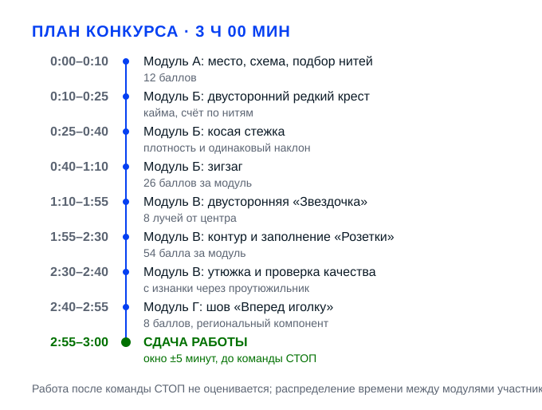
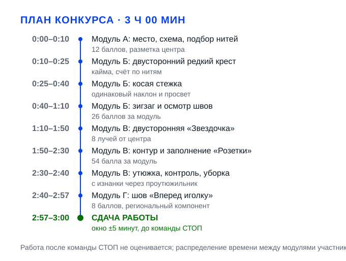
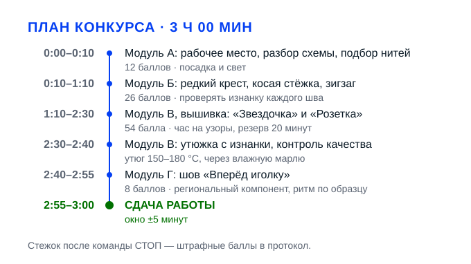

Мастер народно-художественных промыслов (Чувашская вышивка) (Р)
Задания ниже — официальные файлы «Абилимпикс» (источник: abilympics-russia.ru), разложенные по категориям. Решения написаны по тексту задания, регламенту и критериям оценки; в них указано, что именно проверяет эксперт.
Школьник
14–16 лет, базовый уровень заданияВыдержка из официального конкурсного задания: страницы, относящиеся к категории «Школьник» (стр. 4–7 источника).
Пошаговое решение
Конкурсное задание категории «Школьники» — вышитая салфетка на хлопчатобумажной канве, выполненная по схеме и образцу нитями мулине. Четыре модуля на три часа: подготовка к вышивке (10 минут, 12 баллов), декоративные швы — двусторонний редкий крест, косая стежка, зигзаг (1 час, 26 баллов), вышивка двусторонней «Звездочки» и заполнение «Розетки» вместе с утюжкой и контролем качества (1 час 30 минут, 54 балла) и декоративный шов «Вперед иголку» как региональный компонент (20 минут, 8 баллов). Всего 100 баллов, и распределить время между модулями участник может сам. Главное, что стоит понять до старта: чувашская вышивка счётная, каждый стежок привязан к числу нитей канвы, а изнанка оценивается наравне с лицом — поэтому выигрывает не тот, кто быстрее двигает иглой, а тот, кто сначала считает, потом шьёт. Ниже задание разложено на шаги — с числами нитей, размерами стежков и признаками проверки.

Задача 1. Модуль А: организовать рабочее место, разобрать схему, подобрать нитиМодуль А · 12 баллов · 10 минут
Первый модуль самый короткий: на всё про всё десять минут, и за них нужно успеть привести в порядок стол, понять схему и образец и разложить мулине по цветам. Модуль оценивается измеряемо и стоит 12 баллов из 100 — это те баллы, которые берутся не мастерством стежка, а собранностью: чистое место, правильно прочитанная схема, нити, подобранные по цвету и не путающиеся под рукой. Начинать с иглы, не разобравшись в схеме, — самая дорогая привычка: переделывать вышитое по счёту почти невозможно, а время модулей Б, В и Г уже расписано по минутам.
Действие 1.1. Привести в порядок место и посадку
Шаг 1.1.1
Начинаем с осмотра стола: на нём не должно оставаться ничего, что не относится к заданию. Убираем сумку, пенал, бутылку с водой — всё, что может задеть нить или сдвинуть канву в самый неподходящий момент. Кладём перед собой канву, справа ножницы, слева нитки в том порядке, в котором будем их брать, игольницу ставим ближе к правой руке, но так, чтобы она не стояла на пути локтя. Свет должен падать слева (для правши) или справа (для левши), но никогда из-за спины и не в лицо.
Организация рабочего места — первая строка модуля А, и весь модуль стоит 12 баллов из 100. Оценивают его измеряемо, по факту: свободен ли стол, лежит ли инструмент на своих местах, видно ли, что участник продумал порядок. Свет сбоку даёт тени в проколах канвы, а именно по ним и считают нити, поэтому ошибка в освещении — это не вопрос удобства, а прямая потеря точности счёта и, значит, баллов в модулях Б и В.
Проверьте три вещи, стоя у стола: тень от корпуса и руки не падает на рабочую зону, игла и ножницы достаются движением руки без наклона к столу, канва не бликует от лампы. Если приходится тянуться или щуриться — место организовано неверно, переставьте сейчас, потом будет поздно.
Типичная ошибка — оставить на столе телефон и личные вещи: за телефон начисляют штрафные баллы, а за вещи, сдвинувшие канву, — снимают балл за организацию. Вторая ошибка — сесть так, что свет из-за спины: канва уходит в тень руки, счёт нитей сбивается уже на пятом стежке, и работа идёт вслепую.
Эксперт проходит по площадке в первые минуты модуля А и фиксирует состояние стола и посадку; дальше он смотрит, сохраняется ли порядок к концу работы.
Шаг 1.1.2
Садимся так, чтобы корпус был в 25–30 см от канвы, локти лежали на столе, а спина касалась спинки стула. Канву держим в руках или на столе ровно, без перекоса: линия утка должна идти горизонтально линии стола, иначе узор ляжет по косой и это будет видно на готовой салфетке. Если стол регулируется, поднимаем его до уровня, при котором предплечье лежит горизонтально.
Посадка напрямую влияет на ровность стежка: при наклоне корпуса рука идёт по дуге, и стежки в ряду получаются разной высоты. Кроме того, работа за вышивкой требует долгого статичного положения, и правильно выставленная высота стола — это ещё и профилактика боли в спине и шее, из-за которой на третьем часу теряется внимание, а вместе с ним и баллы за аккуратность.
Сядьте, положите руки на стол и посмотрите на канву: она должна быть видна целиком без наклона головы. Проверьте линию утка — приложите линейку или просто край стола: нити канвы идут параллельно краю.
Работать, положив канву на колени или держа её на весу: ткань провисает, натяжение нити гуляет, и двусторонний шов перестаёт быть двусторонним. Вторая ошибка — сидеть вполоборота к столу, из-за чего правая рука работает на весу и устаёт к середине модуля Б.
Посадку эксперт отмечает вместе с организацией места: смотрит, устойчиво ли сидит участник и не приходится ли ему наклоняться к работе. Отдельно отмечается, не приходится ли участнику подкладывать под канву вторую руку, чтобы удержать её на весу: так работают только те, кто не выставил посадку.
Шаг 1.1.3
Раскладываем инструмент по назначению: иглу в игольницу, ножницы для нити — справа, наперсток на средний палец правой руки, если им пользуемся, и отдельно — маленькие ножницы для подрезания. Иглу берём вышивальную № 22–24 с удлинённым ушком: она проходит между нитями канвы, не раздвигая их, а ушко принимает мулине в две нити без усилия. Проверяем, что игла не ржавая и не гнутая, а ножницы режут кончик нити, а не жуют его.
Инструмент не по назначению — отдельное основание для штрафных баллов, и это указано в конкурсном задании прямым текстом. Практическая сторона проще: тупая игла рвёт нити канвы и оставляет затяжки, которыми потом невозможно выровнять счёт, а затупившиеся ножницы дают лохматый срез — такой кончик нити вылезает на лицевую сторону уже через несколько стежков.
Проверьте иглу на пробном проколе в углу канвы: она должна входить с лёгким щелчком, не раздвигая нити веером. Ножницы проверяем на обрезке мулине — срез должен быть чистым, без белых волокон по краю.
Брать иглу «какая нашлась», слишком толстую для канвы: каждый прокол раздвигает нити, и в готовой салфетке на месте стежка остаётся дырка. Вторая ошибка — обрезать нить зубами или рвать руками: это прямо запрещено инструкцией по охране труда и фиксируется как нарушение.
Эксперт смотрит на инструмент в руках участника в первые минуты и отдельно отмечает случаи использования ножниц или иглы не по назначению. Инструмент на столе он тоже считает: игла, ножницы и наперсток должны быть на своих местах, а не в кармане и не под канвой.
Действие 1.2. Разобрать схему и образец
Шаг 1.2.1
Кладём перед собой схему и образец рядом, на одном расстоянии от глаз. Сначала находим ключ: в нём указано, какой знак или символ соответствует какому шву и какому цвету нити. Считаем, сколько разных символов на схеме и сколько позиций мулине в ключе — числа должны совпадать, и это первая проверка того, что схема прочитана правильно. Затем обводим карандашом или отмечаем пальцем границы салфетки: где кайма, где центральное поле, где угловые мотивы.
Умение читать схему входит в модуль А на 12 баллов, и это тот навык, без которого остальные 88 баллов просто не набираются: шов, вышитый не по схеме, оценивается как ошибка композиции независимо от качества исполнения. Соотнесение схемы с образцом нужно ещё и потому, что в задании есть 30-процентное изменение: один шов заменяют, один усложняют, и правильный вариант виден только в связке «схема плюс образец».
Проверьте себя так: закройте ключ и по памяти назовите, каким швом вышивается кайма и каким — центр. Если ответ не автоматический, вернитесь к ключу. Затем сравните цвета на схеме с цветами на образце: оттенки должны читаться как одна и та же пара.
Начать вышивать, посмотрев только на образец и не открыв ключ: символы похожи, и вместо косой стежки получается зигзаг — переделка занимает время модуля В. Вторая ошибка — читать схему, держа её на коленях, и терять место счёта при каждом взгляде на канву.
Эксперт может попросить показать на схеме, где начинается тот или иной мотив, — так проверяется, что участник действительно разобрал схему, а не копирует механически.
Шаг 1.2.2
Пересчитываем ключевые размеры по клеткам: ширину и высоту каймы, диаметр розетки, количество лучей звездочки, шаг повторов по периметру. Записываем на свободном поле схемы карандашом два-три числа — например, «кайма 8 нитей, розетка 24 нити, лучей 8». Это не формальность: в чувашской вышивке узор строится по счёту ниток, и вся композиция держится на том, что число нитей в повторе одинаково с четырёх сторон.
Счёт по нитям — основа композиции, и именно за счёт вышивка этого вида называется счётной. Если не сверить габариты до начала работы, к концу модуля В выяснится, что мотив не влезает в поле или, наоборот, сдвинут на две нити от центра, и тогда страдает самый дорогой критерий — модуль В на 54 балла, где оценивают и композицию, и симметрию.
Проверяем арифметикой: сумма ширины каймы, поля и центрального мотива должна давать габарит салфетки. Если сумма не сходится хотя бы на две нити, значит, где-то пропущен ряд — найдите его сейчас, а не после первого вышитого угла.
Считать «на глаз» по образцу, не сверяясь с клетками схемы: образец и схема в масштабе не совпадают, и на канве мотив растягивается. Вторая ошибка — считать от края канвы, а не от размеченной границы салфетки: потом весь узор оказывается смещённым на 3–4 нити.
Эксперт смотрит, есть ли на схеме участника рабочие пометки: люди, которые действительно считают, всегда что-то отмечают. Если пометок на схеме нет, он вправе уточнить два-три числа — и по ответу сразу видно, разобрана схема или участник надеется на память.
Шаг 1.2.3
Составляем порядок работы и держим его в голове: сначала кайма и декоративные швы модуля Б, потом центральные мотивы «Звездочка» и «Розетка» модуля В, в конце — шов «Вперед иголку» модуля Г. Внутри каждого этапа идём от края к центру и от крупных форм к мелким, чтобы не пришлось протягивать нить через уже вышитое поле. Проговариваем последовательность швов вслух или записываем в углу схемы тремя словами.
Последовательность вышивки конкурсант определяет сам — это сказано в задании, и значит, за неё тоже дают баллы: логичный порядок экономит 10–15 минут из трёх часов, а эти минуты можно вложить в качество двусторонней звездочки. Движение от края к центру нужно потому, что рабочая нить, протянутая через вышитое поле, оставляет на изнанке следы, а изнанка в этой компетенции оценивается наравне с лицом.
Проверьте план на конфликт: ни один шов не должен пересекать уже готовый участок. Если такой конфликт есть, меняйте порядок сейчас — на канве это будет стоить целого мотива. Если два мотива претендуют на одно место на канве, план надо менять сейчас, пока не сделан ни один стежок, — потом это стоит целого мотива.
Идти строго по номерам схемы, не глядя на то, где уже лежит нить: получаются протяжки через все поле, и изнанка выглядит как сетка. Вторая ошибка — начать с центра, потому что «он самый красивый»: края остаются на потом, и на них не хватает времени.
Эксперт наблюдает, в каком порядке участник берётся за мотивы, и отмечает в протоколе случаи, когда работа велась хаотично. Опоздание с началом работы он фиксирует тоже: в модуле Б всего час, и потерянные десять минут видны к его концу.
Действие 1.3. Подобрать нити по цвету
Шаг 1.3.1
Раскладываем пасмы мулине по ключу схемы: каждой позиции — своя кучка, и рядом с кучкой кладём полоску бумаги с номером цвета. Пасмы не смешиваем и не наматываем на руку: мулине от этого путается и теряет ровность, а распутывание съедает время. От каждой пасмы отрезаем рабочую нить длиной 40–50 см — не больше, потому что длинная нить трётся о канву, лохматится и теряет блеск уже к середине работы.
Подбор нитей по цвету — третья строка модуля А, и она целиком входит в 12 баллов. Цвет в чувашской вышивке — не украшение, а часть канона: композиция держится на контрасте и на повторе оттенка в кайме и центре, и замена одного тона на «похожий» видна сразу. Длина 40–50 см — практическая норма: на таком отрезке нить не успевает распушиться и сохраняет ровный блеск до конца вышивки.
Проверяем раскладку: количество кучек равно количеству позиций в ключе, у каждой есть подпись, ни одна пасма не перекручена вокруг другой. Рабочие нити отрезаны заранее — по одной на каждый цвет, а не по мере необходимости.
Отрезать сразу всю пасму: она путается, и половину времени модуля Б участник разбирает узелки. Вторая ошибка — подписывать цвета по памяти, без бумажек: близкие оттенки в мулине неразличимы на глаз при вечернем свете, и кайма получается разнотонной.
Эксперт подходит к столу в модуле А и смотрит на раскладку: порядок на столе читается как признак того, что участник умеет организовывать материал. Пасмы, перекрученные в жгут, он считает признаком того, что участник ещё не работал с мулине и не знает, как оно ведёт себя в руках.
Шаг 1.3.2
Проверяем цвет на самой канве: прикладываем нить к ткани в том месте, где будет мотив, и отходим на шаг. Мулине на белой канве выглядит темнее, чем в пасме, а два соседних оттенка могут слиться. Смотрим на пару «нить — канва» при том свете, который есть на площадке, а не при том, который был дома: цветовое восприятие зависит от лампы, и это единственный момент, когда ошибку ещё можно исправить.
Задача модуля А прямо называет результат — «определение цветовой гаммы вышивки», и это отдельный измеряемый признак. Слишком близкие оттенки убивают читаемость узора: розетка перестаёт отделяться от фона, и эксперт в модуле В снижает балл за композицию, хотя шов выполнен безупречно. Проверка на канве нужна потому, что контраст зависит от плотности ткани.
Проверьте контраст в двух местах: на кайме и в центре. Нить должна читаться на канве с расстояния вытянутой руки — если приходится всматриваться, оттенок слишком близок к фону. Полезно отойти на два шага и прищуриться: если мотив расплывается в одно пятно, контраста не хватает и оттенок надо менять.
Доверять цвету в пасме и не прикладывать нить к ткани: на канве оттенок «садится» иначе, и вместо контраста получается пятно. Вторая ошибка — проверять цвета на весу против окна: просвет искажает тон, и на столе разница видна сразу.
Эксперт в модуле А проверяет, подобраны ли нити именно по ключу схемы, и отмечает случаи подмены оттенка «на похожий». Если участник взял оттенок из пасмы, не приложив его к ткани, это видно по готовой вышивке: кайма сливается с фоном, хотя шов выполнен верно.
Шаг 1.3.3
Определяем толщину рабочей нити: мулине отделяем на две нити, если схема выполнена на канве среднего счёта, и складываем их вместе, выравнивая концы. Пробуем один стежок в незаметном углу канвы и смотрим, закрывает ли нить клетку полностью и не тянет ли ткань. Если стежок лежит рыхло и канва просвечивает — добавляем третью нить, если ткань стягивается и морщится — возвращаемся к двум.
Толщина нити определяет, будет ли вышивка выглядеть плотной и ровной, и это одна из тех вещей, которые в модуле В оценивают по критерию качества исполнения. Слишком тонкая нить даёт бледный, «прозрачный» узор, слишком толстая стягивает канву, и салфетка после утюжки идёт волной — а утюжка и проверка качества прямо входят в 54 балла модуля В.
Проверяем на пробном стежке: нить закрывает клетку, ткань не стянута, проколы не раздвинуты веером. Посмотрите на канву под углом к свету — не должно быть волн вокруг стежка. Сравните пробный стежок с образцом: толщина линии должна совпасть, а не оказаться заметно тоньше или толще оригинала.
Брать мулине целиком, «чтобы было виднее»: стежок получается толстым, иглу приходится тянуть, канва растягивается, и на готовой салфетке остаются следы проколов. Вторая ошибка — не сделать пробный стежок и обнаружить проблему на третьем лепестке розетки.
Эксперт смотрит на пробные стежки и на то, как участник обращается с пасмой: аккуратно отделённые нити говорят о навыке. Отдельно он смотрит, не тянет ли участник нить из середины пасмы: так она путается, и это видно по узлам на рабочей нити.
Задача 2. Модуль Б: вышить декоративные швы по схеме и образцуМодуль Б · 26 баллов · 1 час
Час на декоративные швы — самая плотная часть конкурса: за 60 минут нужно проложить кайму двусторонним редким крестом, косой стежкой и зигзагом так, чтобы рисунок совпал со схемой и образцом. Модуль стоит 26 баллов и оценивается измеряемо: считают количество стежков в повторе, ровность ряда и совпадение с образцом. Последовательность швов участник определяет сам, поэтому выигрывают те, кто заранее решил, с какого края идёт и где меняет нить, а не те, кто начинает с середины и мечется между углами.
Действие 2.1. Закрепить нить и начать первый шов
Шаг 2.1.1
Закрепляем нить без узла: вводим иглу с изнанки в том месте, где ляжет первый стежок, оставляем хвостик 1,5–2 см на изнанке и придерживаем его пальцем левой руки. Первые три-четыре стежка прокладываем так, чтобы они прижали этот хвостик к ткани с изнанки, и только потом отпускаем. Узел не вяжем ни в начале, ни в конце — в счётной вышивке он даёт на изнанке бугорок, который виден на просвет и портит обратную сторону.
Чистая изнанка — половина оценки за двусторонние швы, а в модуле В двусторонняя «Звездочка» оценивается именно по совпадению лица и изнанки на 54 балла. Узел на изнанке виден через канву на просвет, и эксперт при проверке качества переворачивает работу. Кроме того, узел — это точка, из которой нить потом вытягивается при утюжке, и на готовой салфетке появляется затяжка.
Проверьте изнанку на просвет у лампы: в месте закрепления не должно быть ни бугорка, ни тёмной точки. Хвостик полностью закрыт стежками и не торчит. Посмотрите на изнанку с расстояния двадцати сантиметров: место закрепления не должно выделяться ни плотностью, ни блеском, а хвостик не должен выглядывать из-под стежков.
Закреплять нить узлом «так привычнее»: на изнанке образуется комок, и при утюжке он продавливается через ткань — на лице появляется вмятина. Вторая ошибка — оставить хвостик длиной 4–5 см: он цепляется за соседние нити и вытягивается наружу уже в процессе работы.
Эксперт проверяет закрепление нити в момент, когда участник берёт новый цвет, и отдельно осматривает изнанку во время оценки модуля. Проверяет он это в тот момент, когда участник берёт новый цвет, и отдельно возвращается к изнанке при оценке модуля, когда работа уже снята со стола.
Шаг 2.1.2
Находим на канве точку старта по схеме: обычно это угол каймы, отступ от кромки на 6–8 нитей. Отсчитываем нити от края и от угла, вкалываем иглу строго в перекрестие, а не между нитями, и делаем первый стежок по счёту — например, три нити канвы в длину. Сразу проверяем, что стежок лёг ровно по линии утка или основы, а не по косой. Первый прокол делаем строго в перекрестие, а кончик нити уводим на изнанку целиком и сразу прижимаем следующими стежками.
Счётная вышивка держится на том, что каждый стежок привязан к числу нитей, и одна ошибка в начале сдвигает весь ряд. Модуль Б оценивают по совпадению с образцом, и сдвиг на две нити виден как расхождение рисунка — за это снимают баллы и за композицию, и за точность. Вкалывать в перекрестие нужно потому, что прокол между нитями раздвигает ткань и стежок «плывёт».
Проверьте первый стежок линейкой или кончиком иглы: он должен идти прямо по линии канвы. Отсчитайте от него до края ровно то число нитей, что записано в плане. Проверьте также, что все проколы попали в перекрестия, а не между нитями ткани: иначе стежок съедет на пол-нити и повтор перестанет совпадать со схемой.
Начинать «примерно от угла», не отсчитывая нити: к концу каймы ряд не сходится с противоположной стороной. Вторая ошибка — вколоть иглу между нитями: стежок получается на пол-нити короче, и повтор перестаёт совпадать.
Эксперт в первые минуты модуля Б подходит и смотрит на первый стежок именно потому, что по нему видно, считает участник или работает на глаз. По первому стежку он видит, считает участник или работает на глаз, и делает по нему вывод о всей дальнейшей работе.
Шаг 2.1.3
Рабочую нить держим коротко, не длиннее 40–50 см, и при каждом стежке протягиваем её плавно, без рывка, придерживая ткань левой рукой. Следим, чтобы нить не перекручивалась: если она начала крутиться в спираль, даём игле свободно повиснуть на пару секунд и раскручиваем её обратным движением. Иглу выводим с изнанки в перекрестие, а не рядом с ним. После каждого стежка проверяем, что нить не захватила лишнюю нитку канвы и не легла петлёй с изнанки.
Перекрученная нить ложится неровно и даёт разную толщину стежка, а на двусторонних швах это видно сразу с обеих сторон. Рывок при протягивании растягивает прокол, и в готовой работе остаются точки-дырочки, которые потом не закрыть никакой утюжкой — а качество готовой салфетки проверяют в модуле В.
Проверьте стежок на ощупь: он лежит ровно, без перехлёста, нить блестит и не пушится. Канва вокруг стежка не собрана в мелкие складки. С изнанки нить идёт кратчайшим путём, без петель и узелков, а на просвет не видно утолщений: ровная изнанка здесь так же важна, как ровное лицо.
Тянуть нить сильно, «чтобы стежок был тугой»: ткань стягивается, и после десяти стежков кайма идёт волной. Вторая ошибка — работать длинной нитью в метр: она трётся, лохматится и к концу ряда становится на тон толще начала.
Эксперт смотрит на характер движения руки: плавное протягивание без рывков он отмечает как навык владения техникой. Плавное протягивание без рывков он отмечает как навык владения техникой и переносит это наблюдение в оценку модуля целиком.
Действие 2.2. Вышить двусторонний редкий крест
Шаг 2.2.1
Размечаем квадраты креста по схеме: редкий крест — это крестики, разнесённые на несколько нитей друг от друга, а не сплошное поле. Отсчитываем шаг между центрами крестиков по клеткам схемы и запоминаем его как ритм: например, крест на четырёх нитях, промежуток в четыре нити. Первый ряд ведём от левого нижнего угла каймы вправо, чтобы рабочая нить не возвращалась через вышитое.
Редкий крест — первый из швов, названных в задании, и его рисунок задан схемой, поэтому шаг между крестиками — не вкусовое решение, а измеряемый параметр. Двусторонний он потому, что на изнанке получается такой же крест, и именно это отличает чувашскую счётную вышивку от обычного вышивания крестом, где изнанка — набор протяжек.
Проверьте первые три крестика: расстояние между ними одинаковое, центры лежат на одной линии утка. Приложите иглу вдоль ряда — центры должны идти по ней без отклонений. Последний крестик ряда должен попадать в границу каймы по схеме, а не выходить за неё: проверьте это до того, как ряд будет закончен.
Размечать шаг «на глаз по образцу»: к пятому крестику ритм уходит, и весь ряд приходится переделывать. Вторая ошибка — начинать с середины каймы: при возврате к краю не хватает места, и последний крест не влезает в отведённые нити.
Эксперт проверяет ритм ряда на всём протяжении каймы, а не только на первых крестиках. Проверяет он ритм ряда на всём протяжении каймы, а не только на первых крестиках, потому что сбитый шаг виден именно на длине, а не на трёх первых повторах.
Шаг 2.2.2
Выполняем первый диагональный стежок креста: с изнанки игла выходит в левом нижнем углу квадрата, уходит в правый верхний, и на лице ложится диагональ. Стежок ведём точно по перекрестиям, длина — четыре нити канвы, натяжение среднее: нить лежит на ткани, но не вдавливается в неё. Второй стежок кладём сверху так же, из левого верхнего угла в правый нижний, и получаем ровный крест.
Двусторонний крест требует, чтобы обе диагонали были одинаковой длины и плотности, иначе на изнанке крест получится перекошенным. Модуль Б стоит 26 баллов, и в нём оценивают именно совпадение с образцом: крест с диагоналями разной длины читается как небрежность, даже если остальная вышивка безупречна.
Проверьте крест с лица и с изнанки, повернув канву: обе стороны должны показывать одинаковый крест, концы диагоналей — в одних и тех же перекрестиях. Нить не должна перекрещиваться дважды в одном месте.
Класть второй стежок не по тем же углам, а рядом: крест получается с «ушком», и изнанка перестаёт повторять лицо. Вторая ошибка — сильно затягивать диагональ, отчего квадрат стягивается в ромб. Третья беда — шить крест «на глаз», без счёта углов: к пятому крестику ряд уезжает со схемы на две-три нити.
Эксперт поворачивает работу и сравнивает лицо с изнанкой — это ключевая проверка двустороннего шва. Поворачивает он работу и сравнивает лицо с изнанкой — это ключевая проверка двустороннего шва, и по ней сразу видно, понимает ли участник, зачем крест называется двусторонним, или просто повторяет движения.
Шаг 2.2.3
Двигаемся по ряду вправо, пропуская положенное число нитей между крестиками, и следим за расходом нити: когда до конца остаётся примерно 8–10 см, заканчиваем крест и закрепляем нить под стежками с изнанки, проводя её под тремя-четырьмя уже вышитыми стежками. Новую нить вводим в том же порядке, прижимая хвостик следующими стежками, и продолжаем ритм с того же места.
Закрепление под стежками — единственный способ, который не портит изнанку: узел или длинная протяжка сразу видны на просвет. Смена нити на последних сантиметрах, а не на последнем стежке, нужна потому, что обрывать нить у самой ткани — значит оставить лохматый кончик, который вылезет на лицо при утюжке.
Проверьте место стыка двух нитей: на лице не должно быть утолщения, на изнанке — узла. Ряд крестиков после стыка идёт с тем же шагом, что и до него. Кончик обрезанной нити должен быть убран под стежки и не торчать наружу ни с лица, ни с изнанки: проверьте это на просвет.
Обрывать нить зубами или тянуть до последнего сантиметра: кончик рвётся неровно, и на лице появляется «пушистая» точка. Вторая ошибка — менять нить в середине креста: половинки получаются разной толщины.
Эксперт смотрит на изнанку в местах смены цвета — там чаще всего и обнаруживаются узлы и протяжки. Отмечает он и то, сколько раз участник менял нить: слишком частые смены при коротких отрезках говорят о неумении рассчитать расход.
Шаг 2.2.4
Пройдя ряд, разворачиваем работу и проверяем двусторонность: на изнанке должен читаться такой же ряд крестиков с тем же шагом, без протяжек между ними. Если где-то протяжка всё же осталась, её не распускают сразу, а запоминают место и исправляют после того, как весь ряд закончен, — так расходуется меньше времени. Места с протяжками отмечаем кончиком иглы, чтобы не искать их повторно, и возвращаемся к ним только после того, как ряд закончен целиком.
Проверка изнанки — не формальность: в модуле В двусторонний узор «Звездочка» оценивают по совпадению сторон, и если на кресте участник привык оставлять протяжки, на звезде это превратится в потерю значительной части 54 баллов. Ряд проверяют целиком, а не по одному крестику, потому что ошибка ритма видна только на длине.
Проверьте ряд по трём признакам: шаг одинаковый, диагонали одной длины, на изнанке нет ни одной нити длиннее одного стежка. Отойдите на полшага — ряд должен читаться как ровная линия. Если ряд «гуляет» волной, значит, натяжение менялось от крестика к крестику, и это надо исправить до перехода к следующему шву.
Считать, что изнанку «всё равно не видно»: её видно на просвет и её проверяют при оценке. Вторая ошибка — исправлять каждый крестик сразу: на это уходит время модуля, а ряд всё равно придётся проверять целиком.
Эксперт оценивает двусторонность как отдельный признак качества и отмечает в протоколе, совпадает ли изнанка с лицом. Он же смотрит, нет ли на изнанке узлов: узлы видны на просвет и сразу снижают оценку, даже если лицо выполнено безупречно.
Действие 2.3. Вышить косую стежку
Шаг 2.3.1
Косая стежка — это ряд наклонных стежков, плотно прижатых друг к другу: игла идёт по диагонали через две-три нити вверх и четыре-пять нитей вправо, возвращается по изнанке под нижний край и снова выходит на лицо вплотную к предыдущему стежку. Первый стежок кладём от нижней линии каймы, каждый следующий — сразу за ним, без просвета и без нахлёста. Наклон у всех стежков один и тот же, примерно 45 градусов.
Косая стежка названа в задании вторым швом модуля Б и оценивается по ровности наклона и плотности ряда: это шов, в котором ошибка видна глазом сразу, потому что ряд читается как единая полоса. Одинаковый наклон нужен ещё и потому, что косая стежка в чувашской вышивке часто ограничивает мотив и держит его геометрию: если наклон «гуляет», розетка в модуле В теряет форму.
Проверьте первые пять стежков: они параллельны друг другу, верхние концы лежат на одной линии, просветов между стежками нет. Приложите иглу вдоль верхних концов — линия должна быть прямой. Наклон у всех стежков одинаковый, иначе полоса читается как «заваливающаяся» и мотив теряет геометрию.
Класть стежки с просветом: ряд превращается в пунктир, и мотив теряет контур. Вторая ошибка — менять угол наклона по ходу ряда: полоса получается «заваливающейся» к концу, и это видно на готовой салфетке.
Эксперт смотрит на ряд целиком и оценивает именно равномерность наклона — это самый быстрый способ отличить уверенную руку от тренированной наспех. Он также смотрит, не меняет ли участник угол после каждого стежка: ровный наклон — признак отработанной техники.
Шаг 2.3.2
Держим плотность: каждый следующий стежок выходит из ткани вплотную к предыдущему, но не заходит на него. Иглу при этом вводим не в тот же прокол, а в соседний, иначе ткань разбивается и ряд провисает. Протягиваем нить с одинаковым усилием: косая стежка плотная, и разница в натяжении превращает ровную полосу в волнистую. Каждые пять стежков останавливаемся и смотрим на полосу сбоку, а не только сверху: сбоку видно, ровно ли лежит каждая нить.
Плотность — измеряемый признак: в готовом ряду не должно быть просветов канвы, а количество стежков в повторе должно совпадать со схемой. Именно по плотности и ровности оценивают модуль Б на 26 баллов, и именно здесь чаще всего теряют баллы участники, которые торопятся успеть к концу часа.
Проверьте ряд на просвет: между стежками не должно быть видно белых точек канвы. Проведите пальцем вдоль полосы — она должна ощущаться как ровный валик, без бугров и провалов. Если полоса ощущается как жёсткий шнур, нить затянута слишком сильно, и это надо ослабить до конца ряда, пока ткань ещё не разбита.
Стараться «успеть» и класть стежки через нить: ряд выглядит рыхлым, и его приходится дополнять вторым проходом, на который нет времени. Вторая ошибка — вкалывать иглу в тот же прокол, отчего канва рвётся и стежки проваливаются.
Эксперт может измерить плотность на счёте: число стежков на участке в десять нитей должно совпадать со схемой. Так же он проверяет, ровно ли полоса отстоит от края каймы по всей длине: смещение в одну нить видно на фоне каймы.
Шаг 2.3.3
Дойдя до угла, разворачиваем ряд: последний стежок в углу должен быть короче или длиннее остальных в зависимости от схемы, и это место обычно указано на образце отдельно. Закрепляем нить под стежками с изнанки, затем начинаем новый ряд от того же угла вдоль другой стороны, сохраняя наклон зеркально. Стык в углу закрываем так, чтобы он не читался как разрыв полосы.
Углы — самое заметное место каймы: именно по ним видно, аккуратно ли выполнена работа, и в критериях оценки это относится к точности совпадения с образцом. Если угол не сведён, кайма «раскрывается» и весь мотив выглядит незамкнутым, а замкнутость контура — основа чувашского орнамента.
Проверьте угол с двух сторон: полосы сходятся, наклон симметричен, лишних нитей на изнанке нет. Посмотрите на угол с расстояния вытянутой руки — разрыва быть не должно. Толщина полосы на повороте не должна отличаться от толщины на прямой: если она толще, в углу легли лишние стежки.
Обрывать ряд, не дойдя до угла, и начинать новый «где удобно»: на месте стыка остаётся ступенька. Вторая ошибка — оставить в углу длинную протяжку по изнанке, которая стянет угол после утюжки. Третья — сводить угол «на глаз», не проверив счёт нитей от обеих сходящихся сторон.
Эксперт осматривает углы каймы отдельно: это точки, где концентрация ошибок максимальна. Он сравнивает углы между собой: если один сведён аккуратнее остальных, значит, участник просто не успел пройти все четыре и работа осталась неровной.
Действие 2.4. Вышить зигзаг
Шаг 2.4.1
Зигзаг строим по двум параллельным линиям: верхней и нижней границам полосы. Отсчитываем по схеме, на сколько нитей одна линия отстоит от другой, и намечаем кончиком иглы или намёткой первую пару точек. Стежок ведём по диагонали от нижней точки к верхней, следующий — от верхней к нижней, и так до конца полосы. Шаг по горизонтали должен быть одинаковым, иначе зубцы получатся разной ширины.
Зигзаг — третий шов модуля Б, и он самый чувствительный к счёту: зубцы строятся на двух линиях, и любая ошибка в шаге ломает весь ритм полосы. В задании прямо сказано, что при 30-процентном изменении один шов заменяют, а один усложняют, поэтому умение разметить зигзаг по двум линиям пригодится и в изменённом варианте.
Проверьте первые два зубца: они одинаковой ширины, вершины лежат на одной линии, основания — на другой. Приложите иглу вдоль вершин — линия должна быть непрерывной. Расстояние между вершинами равно числу нитей из схемы, а основания лежат на нижней линии: проверьте это на первых двух зубцах, прежде чем вести полосу дальше.
Размечать только верхнюю линию и «доводить» нижнюю на глаз: через несколько зубцов полоса уходит в сторону. Вторая ошибка — начинать зигзаг от середины: края остаются неровными, а именно они обрамляют мотив.
Эксперт проверяет зигзаг на совпадение с образцом: считает число зубцов на участке и сравнивает с рисунком. Если число зубцов совпало, но полоса сдвинута, он смотрит отступ от края: его тоже считают, и смещение на нить уже считается ошибкой.
Шаг 2.4.2
Ведём зигзаг строго по разметке, не срезая углы: игла должна попадать в перекрестие на верхней линии, затем в перекрестие на нижней, и на изнанке стежок ложится зеркально. Протягиваем нить с одинаковым натяжением — зигзаг натянут между двумя линиями, и разное натяжение стягивает полосу в одном месте и распускает в другом. Работаем от одного края к другому, не перескакивая через середину.
Зигзаг держит натяжение как пружина: если один зубец затянут сильнее, соседние перекашиваются, и полоса идёт волной. В модуле Б за это снимают баллы за точность, а в модуле В волнистая кайма не даст ровно разметить центр — а центр держит всю композицию на 54 балла.
Проверьте полосу на просвет и на ощупь: натяжение одинаковое, зубцы не стянуты, ткань между линиями не собрана. Положите на канву линейку — полоса должна идти параллельно краю. Проверьте и то, не стянуты ли зубцы: полоса должна быть упругой, а не волнистой, иначе после утюжки она пойдёт волной.
Тянуть каждый стежок «до упора»: полоса стягивается, и кайма перестаёт быть прямой. Вторая ошибка — идти зигзагом в обратном направлении, возвращаясь по своим стежкам: нить накладывается на нить, и зубец получается вдвое толще.
Эксперт обращает внимание на то, держится ли линия полосы: ровный зигзаг — признак уверенного счёта. Отдельно он смотрит, не пошла ли полоса «лесенкой» на повороте каймы: там чаще всего теряется ритм, и это видно сразу по неровным вершинам.
Шаг 2.4.3
Заканчиваем полосу закреплением нити под стежками и проверяем симметрию: сравниваем число зубцов на противоположных сторонах каймы, расстояние от края и высоту полосы. Если с одной стороны зубцов на один больше, значит, где-то сбился шаг, и это место надо найти сразу, а не после того, как кайма будет замкнута. Ищем сбитое место, ведя пальцем по вершинам и считая вслух, — так ошибка находится за минуту, а не за десять.
Симметрия каймы — часть композиции, и её проверяют при оценке модуля В, где за композицию и точность отведена наибольшая часть из 54 баллов. Асимметрия в счётной вышивке особенно заметна, потому что орнамент строится на повторе: глаз ловит разницу в один зубец мгновенно.
Проверьте четыре стороны: число повторов совпадает, отступ от края одинаковый, полоса не «съезжает» к углам. Сложите канву пополам по диагонали — полосы должны совпасть. Проверьте ещё и высоту полосы: она должна быть одинаковой на всех четырёх сторонах, иначе кайма выглядит перекошенной.
Замкнуть кайму, не сверив стороны: потом исправление требует распустить целый угол. Вторая ошибка — оставить проверку на конец конкурса, когда времени на переделку уже нет. Третья — считать повторы только на двух сторонах и забыть про две оставшиеся: на сдаче это видно сразу.
Эксперт при оценке складывает работу или прикладывает линейку — симметрию он проверяет инструментально. Он же смотрит, как замкнута кайма в углах: разрыв в углу виден сразу и снижает оценку за композицию.
Задача 3. Модуль В: двусторонняя «Звездочка», «Розетка», утюжка и контроль качестваМодуль В · 54 балла · 1 час 30 минут
Самый дорогой модуль конкурса: полтора часа и 54 балла из 100. Здесь нужно вышить двусторонний узор «Звездочка» — так, чтобы лицо и изнанка читались одинаково, — и заполнить «Розетку» контурными швами и швами для заполнения: контурным, «Вперед иголку», косой стежкой. В этом же модуле салфетку проутюживают, проверяют качество и убирают рабочее место, то есть финальную сдачу оценивают здесь же. Полтора часа хватает только в том случае, если центр размечен до первого стежка, а не найден «примерно посередине».
Действие 3.1. Вышить двусторонний узор «Звездочка»
Шаг 3.1.1
Находим центр поля и намечаем оси. Складываем канву пополам по ширине и по высоте, слегка прижимаем сгибы — на перекрестии получается точка, это и есть центр салфетки. От неё отсчитываем по схеме радиус звездочки (например, 12 нитей) и число лучей (чаще всего восемь), затем кончиком иглы помечаем четыре направления: вверх, вниз, влево, вправо — по линии основы и по линии утка. Диагональные лучи ведём от этих четырёх точек по счёту, а не на глаз.
«Звездочка» — двусторонний узор, и он симметричен относительно центра: если центр найден с ошибкой в две нити, все восемь лучей сместятся в одну сторону, и композиция модуля В развалится. Отсчёт от сгибов надёжнее, чем «на глаз от каймы», потому что кайма сама могла лечь с отступом. Восемь лучей — не случайное число: узор читается и с поворотом на 45 градусов, и именно это делает его двусторонним в полном смысле.
Проверьте центр так: расстояние от метки до левого и правого края поля должно быть одинаковым, до верхнего и нижнего — тоже. Проколите иглой метку и посмотрите на просвет: она должна попасть в перекрестие, а не в промежуток между нитями.
Находить центр на глаз, «по ощущению»: ошибка в три нити не видна на пустой канве, но после вышивки звезда оказывается сдвинутой, и это снимает баллы за композицию. Вторая ошибка — размечать оси карандашом или мылом: след останется на готовой салфетке, потому что стирать его в конкурсных условиях нечем.
Эксперт подходит в начале модуля В и смотрит на разметку центра — по ней сразу видно, считает участник или импровизирует. Он также смотрит на пометки: если центр отмечен иглой и виден сгиб, участник работал по счёту, а не угадывал середину.
Шаг 3.1.2
Вышиваем первый луч, идём от центра наружу. Кладём стежок от центра к концу луча по линии основы: игла выходит в центре, уходит в конец луча, затем возвращается по изнанке в центр и выходит снова в том же перекрестии. Получается стежок, одинаковый с лица и с изнанки. Длина первого луча — по схеме, обычно 10–12 нитей; запоминаем её, потому что все восемь лучей должны быть равны.
Двусторонний шов требует, чтобы каждый стежок был продолжением предыдущего на обеих сторонах: на изнанке нить идёт по тому же направлению, что и на лице, без перемычек. Именно совпадение сторон и оценивают в узоре «Звездочка», а это ядро 54 баллов модуля В. Равная длина лучей — условие читаемости: звезда с разными лучами выглядит как случайный набор стежков.
Проверьте первый луч с обеих сторон: на лице и на изнанке он занимает одни и те же перекрестия, нить не перекрещивается сама с собой. Длину сверьте со схемой по счёту нитей. Проверьте и то, что нить на изнанке идёт по тому же направлению, а не по кратчайшему пути между точками.
Тянуть нить через центр напрямую, оставляя на изнанке длинную протяжку: изнанка перестаёт повторять лицо, и звезда теряет двусторонность. Вторая ошибка — делать первый луч «пробным» и короче остальных: разница видна сразу.
Эксперт смотрит на первый луч и переворачивает работу: по первому лучу он делает вывод о технике участника. Если первый луч двусторонний, он переходит к остальным спокойно, а если нет — дальше смотрит работу пристрастнее.
Шаг 3.1.3
Продолжаем остальные лучи по кругу, через 45 градусов: после вертикального луча — диагональный, затем горизонтальный, и так все восемь. Каждый раз отсчитываем нити от центра, а не от соседнего луча, иначе ошибка накапливается. Порядок обхода — по часовой стрелке, чтобы рабочая нить не проходила дважды через один и тот же участок. Каждый луч сверяем с предыдущим по длине: они должны быть равны до нити, иначе звезда перестаёт читаться как симметричная форма.
Восемь лучей должны сойтись в одной точке и дать ровную симметричную розетку — это и есть проверка композиции в модуле В. Отсчёт от центра, а не от соседа, нужен потому, что при обходе по кругу ошибка складывается: сдвиг на одну нить в каждом луче даёт на восьмом луче сдвиг на восемь нитей, и звезда перекашивается в одну сторону.
Проверьте после четвёртого луча: противоположные лучи на одной прямой, концы равноудалены от центра. Разверните работу — на изнанке должен читаться тот же рисунок без единой протяжки. Проверьте и расстояния между концами соседних лучей — они должны быть одинаковыми по всему кругу.
Идти по кругу «по памяти», не сверяясь со схемой: на пятом-шестом луче счёт сбивается, и один луч выходит короче. Вторая ошибка — сначала вышить все лучи одного направления, а потом остальные: нить на изнанке идёт по уже вышитому и стягивает центр.
Эксперт оценивает звезду как единую форму: смотрит на симметрию и на совпадение сторон, а не на отдельные стежки. Симметрию он проверяет, переворачивая работу и складывая её по осям: сложенная звезда должна совпасть сама с собой.
Шаг 3.1.4
Заполняем центр звезды: по схеме он либо остаётся точкой из пересечения лучей, либо закрывается небольшим квадратом или крестиком. Если центр закрывается, кладём стежки последними, поверх схождения лучей, и выводим иглу строго в перекрестия, чтобы не разбить уже вышитое. Нить закрепляем с изнанки под ближайшим стежком, а не узлом. Стежки заполнения кладём в том же ритме, что и лучи, чтобы центр не выбивался из общего рисунка.
Центр — точка, по которой глаз считывает симметрию всей розетки: если он «разъехался», восемь идеальных лучей всё равно выглядят криво. Закрывать центр последним нужно потому, что стежки заполнения проходят через самое плотное место, и вколоть иглу там сложнее всего — на уже готовых лучах видно, куда попадать.
Проверьте центр на просвет: все восемь лучей сходятся в одной точке, заполнение не смещено ни на нить. Посмотрите на звезду с расстояния вытянутой руки — она должна читаться как круг с лучами. Если один луч «выпадает», найдите его сейчас: после заполнения центра исправить это будет уже сложнее.
Закрывать центр первым, а потом «подводить» лучи к нему: игла не проходит через плотное заполнение, и лучи выходят в стороне от центра. Вторая ошибка — оставить центр пустым, хотя по схеме он закрыт. Третья — заполнять центр слишком туго: ткань стягивается, и лучи идут волной.
Эксперт смотрит на центр звезды при увеличении: именно там видны все огрехи натяжения. Он смотрит, не разъехались ли лучи: в плотном центре ошибка видна как смещение на одну-две нити.
Шаг 3.1.5
Проверяем двусторонность звезды целиком: переворачиваем канву и сравниваем с лицевой стороной по каждому лучу. На изнанке не должно быть ни протяжек длиннее одного стежка, ни узлов, ни уплотнений. Если нашлась протяжка, её закрывают дополнительным стежком по рисунку, а не распускают всю звезду: распустить восемь лучей за оставшееся время уже не успеть.
Двусторонний узор «Звездочка» назван в задании отдельно, и именно его двусторонность — главный измеряемый признак модуля В на 54 балла. Проверка целиком, а не по одному лучу, нужна потому, что протяжки появляются в местах перехода между лучами, а не внутри них. Исправление дополнительным стежком по рисунку — стандартный приём: он не нарушает композицию и экономит время.
Проверьте изнанку по трём признакам: нет протяжек, нет узлов, рисунок повторяет лицо. Разверните работу к свету — на просвет не должно быть тёмных пятен. Сравните число лучей и их длину с лицевой стороной: расхождение хотя бы в одном луче — уже дефект.
Считать, что изнанка «не оценивается»: её смотрят, и за протяжки снимают баллы именно в этом модуле. Вторая ошибка — распускать звезду целиком из-за одной протяжки и не успеть вышить её заново. Третья — прятать протяжку под соседним стежком и надеяться, что её не найдут: на просвет она видна.
Эксперт переворачивает работу при оценке модуля В и сравнивает стороны по каждому мотиву. Он отдельно отмечает, есть ли на изнанке узлы: один узел читается как незавершённая работа.
Действие 3.2. Обвести «Розетку» контурным швом
Шаг 3.2.1
Контурный шов ведём по линии рисунка: игла выходит на лице в начале линии, уходит вперёд на 3–4 нити, а следующей стежок начинается из середины предыдущего — игла выходит ровно между его началом и концом, отступив назад примерно на половину. Нить при этом ложится ровной линией без просветов, а проколы образуют непрерывную дорожку по контуру розетки.
Контурный шов назван в задании первым среди швов для контура, и именно он держит форму «Розетки» — самого крупного мотива салфетки. Ровный контур читается как граница, внутри которой потом ложится заполнение, и если линия «гуляет», заполнение приходится подгонять, теряя время модуля. Возврат на половину стежка — то, что отличает контурный шов от простого «вперёд иголку»: он даёт непрерывную линию.
Проверьте первые пять стежков: линия непрерывная, стежки одинаковой длины, проколы идут по одной дорожке. Посмотрите на контур с изнанки — он должен быть такой же линией, а не пунктиром из отдельных проколов.
Вести контур швом «вперёд иголку» и называть его контурным: линия получается прерывистой, и граница розетки читается как пунктир. Вторая ошибка — вкалывать иглу сбоку от линии, из-за чего контур «толстеет» и съедает место у заполнения.
Эксперт смотрит на контур розетки как на границу мотива: неровная линия снижает оценку за композицию. Он смотрит и на толщину линии: если она «толстеет» на поворотах, значит, контурный шов выполнен с ошибкой в возврате на половину стежка.
Шаг 3.2.2
Обходим розетку по кругу, не разрывая линию: дойдя до места, где контур замыкается, кладём последний стежок так, чтобы он перекрыл первый на 2–3 нити и слился с ним. Если по схеме розетка состоит из лепестков, каждый лепесток обводим отдельно, начиная от основания, и следим, чтобы лепестки не наезжали друг на друга. Первый лепесток ведём от основания вверх, а не сверху вниз: так удобнее держать счёт нитей и не сбиваться на закруглении.
Замкнутый контур — признак законченной формы: в чувашском орнаменте мотив всегда замкнут, и разрыв читается как незавершённая работа. Перекрытие первого стежка последним нужно, чтобы не осталось ступеньки на стыке — именно стык проверяют при оценке точности в модуле В.
Проверьте замыкание: на стыке нет ступеньки, толщина линии не меняется, разрыва не видно ни с лица, ни с изнанки. Проведите пальцем по контуру — он должен ощущаться ровным. Сравните толщину линии в начале и в конце обхода: она не должна меняться, а на изнанке контур должен читаться так же ясно, как на лице.
Замыкать круг внахлёст на 5–6 нитей: в этом месте линия становится вдвое толще и видна как узел. Вторая ошибка — оставить между первым и последним стежком зазор в одну-две нити: контур выглядит разомкнутым.
Эксперт осматривает стык контура отдельно: это типичное место потери балла. Он проверяет, совпадает ли стык с той точкой, которая указана на схеме, и нет ли на нём утолщения.
Шаг 3.2.3
Следим за натяжением по всей длине контура: контурный шов идёт по кривой, и на поворотах нить имеет свойство стягиваться сильнее. На закруглениях уменьшаем длину стежка до 2–3 нитей, а на прямых участках держим 4 нити — так линия повторяет изгиб без изломов и «уголков». На самом закруглении уменьшаем шаг ещё на одну нить, а после него возвращаемся к четырём: так линия остаётся плавной на всём протяжении.
Натяжение на кривой — техническая тонкость, которая отличает аккуратный контур от «пиленного»: при одинаковой длине стежка на повороте линия ломается. Уменьшение шага на закруглениях позволяет точно повторить рисунок, а совпадение с образцом — это то, что измеряют в модуле В.
Проверьте контур на закруглении: линия плавная, без изломов, стежки короче, но одинаковой толщины. Приложите к экрану или образцу — форма должна совпадать. Проверьте и толщину линии на повороте: она не должна быть толще, чем на прямом участке, иначе стежки легли с нахлёстом.
Держать одинаковую длину стежка на прямых и на поворотах: на закруглении линия идёт углами. Вторая ошибка — тянуть нить на повороте сильнее: радиус стягивается, и лепесток розетки получается меньше остальных.
Эксперт сравнивает форму розетки с образцом — плавность контура видна сразу. Он обращает внимание на углы: если лепесток «надломлен», значит, счёт нитей на повороте был сбит.
Шаг 3.2.4
Проходим контур взглядом от начала до конца и проверяем три вещи: линия замкнута, толщина одинаковая, форма совпадает со схемой по числу лепестков и их размеру. Замеченные неровности исправляем сразу, пока внутри розетки пусто: после заполнения подобраться к контуру будет уже нельзя. Если лепесток вышел на нить меньше, это ещё можно исправить дополнительным стежком по рисунку, не распуская контур целиком.
Контур — каркас, и заполнение ложится внутрь него: если каркас поведён, заполнение приходится подрезать по месту, а это видно как разная плотность. Проверка до заполнения экономит время, которого в модуле В полтора часа на всё. Кроме того, разница в высоте лепестков читается как нарушение симметрии, а симметрию в этом модуле проверяют инструментально.
Проверьте по счёту: число лепестков совпадает со схемой, каждый лепесток одинаков по высоте, расстояния между ними равные. Сложите канву по оси розетки — половинки должны совпасть. Проверьте и то, что контур не перекрывает место, отведённое под заполнение: иначе стежки заполнения не встанут по схеме.
Переходить к заполнению, не проверив контур: потом исправлять придётся вместе с заполнением. Вторая ошибка — «подровнять» контур дополнительным проходом поверх: линия становится вдвое толще. Третья — начинать заполнение, не проверив форму: исправлять придётся вместе с ним, а времени на это в модуле нет.
Эксперт оценивает розетку целиком: контур и заполнение он смотрит как единый мотив. Если контур и заполнение расходятся по форме, он снижает балл за точность, даже когда каждый шов выполнен правильно.
Действие 3.3. Заполнить «Розетку» швами по схеме
Шаг 3.3.1
Начинаем заполнение с шва «Вперед иголку» там, где он указан по схеме: игла идёт по линии, стежок 3–4 нити, пропуск 2–3 нити, и так до конца участка. Стежки кладём в одном направлении, с одинаковым натяжением, следя, чтобы пропуски были равными — именно они дают ритм, и именно по ним шов читается как декоративный, а не как намётка. Первый стежок начинаем строго от размеченной точки, а не «около неё»: сдвиг на нить сдвигает весь ритм.
Шов «Вперед иголку» стоит в задании дважды: он входит в модуль В как шов для заполнения, и он же вынесен в модуль Г как региональный компонент на 8 баллов. Значит, техника одна и та же, и то, что отработано внутри розетки, пригодится в последнем модуле. Равные пропуски — измеряемый признак: эксперт считает стежки на участке и сравнивает со схемой.
Проверьте ряд на счёт: стежки одинаковой длины, пропуски равны, линия идёт по схеме. Посмотрите с изнанки: там должен быть точно такой же пунктир со сдвигом на полшага, без длинных протяжек. Длина стежка должна совпадать со схемой на всём участке, а не только в начале ряда: проверьте это через десять стежков.
Класть стежки разной длины «как ляжет»: ритм рвётся, и шов выглядит как небрежная намётка. Вторая ошибка — делать пропуск в одну нить, отчего шов превращается в сплошную линию и теряет декоративность.
Эксперт считает стежки и пропуски на участке — это один из самых простых измеряемых критериев. Он же сверяет положение ряда: он должен отстоять от контура на указанное в схеме число нитей.
Шаг 3.3.2
Заполняем внутреннее поле лепестков косой стежкой: стежки кладём под углом 45 градусов к оси лепестка, вплотную друг к другу, от контура к центру розетки. Начинаем от края лепестка и ведём к середине, не перескакивая через ось: левая половина заполняется стежками одного наклона, правая — зеркального. Каждый следующий стежок кладём вплотную, чтобы внутри лепестка не осталось просвета канвы.
Косая стежка как заполнение названа в задании прямо в перечне швов модуля В, и её роль здесь другая, чем в кайме: она не ограничивает мотив, а создаёт плотность и направление. Зеркальный наклон половин нужен для того, чтобы лепесток читался как объёмный и не «заваливался» в одну сторону, — это часть оценки композиции.
Проверьте лепесток: заполнение доходит до контура без зазора и без наползания на него, наклон стежков симметричен относительно оси. Канва внутри лепестка не просвечивает. Проверьте и то, что заполнение не выходит за контур: граница должна остаться видимой по всей длине.
Заполнять лепесток стежками в одном направлении через ось: мотив выглядит перекошенным. Вторая ошибка — заходить стежками на контурный шов: граница «размывается», и контур перестаёт читаться. Третья — оставлять у контура непрошитую полоску: она видна как светлый зазор между границей и заполнением.
Эксперт смотрит на лепестки как на заполненные формы: проверяет плотность и направление стежков. Он смотрит на все лепестки подряд: разная плотность читается как небрежность, даже если шов выполнен верно.
Шаг 3.3.3
Держим плотность заполнения одинаковой во всех лепестках: после каждого лепестка проверяем, не осталось ли просветов канвы, и при необходимости добавляем один стежок между существующими. Рабочую нить протягиваем по изнанке под уже вышитыми стежками, а не поверх них, чтобы не создавать утолщений, которые проявятся после утюжки. Между лепестками нить ведём только по изнанке и только под стежками, чтобы на лице не появилось лишних утолщений.
Равная плотность — то, по чему судят о качестве заполнения: один лепесток плотнее другого сразу бросается в глаза, даже если шов выполнен правильно. Протяжка под стежками нужна потому, что утюжка с изнанки через влажную ткань проявляет все неровности: бугорок на изнанке становится видимым уплотнением на лице, а проверка качества прямо входит в модуль В.
Проверьте все лепестки по очереди на просвет: плотность одинаковая, просветов нет. Проведите пальцем по изнанке — не должно быть бугров и жёстких участков. Сравните лепестки между собой на просвет: плотность должна быть одинаковой, а просветов канвы не должно быть ни в одном.
Добивать плотность в одном лепестке и оставить другой рыхлым: разница видна как разная насыщенность цвета. Вторая ошибка — протягивать нить поверх вышивки: после утюжки на лице появляется рельефная полоса.
Эксперт оценивает заполнение на просвет и на ощупь, а также после утюжки — когда все неровности проявились. Он отдельно смотрит, не просвечивает ли канва в середине лепестков, — там плотность чаще всего ниже.
Шаг 3.3.4
Завершаем розетку центром: заполняем его по схеме — небольшим квадратом косой стежкой или концентрическими стежками, идущими от центра наружу. Последний стежок закрепляем под ближайшим стежком с изнанки, обрезаем нить ножницами под углом, оставив кончик 3–4 мм, и убираем его под стежки иглой. Если по схеме центр заполняется концентрическими стежками, начинаем от середины и идём наружу, придерживая ткань, чтобы центр не стянулся.
Центр розетки — самая плотная точка мотива, и именно там скапливаются концы нитей, если их не убрать: после утюжки они проступают на лице тёмными точками. Обрезка под углом и уборка кончика под стежки — приём, который сохраняет и лицо, и изнанку чистыми, а чистоту изнанки оценивают в модуле В наравне с лицевой стороной.
Проверьте центр: заполнение симметрично, концов нитей не видно ни с лица, ни с изнанки. Ногтем проведите по центру — не должно быть жёсткого комка. Посмотрите на центр на просвет: концов нитей быть не должно, а заполнение должно быть симметричным относительно осей розетки.
Оставить кончик нити 1 см и «спрятать» его, просто подоткнув: при утюжке он вылезет. Вторая ошибка — обрезать нить у самой ткани: срез распушится, и на лице появится пушистое пятно. Третья — оставлять в центре длинный кончик: он цепляется за иглу при следующих стежках и вытягивается на лицо.
Эксперт осматривает центр розетки и изнанку под ним — это место, где видно, насколько участник владеет финишными приёмами. Он проверяет и то, симметрично ли заполнение относительно осей розетки, и нет ли в центре жёсткого комка.
Действие 3.4. Проутюжить салфетку, проверить качество, убрать место
Шаг 3.4.1
Утюжим с изнанки, положив салфетку на гладильную доску лицом вниз и накрыв её проутюжильником — влажной хлопчатобумажной тканью. Утюг ставим на режим «хлопок» без пара, температуру проверяем на уголке канвы: если ткань не желтеет и не блестит, режим верный. Двигаем утюгом от краёв к центру, прижимая, но не растягивая салфетку, и не держим утюг на одном месте дольше двух-трёх секунд.
Утюжка прямо названа в задании модуля В и входит в 54 балла: именно она превращает вышивку в готовое изделие, расправляет канву и убирает следы пялец. Гладить с изнанки через проутюжильник нужно потому, что прямой контакт утюга с лицевой стороной приминает рельеф стежков и даёт лоск, а пар может «посадить» мулине и изменить цвет.
Проверьте канву после утюжки: она ровная, без волн и заломов, стежки не примяты, блеска на лице нет. Уголок, на котором проверяли температуру, не пожелтел. Проверьте и то, что стежки не примяты: рельеф должен читаться на ощупь, а канва — остаться ровной на просвет.
Гладить с лица и с паром: стежки приминаются, мулине теряет блеск, а на канве остаются лоснящиеся пятна — это видно при оценке. Вторая ошибка — водить утюгом, растягивая ткань: салфетка идёт ромбом, и геометрия каймы нарушается.
Эксперт смотрит на салфетку после утюжки: ровность канвы и сохранность рельефа — часть оценки качества. Он смотрит и на заломы: они остаются, если гладили, не расправив ткань, и видны как светлые полосы.
Шаг 3.4.2
Обрезаем лишнюю канву по периметру, если по заданию край обрабатывается: отступаем от каймы 6–8 нитей, режем по нити, а не поперёк, и держим ножницы строго вертикально. Край не подшиваем, если это не предусмотрено схемой: в конкурсном задании результат — вышитая салфетка, и лишняя обработка края может разойтись с образцом. Срез делаем одним движением ножниц, не «подстригая» край по частям и не поворачивая ножницы в процессе.
Ровный край по нити — внешний признак аккуратности: косой срез виден сразу и портит впечатление от всей работы. Обрезка по нити нужна ещё и потому, что счётная вышивка привязана к сетке канвы, и край, идущий по нити, показывает, что вся композиция выстроена по счёту.
Проверьте край: срез идёт по одной нити, без «лесенки», отступ от каймы одинаковый со всех четырёх сторон. Положите салфетку на стол — она должна лежать ровно, без перекоса. Проверьте отступ от каймы в четырёх точках — он должен быть одинаковым, а срез идти по одной нити без «лесенки».
Резать «по линейке» поперёк нитей: край получается косым, и отступ от каймы гуляет на 2–3 нити. Вторая ошибка — обрезать слишком близко к вышивке: остаётся край, который осыпается и цепляется за пальцы.
Эксперт осматривает периметр: ровность края и одинаковый отступ он проверяет линейкой или на глаз по кайме. Он смотрит и на осыпание: лохматый край говорит о том, что резали поперёк нитей, а не по нити.
Шаг 3.4.3
Проверяем качество по чек-листу, а потом убираем место: изнанка без узлов и протяжек, все швы по схеме, кайма замкнута, звезда симметрична, розетка заполнена, утюжка выполнена. Убираем иглу в игольницу, ножницы на место, обрезки нити в контейнер для мусора, канву складываем и убираем в отведённое место. Стол оставляем чистым: ни обрезков, ни пасм на нём остаться не должно.
Уборка рабочего места прямо включена в модуль В на 54 балла, и это последнее, что видит эксперт перед оценкой: чистый стол читается как «работа доведена до конца», а обрезки нити на столе — как небрежность. Кроме того, за нарушение правил охраны труда и оставленные без присмотра иглы начисляют штрафные баллы, а они вычитаются из общей суммы.
Проверьте финальное состояние: стол пустой, инструмент на местах, обрезки в контейнере, салфетка лежит ровно лицом вверх. Пройдите по чек-листу ещё раз, не полагаясь на память. Отдельно проверьте, не осталось ли на столе обрезков и не лежит ли игла открыто: за оставленную иглу начисляют штрафные баллы.
Оставить на столе обрезки и пасмы: их видно, и они снижают оценку за организацию. Вторая ошибка — убрать инструмент до того, как проверена работа: замеченный дефект уже нечем исправить. Третья — оставить на столе пасмы: они скатываются, мешают приёмке работы и читаются как небрежность.
Эксперт оценивает рабочее место после команды СТОП: порядок на столе он фиксирует отдельно. Он же смотрит, лежит ли салфетка так, как требует задание: лицом вверх и не смятой, иначе работа смотрится хуже, чем выполнена.
Задача 4. Модуль Г: декоративный шов «Вперед иголку» и сдача работыМодуль Г · 8 баллов · 20 минут
Последние двадцать минут конкурса отданы региональному компоненту — декоративному шву «Вперед иголку» по схеме и образцу. Модуль стоит 8 баллов из 100, и это единственный модуль, который можно выполнить полностью за отведённое время, если не тратить его на поиск места и пересчёт. Одновременно с ним работа сдаётся: салфетка проутюжена и проверена ещё в модуле В, поэтому здесь важно не добавить ошибок, а аккуратно замкнуть композицию и успеть до команды СТОП, потому что работа после команды не оценивается.
Действие 4.1. Разметить место и ритм шва
Шаг 4.1.1
Открываем схему и образец и находим, где по рисунку идёт шов «Вперед иголку»: чаще всего это линия, отделяющая кайму от поля, или обводка центрального мотива. Отсчитываем от края салфетки и от уже вышитой каймы то число нитей, которое указано на схеме, и помечаем кончиком иглы начало и конец участка. Если линия идёт по кругу, отмечаем четыре точки — верх, низ, лево, право, — чтобы не сбиться на середине.
Модуль Г оценивается по совпадению со схемой, и место линии — первое, что сверяют: шов, смещённый на две нити, нарушает композицию всей салфетки. Отсчёт от каймы, а не от края канвы, нужен потому, что кайма уже вышита и служит точкой привязки; кромка же после обрезки может уйти на нить.
Проверьте разметку: расстояние от каймы до линии одинаковое в двух противоположных точках, линия не пересекает уже вышитые мотивы. Посмотрите на салфетку целиком — линия должна читаться как граница. Проверьте и то, что линия не пересекает уже вышитые мотивы и не задевает контур розетки.
Вести шов «на глаз, между каймой и центром»: линия получается с перекосом, и это видно на фоне ровной каймы. Вторая ошибка — начать разметку от центра и не дойти до края: на последних сантиметрах линия уходит в сторону.
Эксперт в модуле Г первым делом сверяет положение линии со схемой и образцом. Если линия смещена, он отмечает это как ошибку композиции, а не как мелкий недочёт: сдвиг на две нити виден на фоне каймы.
Шаг 4.1.2
Определяем ритм по схеме: длину стежка и длину пропуска. В классическом «Вперед иголку» на канве это 3–4 нити стежка и 2–3 нити пропуска, но в конкретной схеме числа могут быть другими — берём их оттуда, а не по привычке. Считаем, сколько стежков укладывается на участке, и запоминаем это число: оно понадобится для проверки в конце. Записываем это число на свободном поле схемы, чтобы не держать его в голове и не пересчитывать на середине ряда.
Ритм — единственный измеряемый признак этого шва: эксперт считает стежки на участке и сравнивает со схемой, а разная длина стежков сразу читается как неряшливость. Модуль Г стоит 8 баллов, и потерять их можно на ровном месте — просто потому, что участник не посмотрел числа в схеме и вышил «как привык».
Проверьте арифметикой: длина участка, делённая на сумму стежка и пропуска, должна давать целое число. Если получается остаток, значит, ритм подобран неверно — уточните по схеме до первого стежка. Если остаток всё же есть, уточните у эксперта, как заканчивать ряд в этом случае, — лучше спросить до первого стежка.
Брать ритм «по памяти» с тренировки: на другой схеме числа другие, и шов не совпадает с образцом. Вторая ошибка — начинать с крупного стежка и постепенно его уменьшать: ряд получается с «наклоном» ритма.
Эксперт сверяет ритм с образцом визуально и на счёт — это самый быстрый способ оценить модуль. Он сравнивает и длину стежка, и длину пропуска: оба числа заданы схемой, и отклонение хотя бы в одном сразу видно.
Действие 4.2. Выполнить шов «Вперед иголку»
Шаг 4.2.1
Закрепляем нить без узла, как и во всей работе: первый стежок кладём в начале размеченного участка, оставив хвостик 1,5–2 см на изнанке, и прижимаем его следующими двумя стежками. Иглу вводим в перекрестие канвы, отсчитав нужное число нитей от метки, и выводим через 3–4 нити по линии. Нить держим средней длины — 40–50 см, чтобы она не успела распушиться до конца ряда.
Шов «Вперед иголку» идёт последним, когда салфетка уже проутюжена и проверена, поэтому испортить её на этом этапе особенно обидно: переделывать придётся вместе с утюжкой, а времени остаётся двадцать минут. Закрепление без узла нужно по той же причине, что и раньше: изнанку проверяют, и узел на ней виден на просвет.
Проверьте первый стежок: он лежит на размеченной линии, длина соответствует схеме, канва не стянута. Разверните работу — на изнанке должен быть виден такой же стежок со сдвигом. Проверьте и то, что нить не стянула ткань: канва должна остаться ровной, без мелких складок вдоль линии.
Начать шов с узла «чтобы держалось»: на изнанке появляется бугорок, который виден после утюжки. Вторая ошибка — вколоть иглу между нитями, а не в перекрестие: стежок съезжает с линии уже на втором шаге.
Эксперт смотрит на первый стежок каждого нового шва — по нему видно, считает участник или работает на глаз. Дальше он наблюдает, держится ли ритм к концу ряда, а не только в начале.
Шаг 4.2.2
Ведём ряд, повторяя ритм: стежок — пропуск, стежок — пропуск, и так до конца участка. Иглу не поворачиваем и не тянем нить вбок: она идёт по одной линии, а проколы остаются на одинаковом расстоянии друг от друга. На закруглениях линию ведём короче — стежок 2–3 нити, — чтобы шов повторил изгиб, а не срезал угол. На прямых участках возвращаемся к четырём нитям, чтобы ритм не «садился» и ряд не становился гуще к концу.
Ровный ритм — то, за что дают 8 баллов модуля Г: именно этот шов вынесен в региональный компонент и оценивается по совпадению с образцом. Уменьшение стежка на закруглениях — приём, который сохраняет форму линии: при одинаковой длине стежка на повороте шов идёт хордой и рисунок искажается.
Проверьте ряд на длине в десять стежков: длина стежков одинаковая, пропуски равные, линия прямая. С изнанки — такой же пунктир без протяжек. Сравните число стежков на участке с расчётным: оно должно совпасть, а сами стежки — быть одинаковыми по длине.
Ускорять работу и делать стежки всё короче к концу ряда: ритм «садится», и это видно как сгущение стежков на одном участке. Вторая ошибка — пропускать сложные места и возвращаться к ним потом: линия рвётся.
Эксперт оценивает ряд целиком, а не первые сантиметры: сбитый ритм виден именно на длине. Он смотрит и на конец ряда: там чаще всего стежки становятся короче, и именно по концу видно, рассчитывал участник время или торопился.
Шаг 4.2.3
Заканчиваем ряд закреплением нити: проводим её под последними тремя-четырьмя стежками с изнанки, не заходя на лицевую сторону, и обрезаем под углом, оставив 3–4 мм. Если по схеме линия замыкается, последний стежок кладём с перекрытием первого на 2–3 нити, чтобы стык не читался. Если линия не замыкается, конец ряда доводим до размеченной точки и только потом закрепляем нить с изнанки.
Закрепление под стежками и обрезка под углом — финишные приёмы, которые сохраняют изнанку чистой, а её оценивают во всех модулях. Перекрытие на стыке нужно, чтобы замкнутая линия не дала ступеньку: именно стык проверяют при сравнении с образцом. Кончик нити, оставленный длиннее, тоже виден на изнанке, а её осматривают во всех модулях.
Проверьте стык и закрепление: на лице нет ни узла, ни утолщения, на изнанке — ни протяжки, ни кончика. Проведите пальцем по линии — она должна быть ровной. Проверьте и то, что на изнанке нет протяжки от последнего стежка к месту закрепления.
Оборвать нить руками или зубами: срез получается лохматым, и на лице появляется пушистая точка. Вторая ошибка — не замкнуть линию, оставив между концами зазор: композиция читается как незавершённая. Третья — оставить длинный кончик: он вылезет на лицо при первой же утюжке.
Эксперт осматривает стык шва и место закрепления нити — это точки, где чаще всего остаются следы спешки. Он смотрит и на то, обрезана ли нить ножницами, а не оборвана руками: рваный срез он замечает сразу.
Действие 4.3. Проверить и сдать работу
Шаг 4.3.1
Проходим по салфетке по чек-листу, глядя на неё как эксперт: кайма замкнута и симметрична, двусторонний крест читается с обеих сторон, звезда симметрична и двусторонняя, розетка обведена и заполнена, шов «Вперед иголку» идёт по схеме с равным ритмом, изнанка без узлов и протяжек, канва проутюжена. Каждый пункт проверяем глазами и на ощупь, а не по памяти о том, как всё делалось.
Модули Б, В и Г вместе дают 88 баллов из 100, и оценивают их по совпадению с образцом и по качеству исполнения — то есть по тому, что видно на готовой салфетке. Финальный проход по чек-листу ловит ошибки, которые не были видны в процессе: например, незакрытый угол каймы или пропущенный стежок в звезде.
Проверьте по счёту, а не на глаз: число лучей звезды, число лепестков розетки, число повторов каймы на каждой стороне. Всё, что расходится со схемой, отметьте и решите, что успеваете исправить за оставшиеся минуты.
Ограничиться беглым взглядом «вроде всё на месте»: именно так пропускается незамкнутый контур или пропущенный луч. Вторая ошибка — начать исправлять всё подряд и не успеть сдать работу. Третья — не проверить изнанку, помня её по ходу работы: к концу конкурса на ней всегда появляется пара протяжек.
Эксперт оценивает салфетку по тем же признакам, что и в чек-листе, поэтому тренированный взгляд на свою работу — это навык, за который дают баллы. Он же смотрит, умеет ли участник показать работу, не трогая её руками и не разглаживая на столе.
Шаг 4.3.2
Убираем рабочее место до состояния, в котором его можно показать: иглу в игольницу, ножницы закрыты и на месте, обрезки нити в контейнер, пасмы сложены, канва не оставлена на краю стола. Проверяем пол под стулом — упавшие обрезки и булавки подбираем, потому что за оставленные иглы начисляют штрафные баллы. Пасмы складываем в том порядке, в каком они лежали в начале работы: так видно, что участник довёл уборку до конца, а не сдвинул всё в кучу.
Порядок на рабочем месте и соблюдение требований охраны труда оценивают отдельно, а штрафные баллы за нарушения вычитаются из общей суммы — то есть беспорядок прямо уменьшает результат. Уборка занимает две-три минуты, и её нужно планировать заранее, а не отрывать от вышивки в последний момент.
Проверьте стол и пол: на столе нет ничего, кроме инструмента на своих местах и готовой салфетки, на полу ничего не блестит. Инструмент разложен в том же порядке, в каком был в начале. Проверьте и контейнер для мусора: он должен быть закрыт, а не переполнен обрезками.
Оставить обрезки и пасмы на столе: это фиксируется как небрежность и снижает оценку за организацию. Вторая ошибка — оставить иглу воткнутой в канву: это прямое нарушение требований охраны труда. Третья — оставить на столе ножницы открытыми: это тоже нарушение требований охраны труда.
Эксперт осматривает место после команды СТОП, и состояние стола он фиксирует в протоколе. Он смотрит и на пол: упавшие обрезки считаются нарушением чистоты и фиксируются в протоколе.
Шаг 4.3.3
Сдаём работу до команды СТОП: кладём салфетку лицом вверх на отведённое место, при необходимости прикрепляем или подписываем так, как скажет эксперт, и отходим. Если до СТОП остаётся меньше пяти минут, лучше не начинать новое исправление, а довести до конца уже начатое: работа, брошенная на середине стежка, выглядит хуже, чем аккуратно законченная.
Работа после команды СТОП не оценивается — это прямое правило конкурса, и за работу до команды СТАРТ или после СТОП начисляют штрафные баллы. Планирование последних пяти минут входит в оценку организации: участник, который успевает сдать работу спокойно, показывает, что распределял время сам, а это разрешено условиями и входит в критерии.
Проверьте перед сдачей: салфетка лежит лицом вверх, не смята, инструмент убран, на столе порядок. После сдачи не возвращайтесь к работе — любое движение у стола после СТОП фиксируется. Проверьте и то, что салфетка не смята, лежит лицом вверх и не свисает с края стола.
Продолжать вышивать после команды СТОП «ещё один стежок»: это штрафные баллы и риск, что работу не примут. Вторая ошибка — начать новое исправление за три минуты до сдачи и оставить его незаконченным.
Эксперт фиксирует время сдачи и состояние работы в момент команды СТОП — это последняя точка оценки. Он отмечает и то, убран ли инструмент к моменту сдачи: стол должен быть готов к приёмке работы.
Студент
учащиеся колледжей и техникумовВ официальном файле категории не разделены отдельными разделами — приводим задание целиком; различия по категориям смотрите в таблице модулей.
Пошаговое решение
Студенческая категория по компетенции «Чувашская вышивка» выполняет вышитую салфетку на хлопчатобумажной канве, узор которой строится по счёту нитей, а не по нарисованному контуру. Четыре модуля на три часа и сто баллов: подготовка (десять минут, двенадцать баллов), декоративные швы — двусторонний редкий крест, косая стежка и зигзаг (час, двадцать шесть баллов), двусторонняя «Звездочка» с заполнением «Розетки», утюжкой и проверкой качества (полтора часа, пятьдесят четыре балла) и шов «Вперед иголку» как региональный компонент (двадцать минут, восемь баллов). Два обстоятельства задают всё остальное: вышивка счётная, и ошибку в счёте исправить почти нельзя, потому что проколы не зарастают, а в задании оговорена тридцатипроцентная вариация, при которой один шов заменяют и один усложняют. Изнанка оценивается наравне с лицом, а сдача и уборка места входят в те же сто баллов.

Задача 1. Модуль А: собрать место, разобрать схему, подобрать нитиМодуль А · 12 баллов · 10 минут
Первый модуль длится десять минут и стоит двенадцать баллов из ста, и это единственный модуль, который можно выиграть или проиграть до первого стежка: организованное место, разобранная вместе с образцом схема и нити, подобранные по цвету и номеру. В задании оговорена тридцатипроцентная вариация, при которой один шов заменяют, а второй усложняют, поэтому схему читают как чертёж, где клетка равна нити канвы. Десять минут кажутся запасом только до момента, когда выясняется, что пасмы перепутаны, а центр не размечен.
Действие 1.1. Привести в порядок место, посадку и инструмент
Шаг 1.1.1
Начинаем с того, что освобождаем столешницу полностью: на ней не должно остаться ни пенала, ни сумки, ни бутылки с водой, ни телефона, потому что за телефон начисляют штрафные баллы. Перед корпусом, на расстоянии двадцати пяти — тридцати сантиметров от глаз, ложится канва, под ней или сбоку кладём схему и образец так, чтобы они не закрывали рабочее поле. Справа, в пределах движения кисти без наклона корпуса, ставим игольницу с двумя-тремя иглами и маленькие ножницы с острыми концами, слева — пасмы мулине в порядке ключевых номеров. Мусорную корзинку ставим сбоку, не под руку.
Организация рабочего места — первая строка модуля А, и весь модуль стоит двенадцать баллов, то есть больше десятой части итога. Зоны нужны не для красоты, а потому что счётная вышивка требует постоянного взгляда то на схему, то на канву, и каждая лишняя вещь на этом пути — лишнее движение, которое сбивает счёт нитей. На студенческой категории плотность работы выше, нить меняется чаще, и беспорядок начинает стоить дороже, чем у школьников.
Проверьте раскладку движением, а не взглядом: протяните руку за ножницами, потом за иглой, потом за нитью нужного цвета, не меняя положения корпуса. Если хотя бы раз пришлось наклониться, потянуться или сдвинуть канву, зону надо переставить. Затем посмотрите сверху: рабочее поле свободно целиком, предметы — за его границей.
Типичная ошибка — оставить телефон или наушники «на краю, они не мешают»: за телефон экспертами начисляются штрафные баллы, и это отдельный протокол, а не замечание. Вторая ошибка — поставить воду прямо над канвой: одно неловкое движение, и влажное пятно на хлопке придётся сушить, а мокрую канву нельзя ровно проутюжить в конце модуля В.
Эксперт обходит площадку в первые минуты модуля А и фиксирует состояние столешницы и посадки; повторно он смотрит место в конце модуля В, когда по заданию работа убирается, и сравнивает две картины.
Шаг 1.1.2
Садимся так, чтобы корпус был в двадцати пяти — тридцати сантиметрах от канвы, предплечья лежали на столе, а спина касалась спинки стула. Канву располагаем строго: линия утка должна идти параллельно краю стола, а не по диагонали, иначе узор ляжет косо, и это будет видно на готовой салфетке при сравнении с образцом. Свет должен падать сбоку и слева для правши, справа для левши, но никогда из-за спины и не в лицо: боковой свет даёт тень в проколах канвы, а именно по проколам и считают нити. Лампу опускаем до сорока — пятидесяти сантиметров над работой.
Посадка входит в критерий организации места, но её настоящая цена — в точности счёта. При наклоне корпуса рука идёт по дуге, стежки в ряду получаются разной высоты, и двусторонний шов перестаёт читаться как двусторонний. Кроме того, вышивка — это работа в статичной позе на три часа, и правильно выставленная высота стола прямо влияет на то, сохранится ли внимание к модулю В, где оценивают пятьдесят четыре балла.
Сядьте, положите руки на стол и посмотрите на канву: она должна быть видна целиком, без наклона головы. Приложите к канве линейку или край схемы — нити основы должны идти параллельно краю стола. Тень от корпуса и правой руки не должна ложиться на рабочее поле: если ложится, разверните стул или сдвиньте лампу, пока тень не уйдёт вбок.
Работать, положив канву на колени или держа её на весу: ткань провисает, натяжение нити гуляет, и стежок «садится» на разную высоту. Вторая ошибка — сидеть вполоборота к столу, из-за чего правая рука работает на весу и к середине модуля Б устаёт настолько, что ряд перестаёт держать ритм.
Эксперт отмечает посадку вместе с местом: устойчиво ли сидит участник, приходится ли ему подкладывать вторую руку под канву, чтобы удержать её, — так работают те, кто не выставил ни высоту стола, ни натяжение.
Шаг 1.1.3
Проверяем инструмент по списку, который диктует сама техника. Иглы нужны короткие с удлинённым ушком, номера восемь — десять под канву средней плотности: толстая игла раздвигает нити и оставляет видимые дыры, тонкая не проводит нить в два сложения без расслоения. Наперсток надеваем на средний палец правой руки и проверяем, что он не спадает, — по требованиям охраны труда работа с иглой идёт только в наперстке. Ножницы нужны маленькие, с прямыми концами. Обязательно проверяем, что ножницы режут, а не рвут нить: притуплённые концы лохматят мулине, и оно теряет блеск.
Инструмент — часть организации места, но последствия у него технические. Раздвинутые толстой иглой нити канвы нельзя вернуть на место, и на готовой салфетке это читается как «дырявый» стежок, за который снимают баллы в модулях Б и В. Неработающие ножницы заставляют обрывать нить зубами или руками, а это прямо запрещено правилами: обрыв нити зубами и инструмент в кармане указаны в перечне недопустимых действий, за которые идёт штраф.
Проверьте иглу на канве до начала работы: прокол должен быть едва заметен, а нить проходить без скрипа и без усилия. Если нить идёт туго и рвётся о край прокола, игла тонка или ушко мало. Ножницы проверяем на обрезке мулине: концы должны быть ровные, без распущенных волокон.
Брать первую попавшуюся иглу из набора «на глаз» — самая частая ошибка: игла № 5 или штопальная оставляет на канве воронки, которые не разглаживаются утюжкой. Вторая ошибка — работать без наперстка, потому что «так быстрее»: это нарушение техники безопасности, оно фиксируется в протоколе штрафных баллов независимо от качества вышивки.
Эксперт смотрит на руки в начале работы и потом в течение всего конкурса: наперсток, положение ножниц на столе, отсутствие инструмента в кармане или на изделии при паузе — всё это пункты протокола безопасности.
Действие 1.2. Разобрать схему, образец и план на три часа
Шаг 1.2.1
Кладём схему и образец рядом и начинаем с ключа: в нём указано, какой символ соответствует какому шву и номеру мулине. Считаем число разных символов на схеме и число позиций в ключе — числа должны совпасть, и это первая проверка того, что схема прочитана целиком. Затем обводим границы: где идёт кайма, где центральное поле, где угловые мотивы, и какими швами заполнена каждая зона. Отдельно находим те два места, где задание изменено: по условию тридцатипроцентной вариации один шов заменён, а второй усложнён, и в схеме это видно как расхождение с образцом по символу или по плотности.
Умение читать схему входит в модуль А на двенадцать баллов, и без него остальные восемьдесят восемь не набираются: шов, вышитый не по схеме, оценивается как ошибка композиции, каким бы ровным он ни был. Соотнесение схемы с образцом нужно именно потому, что в задании есть вариация: если смотреть только на схему, можно вышить заменённый шов по старому варианту и потерять баллы сразу в двух модулях.
Проверьте себя, закрыв ключ: назовите по памяти, каким швом вышивается кайма, каким — розетка и что идёт по внешнему краю. Если ответ не мгновенный, ключ прочитан поверхностно. Затем наложите схему на образец мысленно, зона за зоной, и найдите хотя бы одно расхождение — оно и будет тем изменением, о котором предупреждает задание.
Начать вышивать, посмотрев только на образец: символы редкого креста и косой стежки похожи, и вместо одного шва выходит другой, а переделать вышитое по счёту почти невозможно без следа. Вторая ошибка — держать схему на коленях: при каждом взгляде вниз теряется место счёта, и ряд сбивается на две нити.
Эксперт может попросить показать на схеме, где начинается конкретный мотив, — так проверяется, что участник разобрал схему, а не копирует образец механически.
Шаг 1.2.2
Пересчитываем габариты по нитям, а не по сантиметрам: ширину каймы, диаметр розетки, число лучей звездочки, шаг повтора мотивов по периметру. Каждое число записываем карандашом на свободном поле схемы, например «кайма восемь нитей, розетка двадцать четыре нити, лучей восемь». Дальше находим центр салфетки: складываем канву пополам по основе и по утку, прижимаем сгибы и отмечаем пересечение цветной нитью в один стежок или водорастворимым маркером. От центра отсчитываем половину диаметра розетки и ставим четыре точки по осям — они задают границы, внутри которых живёт весь центральный мотив.
Счёт по нитям — то, что отличает чувашскую вышивку от свободной: композиция держится на том, что число нитей в повторе одинаково с четырёх сторон, и любая арифметическая ошибка вылезает на готовой работе как перекос. Если не сверить габариты до начала, к концу модуля В окажется, что мотив не влезает в поле или сдвинут на две нити от центра, а модуль В — это пятьдесят четыре балла, где оценивают и композицию, и симметрию.
Проверяем арифметикой: ширина каймы плюс поле плюс центральный мотив должны дать габарит салфетки. Если сумма расходится хотя бы на две нити, где-то пропущен ряд — найдите его сейчас. Затем проверьте разметку центра: четыре точки по осям должны стоять на одинаковом расстоянии от метки, иначе розетка выйдет овальной.
Считать «на глаз» по образцу, не сверяясь с клетками: образец и схема в масштабе не совпадают, и на канве мотив растягивается. Вторая ошибка — считать от края канвы, а не от границы салфетки: тогда весь узор оказывается смещённым на три-четыре нити, и это видно в первую очередь при сравнении с образцом.
Эксперт смотрит, есть ли на схеме участника рабочие пометки: те, кто действительно считает, всегда что-то отмечают. Если пометок нет, он вправе уточнить два-три числа, и по ответу сразу видно, разобрана схема или участник надеется на память.
Шаг 1.2.3
Раскладываем три часа по модулям и записываем контрольные точки, к которым обязан быть готов каждый этап. По заданию модуль А занимает десять минут, модуль Б — час, модуль В — полтора часа, модуль Г — двадцать минут, и распределять время между модулями участник имеет право сам, но общий лимит три часа неизменен. Разумная раскладка для студенческой категории такая: к первой четверти часа работы вышита кайма в один ряд, к часу заканчивается модуль Б, к двум с половиной — звездочка и розетка, последние двадцать минут уходят на «Вперед иголку», утюжку и уборку.
План — это то, что отличает студенческую работу от школьной: на студенческой категории сложность выше, и импровизация по ходу почти всегда заканчивается тем, что модуль Г делается в спешке и теряет баллы за ровность шва. Модуль Г стоит восемь баллов, и это самые лёгкие баллы из ста, если на них оставлено время, и самые обидные, если их делают за три минуты до команды СТОП.
Проверьте план на арифметику: сумма окон не должна превышать три часа, и в ней обязательно должно быть отдельное окно на утюжку — не меньше семи минут. Отметьте в плане точку возврата: если к середине модуля В розетка готова меньше чем наполовину, заполнение упрощается по схеме, но работа доводится до конца.
Планировать «по ситуации» и обнаружить, что на утюжку и уборку осталось две минуты: салфетка сдаётся мятой, а за неубранное место снимают баллы. Вторая ошибка — закладывать в план больше, чем есть: если модуль В расписан на два часа при полутора отпущенных, работа обрывается на середине розетки.
Эксперт видит план по темпу: к моменту, когда объявляют половину времени, у участника должно быть вышито примерно половина объёма. Резкое ускорение в конце и брошенные недошитые мотивы читаются как отсутствие планирования.
Действие 1.3. Подобрать нити по цвету и подготовить рабочую нить
Шаг 1.3.1
Разбираем пасмы по ключу схемы: каждой позиции — отдельная кучка, рядом полоска бумаги с номером цвета и символом из ключа, потому что символ запоминается быстрее номера. Пасмы не смешиваем и в один узел не связываем: мулине от этого путается, теряет ровность и потом идёт в работу с петлями. От каждой пасмы отрезаем рабочую нить длиной сорок — пятьдесят сантиметров, не больше, и складываем её в два сложения, если ключ не требует иного: длинная нить трётся о канву, лохматится и теряет блеск уже к середине модуля Б, а в чувашской вышивке блеск мулине — часть впечатления от работы.
Подбор нитей по цвету — третья строка модуля А и часть тех же двенадцати баллов. Цвет в чувашской вышивке не украшение, а элемент канона: композиция держится на контрасте и на повторе оттенка в кайме и в центре, и подмена тона на «похожий» видна сразу. Два сложения и длина в сорок — пятьдесят сантиметров — не вкусовые предпочтения, а условие ровного стежка: при четырёх сложениях нить не входит в прокол канвы без раздвигания нитей.
Проверяем раскладку количеством: число кучек равно числу позиций в ключе, у каждой есть подпись, ни одна пасма не перекручена вокруг другой. Рабочие нити отрезаны заранее по одной на каждый цвет — так видно, что работа начнётся без остановки на размотку.
Отрезать сразу всю пасму «чтобы не возвращаться»: она путается, и половина модуля Б уходит на распутывание узелков. Вторая ошибка — подписывать цвета по памяти: близкие оттенки мулине при вечернем освещении неразличимы, и кайма получается разнотонной, что в модуле Б снимает баллы за качество исполнения.
Эксперт подходит к столу в модуле А и смотрит на раскладку: порядок читается как признак того, что участник умеет организовывать материал, а перекрученные в жгут пасмы — как признак того, что с мулине ещё не работали.
Шаг 1.3.2
Прикладываем нить к канве именно там, где будет мотив, и отходим на шаг: мулине на белой канве выглядит темнее, чем в пасме, а два соседних оттенка могут слиться в одно пятно. Смотрим пару «нить — ткань» при том свете, который есть на площадке, а не при том, который был дома, потому что цветовое восприятие зависит от лампы. Проверяем контраст в двух местах — на кайме и в центре, — а затем ещё раз на изнанке: там нить ложится без блеска, и если узор читается только с лица, значит, разница оттенков слишком мала.
Задание модуля А прямо называет результат — определение цветовой гаммы, — и это измеряемый признак, который эксперт проверяет по образцу. Слишком близкие оттенки убивают читаемость узора: розетка перестаёт отделяться от фона, и в модуле В снижают балл за композицию, хотя шов выполнен безупречно. Проверка на канве нужна потому, что контраст зависит от плотности ткани и от направления нити в стежке.
Отойдите на два шага и прищурьтесь: если мотив расплывается в одно пятно, контраста не хватает и оттенок надо менять. Нить должна читаться на канве с расстояния вытянутой руки. Проверьте также, что выбранные нити не линяют: проведите влажным пальцем по концу нити — на пальце не должно остаться следа.
Доверять цвету в пасме и не прикладывать нить к ткани: на канве оттенок садится иначе, и вместо контраста выходит пятно, которое видно на фотографии готовой работы. Вторая ошибка — проверять цвета на весу против окна: просвет искажает тон, и на столе разница обнаруживается слишком поздно.
Эксперт в модуле А проверяет, подобраны ли нити по ключу, и отдельно отмечает подмену оттенка «на похожий»: по готовой вышивке это видно как слипшаяся кайма при формально верном шве.
Шаг 1.3.3
Готовим рабочую нить к первому стежку: отделяем от пасмы одну нить, а не вытягиваем её из середины мотка, потому что оттуда она идёт с петлями. Складываем в два сложения, выравниваем концы и проглаживаем нить между пальцами, чтобы она легла ровно. Концы подрезаем наискось ножницами: косой срез проходит в ушко без разлохмачивания. Иглу вдеваем при хорошем свете, ушко держим против света, а длинный конец нити оставляем короче рабочего — так меньше путается. Закрепку делаем без узла, потому что узел на изнанке — это бугорок, который виден с лица при утюжке.
Подготовка нити — часть подбора по цвету и по номеру, и она напрямую влияет на качество стежка в модулях Б и В. Нить, вытянутая из середины мотка, идёт винтом, ложится неравномерно и даёт «лохматый» стежок, за который снимают баллы. Узел на изнанке в счётной вышивке недопустим ещё и потому, что изнанка здесь оценивается: двусторонние швы требуют, чтобы с обратной стороны не было ни узлов, ни протяжек.
Проверьте нить на просвет: она должна быть ровной, без утолщений и без перекрутов. Проведите ею между пальцами — если слышен скрип, нить старая или пересушенная. Первый пробный стежок сделайте на свободном поле канвы у края, который уйдёт в подгиб: убедитесь, что нить входит в прокол без раздвигания нитей ткани.
Вдеть нить в четыре сложения, потому что «так быстрее закрыть поле»: стежок выходит толстым, канва раздвигается, и вернуть её нельзя. Вторая ошибка — закреплять нить узлом и потом обрезать хвост: обрезанный узел распускается, а оставшийся виден на изнанке и читается как дефект.
Эксперт смотрит на изнанку в модуле В при проверке качества и в модуле Г при сдаче: узлы, протяжки и обрезанные хвосты фиксируются как дефект исполнения, даже если лицо вышито ровно.
Задача 2. Модуль Б: двусторонний редкий крест, косая стежка, зигзагМодуль Б · 26 баллов · 1 час
Модуль Б — час времени и двадцать шесть баллов, и он весь построен на одном принципе: декоративные швы в чувашской вышивке счётные, каждый стежок привязан к числу нитей канвы. Вышиваются двусторонний редкий крест, косая стежка и зигзаг, порядок участник определяет сам. Слово «редкий» — про плотность: стежки стоят через определённое число нитей, и равномерность этого шага отличает аккуратную работу от приблизительной. Здесь же закладывается изнанка, которая оценивается в модуле В.
Действие 2.1. Закрепить нить и проверить плотность на пробном ряду
Шаг 2.1.1
Закрепляем нить без узла, поддевая первые четыре-пять нитей канвы с изнанки: проводим иглу под нитями основы, оставляя хвост в один сантиметр, и придерживаем его пальцем, пока не лягут первые два стежка. Когда стежки закрыли хвост, его обрезаем у самой ткани. Такой способ называется закрепкой в подгиб, и он обязателен для двусторонних швов: узел с обратной стороны сразу выдаёт работу как не двустороннюю. Если по схеме первый стежок идёт точно по краю, закрепку делаем в том припуске, который уйдёт под подгибку, а не в поле узора.
Закрепка — не мелочь, а условие модуля: за изнанку в модуле В дают часть из пятидесяти четырёх баллов, и любая проверка начинается с того, что работу переворачивают. Узел, даже маленький, при утюжке через проутюжильник оставляет бугорок, который виден с лица как точка в узоре. Кроме того, узел невозможно спрятать: в редком кресте между стежками остаётся просвет канвы, и всё, что лежит под ним, читается.
Проверьте: переверните канву и посмотрите на место закрепки с расстояния тридцати сантиметров. Не должно быть ни узла, ни болтающегося хвоста длиннее двух миллиметров, ни утолщения. Потяните нить за рабочий конец: закрепка должна держать, а ткань — не собираться в сборку.
Закреплять узелком «чтобы держалось крепче»: узел виден с изнанки, а в редком кресте просвечивает и с лица. Вторая ошибка — оставить длинный хвост, рассчитывая обрезать его потом: за три часа работы он цепляется за нить, и вышивка стягивается в этом месте.
Эксперт переворачивает работу выборочно уже в модуле Б, а не только в конце: изнанка в счётной вышивке — такой же критерий, как лицо, и за неё в модуле В предусмотрены отдельные баллы.
Шаг 2.1.2
Прежде чем идти по кайме, вышиваем пробный ряд на свободном поле канвы, которое потом уйдёт под подгибку: восемь — десять стежков двустороннего редкого креста через две нити. Пробный ряд нужен, чтобы увидеть, как ведёт себя именно эта нить на этой канве: мулине одной и той же толщины на канве разной плотности даёт разную высоту стежка. Здесь же подбираем длину рабочей нити, при которой она не путается, и проверяем натяжение: стежок должен лежать на ткани, не подтягивая её и не провисая.
Модуль Б стоит двадцать шесть баллов, и в критериях оценивают именно равномерность и плотность шва, а не количество вышитого. Пробный ряд стоит полутора минут и снимает главный риск: обнаружить на четвёртом сантиметре каймы, что нить ложится толсто, а распустить вышитое по счёту уже нельзя без следа от проколов. На студенческой категории, где стежок плотнее, этот пятнадцатистежковый тест экономит время, а не тратит его.
Смотрите на пробный ряд с расстояния вытянутой руки: стежки должны быть одинаковой высоты, промежутки — одинаковыми, ткань — не стянутой между крестами. Проведите пальцем по ряду: поверхность должна быть ровной, без бугорков. Если канва морщит, нить слишком натянута; если стежок лежит свободно и болтается, натяжение слабое.
Пропустить пробный ряд, потому что «время идёт»: экономия полутора минут оборачивается тем, что весь первый сантиметр каймы вышит с неверным натяжением и его приходится оставлять как есть. Вторая ошибка — пробовать на самом поле узора: проколы не зарастают, и в модуле В это место видно как лишние точки.
Эксперт не оценивает пробный ряд отдельно, но по первым сантиметрам каймы видит, был ли он: ровный старт и одинаковый шаг с первого стежка — признак того, что участник проверил материал до работы.
Шаг 2.1.3
Размечаем ритм каймы по счёту нитей, не проводя линий по ткани: считаем от угла и ставим водорастворимым маркером или цветной нитью метки через каждые восемь нитей — это будущие оси крестов. Метки нужны только на первых двух сторонах: дальше ритм держится счётом, а не разметкой, и маркер на канве может остаться видимым, если его не смыть. Проверяем, что число меток на противоположных сторонах совпадает: у прямоугольной салфетки разница в одну метку означает, что кайма не сойдётся в углах.
Композиция в чувашской вышивке симметрична, и симметрия начинается с шага повтора. Если ритм сбит на одной стороне, это видно на готовой салфетке мгновенно, и в модуле В такой дефект оценивают как ошибку композиции, а не как мелкую неровность. Разметка первых сторон экономит счёт: восемь нитей удерживать в голове легче, чем двадцать четыре, а ошибка на двадцатом кресте обходится в переделку целого участка.
Сложите канву по диагонали и посмотрите на просвет: метки на противоположных углах должны совпасть. Если не совпадают — пересчитайте от центра, а не от края. Проверьте также, что метки не попали на линию сгиба, которая останется после утюжки.
Размечать шаг «на глаз», доверяя глазомеру: на третьем десятке крестов появляется сдвиг в одну нить, и он распространяется по всей стороне. Вторая ошибка — размечать всю салфетку маркером: линии остаются в просветах между стежками и портят вид работы.
Эксперт смотрит на кайму целиком, а не по фрагментам: сбитый ритм читается как волна по краю, и это первый дефект, который он отмечает в модуле Б. Пометки на схеме он тоже видит.
Действие 2.2. Вышить двусторонний редкий крест
Шаг 2.2.1
Начинаем первый крест с диагонального стежка слева снизу вправо вверх: иглу выводим на лицо в нижней левой точке креста, отсчитав от метки ровно две нити вправо и две вверх, и уводим на изнанку. Стежок должен лечь диагональю через две нити на две, то есть под углом сорок пять градусов. Нить не подтягиваем рывком: ведём её до момента, когда она ляжет на ткань, и только потом придерживаем пальцем у прокола. Первый крест задаёт масштаб всей каймы, поэтому его проверяем сразу, а не после десятого.
Редкий крест — основа модуля Б и первый по количеству баллов шов: из двадцати шести баллов модуля на декоративные швы приходится основная часть, и оценивают в них ровность диагоналей и одинаковость шага. Диагональ через две нити на две — это канон для канвы средней плотности: при большем размере крест выглядит грубым, при меньшем сливается в плотное поле, и «редкость» исчезает, а вместе с ней и характер шва.
Проверьте первый крест линейкой: обе диагонали должны быть равны и пересекаться ровно в середине. Посмотрите на просвет: между крестом и соседним стежком должно оставаться чистое поле канвы шириной в две нити. Если просвета нет, крест вышит слишком плотно и ряд «забьётся».
Тянуть нить после каждого прокола: канва собирается, крест получается меньше положенного, и весь ряд идёт волной. Вторая ошибка — брать диагональ через три нити вместо двух: крест выходит крупнее образца, и в кайму по ширине не влезает нужное число повторов.
Эксперт смотрит на кайму в модуле Б и сравнивает с образцом по размеру креста: расхождение в одну нить считается ошибкой масштаба и снижает балл за качество исполнения шва.
Шаг 2.2.2
Закрываем крест второй диагональю в обратном направлении: иглу выводим в правой верхней точке и ведём в левую нижнюю, поверх первой диагонали. Двусторонность обеспечивается тем, что с изнанки стежок идёт по тем же точкам, только в обратном порядке, и не остаётся протяжек через поле. Если по схеме крест вышивается с изнанки зеркально, порядок движений меняется: сначала проходим весь ряд одной диагональю, затем возвращаемся второй. Ряд из восьми — десяти крестов вышиваем за один проход, не переворачивая работу.
Именно вторая диагональ делает шов двусторонним, а двусторонность — то, за что в чувашской вышивке ценится ручная работа: салфетка должна читаться с любой стороны. В критериях модуля В изнанка идёт отдельным пунктом, и работа, где изнанка вышита протяжками, теряет баллы даже при безупречном лице. Ряд за один проход нужен ещё и потому, что при возврате к каждому кресту отдельно нить лишний раз трётся о канву.
Переверните канву и посмотрите на вышитый ряд с изнанки: должен читаться такой же ряд крестов, а не цепочка протяжек. Проверьте, что вторая диагональ лежит поверх первой, а не под ней, и что пересечение находится в одной точке, а не смещено на нить.
Вышивать крест за крестом, возвращаясь к каждому: на изнанке остаются протяжки длиной в целый крест, и работа перестаёт быть двусторонней. Вторая ошибка — класть вторую диагональ под первую: крест выглядит плоским и «разваливается» на два отдельных стежка.
Эксперт переворачивает работу и смотрит именно на этот ряд: если изнанка повторяет лицо, шов засчитан как двусторонний, если нет — как односторонний, и это разница в баллах за качество исполнения.
Шаг 2.2.3
Идём по кайме, держа ритм: после каждого креста отсчитываем две нити вправо и проверяем положение по метке, а не по предыдущему кресту. При переходе на следующую сторону не разворачиваем работу, а поворачиваем канву в руках, чтобы направление стежка оставалось одинаковым относительно ткани. На углу крест ставится так, чтобы диагонали шли по биссектрисе угла, иначе угол выглядит срезанным. Рабочую нить на повороте не обрезаем: она проходит под уже вышитым крестом с изнанки, и это единственная допустимая протяжка длиной не больше пяти миллиметров.
Равномерность шага — главный измеряемый признак модуля Б: в критериях оценивают не отдельный крест, а ряд, и ряд судится по тому, держится ли расстояние между крестами от первого до последнего. Поворот канвы, а не работы, нужен для того, чтобы рука выполняла одно и то же движение, — при развороте на сто восемьдесят градусов меняется угол входа иглы, и стежки на противоположной стороне получаются с другим наклоном.
Проверьте ряд, отойдя на полметра и прищурившись: кресты должны читаться как ровная пунктирная линия, без ускорений и сгущений. Проверьте угол: диагонали креста на углу должны делить угол пополам. Протяжку на повороте измерьте линейкой — больше пяти миллиметров считается дефектом изнанки.
Считать ритм от предыдущего креста, а не от метки: ошибка накапливается, и к углу кайма уходит на две-три нити. Вторая ошибка — обрезать и заново закреплять нить на каждом повороте: лишние закрепки дают утолщения на изнанке, которые видны с лица после утюжки.
Эксперт проходит вдоль каймы и смотрит на неё как на линию: сгущения и разрежения он отмечает как неравномерность шага, а это отдельный пункт оценки в модуле Б.
Шаг 2.2.4
Заканчиваем ряд закрепкой в подгиб: проходим иглой под четырьмя-пятью нитями канвы с изнанки, обрезаем нить у самой ткани и проверяем, что кончик не выглядывает. Затем осматриваем вышитую кайму целиком, до того как перейти к следующему шву: сравниваем с образцом число крестов на стороне, высоту стежка и цвет. Если обнаружен сбитый крест, его распускают сразу, пока соседние стежки не закрепили нить с двух сторон.
Оценка модуля Б складывается из трёх швов, и дефект, замеченный сразу, исправляется за минуту, а замеченный в конце модуля — за десять, потому что распускать приходится через уже вышитые ряды. Проверка по образцу нужна не формально: в задании допускается замена одного шва и усложнение другого, и убедиться, что вышит именно тот вариант, можно только сравнив с образцом, а не по памяти.
Число крестов на противоположных сторонах должно совпасть, высота стежка — совпадать с пробным рядом, цвет — с ключом. Посмотрите на кайму при боковом свете: при таком освещении видно, где нить легла толще. Кончики нити на изнанке не должны быть длиннее двух миллиметров.
Исправлять дефект после того, как вышит следующий шов: распущенная нить оставляет след на канве, а соседний шов уже задал другой ритм. Вторая ошибка — оставлять «почти ровный» крест: именно такие кресты эксперт находит первыми, потому что они выбиваются из ряда.
Эксперт в модуле Б оценивает шов по трём признакам сразу: рисунок, равномерность и качество нити. Работа, где один крест сбит, теряет балл за равномерность независимо от остальных двадцати крестов.
Действие 2.3. Вышить косую стежку
Шаг 2.3.1
Косая стежка — это ряд коротких наклонных стежков, идущих в одном направлении. Начинаем от той же метки, что и кайма: выводим иглу на лицо, отсчитываем три нити вправо и две вверх, уводим на изнанку, затем с изнанки возвращаемся на две нити вправо и снова выводим на лицо. Получается стежок с наклоном в одну сторону и просветом в одну нить между стежками. Наклон держим постоянным: все стежки ряда идут под одним углом к линии каймы, и этот угол задаётся не рукой, а счётом нитей.
Косая стежка в модуле Б — шов, которым вышивают разделительные полосы и заполняют узкие ленты, и в критериях оценивают одинаковость наклона: ряд, где стежки «гуляют» по углу, читается как небрежность. Счёт вместо глазомера нужен потому, что наклон в этой технике — производное от числа нитей: три на две даёт один угол, четыре на две — другой, и смешивать их в одном ряду нельзя.
Проверьте ряд на просвет против света: просветы между стежками должны быть одинаковыми, а сами стежки — одной длины. Приложите к ряду край схемы: линия стежков должна идти параллельно краю каймы. Проверьте изнанку: там стежки идут в обратном наклоне, и их длина равна лицевым.
Вышивать стежку «по наитию», без счёта нитей: наклон меняется от стежка к стежку, и полоса выглядит разлохмаченной. Вторая ошибка — делать стежки вплотную: косая стежка теряет характер, потому что её рисунок держится на просвете.
Эксперт смотрит на косую стежку как на полосу: важны ровный край и одинаковый наклон. Полоса, у которой наклон меняется, оценивается ниже, даже если стежки одинаковой длины.
Шаг 2.3.2
Держим плотность и натяжение: после каждого стежка нить укладываем на ткань без рывка, а прокол делаем строго в точку, отсчитанную по нитям, а не рядом с ней. Если стежка идёт по краю каймы, следим, чтобы её внешняя граница ложилась по одной линии с редким крестом: два шва должны стыковаться по краю, а не наезжать друг на друга. Внутреннюю границу полосы ведём по размеченной линии, и по ней же потом пойдёт контур в модуле В.
Плотность и стыковка швов — то, за что в модуле Б дают баллы за качество исполнения: два декоративных шва, идущих рядом, оцениваются вместе, и если края не совпадают, оба выглядят хуже, чем есть. Натяжение влияет на высоту стежка: перетянутая нить садится ниже и «утопает» в канве, а слабая начинает цепляться за иглу при следующем проколе.
Проведите пальцем вдоль полосы: она должна быть ровной на ощупь, без ступенек. Посмотрите на стык двух швов с расстояния тридцати сантиметров: граница должна читаться как одна линия. Проверьте, что канва под стежкой не собрана в мелкие складки — они появляются от перетянутой нити.
Тянуть нить «до упора», чтобы стежок казался аккуратнее: канва садится, и полоса идёт волной, которую утюжка не уберёт. Вторая ошибка — оставлять просвет между крестом и стежкой в одну нить: на готовой салфетке это выглядит как разрыв узора.
Эксперт оценивает стык швов отдельно: два шва, идущие параллельно, должны совпадать по краю, и расхождение в одну нить фиксируется как дефект композиции.
Шаг 2.3.3
На повороте и при смене направления ведём стежку с поворотом на девяносто градусов: последний стежок перед углом делаем короче на одну нить, чтобы угол не «толстел», а первый стежок после поворота начинаем от той же точки, где закончился предыдущий. Нить через угол не протягиваем по диагонали: протяжка срежет угол и будет видна с изнанки. Если по схеме полоса прерывается, закрепляем нить в подгиб и начинаем заново с нового места.
Угол — самое уязвимое место счётной вышивки: именно там накапливается ошибка счёта, и именно там видно, держит ли участник ритм. Баллы за композицию в модуле В снимают в первую очередь за углы, потому что они читаются как рамка всей работы, и один срезанный угол портит впечатление от ровной каймы.
Сложите канву по диагонали углом к углу: стежки на противоположных сторонах должны совпасть по положению. Посмотрите на угол с изнанки — там не должно быть диагональной протяжки. Проверьте, что угол не утолщён: на ощупь он должен быть такой же толщины, как полоса.
Протягивать нить по диагонали через угол, чтобы не делать закрепку: с изнанки получается длинная протяжка, которая видна на просвет, а с лица угол получается срезанным. Вторая ошибка — начинать после поворота на нить выше или ниже: угол расходится, и рамка перестаёт быть прямоугольной.
Эксперт проверяет углы в первую очередь, потому что они видны на любом расстоянии: срезанный или утолщённый угол он отмечает как ошибку композиции независимо от качества остальных стежков.
Действие 2.4. Вышить зигзаг и закрыть модуль Б
Шаг 2.4.1
Зигзаг вышиваем по размеченным вершинам: считаем число нитей между вершинами по схеме, ставим метки и ведём стежок от вершины к вершине через центр полосы. Каждый следующий стежок идёт в противоположную сторону, поэтому получается ломаная линия с одинаковым шагом. Вершины зигзага должны попадать точно в метки: сдвиг вершины на одну нить ломает весь рисунок, потому что зигзаг читается как ритм, а не как отдельные стежки. Работу держим так, чтобы линия зигзага шла горизонтально линии стола.
Зигзаг завершает набор декоративных швов модуля Б, и в критериях оценивают его равномерность и чёткость вершин. Это самый заметный из трёх швов: ломаная линия сразу показывает, держит ли участник счёт, потому что любая ошибка в шаге видна как «поехавшая» волна. Кроме того, зигзаг по схеме часто идёт разделительной полосой между каймой и полем, и от него зависит геометрия центрального мотива.
Проверьте число вершин на участке: оно должно совпадать со схемой. Посмотрите на линию издалека, прищурившись: зигзаг должен читаться как ровная ломаная с одинаковыми зубцами. Проверьте углы вершин — они должны быть одинаково острыми, без скруглений, которые появляются при проколе не в точку.
Ставить вершины «примерно» и подправлять по ходу: подправка всегда видна как утолщение в вершине. Вторая ошибка — вести зигзаг с разным наклоном сторон зубца: рисунок превращается в пилу с разной высотой зубьев.
Эксперт смотрит на зигзаг как на линию и проверяет совпадение с образцом по числу зубцов: расхождение означает ошибку счёта, и это снимает баллы за равномерность шва.
Шаг 2.4.2
В вершинах зигзага не затягиваем нить: прокол делаем точно в точку вершины и уводим нить на изнанку без рывка, а следующий стежок начинаем с лёгким послаблением в полнити. Именно в вершинах канва стягивается сильнее всего, потому что там меняется направление нити. Если полоса широкая, ведём зигзаг двумя проходами: сначала все стежки в одну сторону, потом обратным ходом закрываем вторую половину зубца, и на изнанке получаем зеркальный рисунок.
Стянутая вершина — дефект, который невозможно исправить утюжкой: канва деформируется в точке, и после глажки там остаётся воронка. В модуле В качество оценивают по пятидесяти четырём баллам, и деформированная ткань читается как грубая работа. Двухпроходный способ нужен на широких полосах: он даёт ровную изнанку и одинаковую высоту стежка на обеих сторонах зубца.
Проведите по полосе пальцем: вершины не должны быть твёрдыми бугорками. Посмотрите на канву с изнанки на просвет: в вершинах не должно быть тёмных точек-воронок. Проверьте высоту стежка в вершине и на стороне зубца — она должна быть одинаковой.
Затягивать нить в вершине «чтобы зубчик был острее»: ткань садится, и вершина превращается в дырку. Вторая ошибка — идти зигзаг одним проходом на широкой полосе: изнанка получается с длинными протяжками.
Эксперт проверяет натяжение именно в вершинах: твёрдые бугорки и воронки отмечаются как дефект техники, а не как неровность рисунка. Вершины он проверяет и на просвет.
Шаг 2.4.3
Закрываем модуль Б осмотром трёх швов вместе: редкий крест, косая стежка и зигзаг должны читаться как один ансамбль — одинаковой высоты, с согласованными краями и единым ритмом. Считаем, сколько времени осталось: если до конца часа есть запас, его лучше потратить на проверку, а не на дополнительный декор. Обрезки нити убираем сразу, канву складывать не начинаем — её нельзя мять до утюжки. Рабочую нить, которая больше не нужна, закрепляем и обрезаем, а не оставляем висеть: висящая нить цепляется за иглу.
Модуль Б заканчивается не по звонку, а по готовности всех трёх швов, и именно здесь двадцать шесть баллов либо закрепляются, либо теряются на последнем осмотре. Согласованность швов — отдельный критерий качества: три шва разной высоты выглядят как работа разных людей. Оставшееся время разумнее вложить в проверку, потому что в модуле В предстоит самая дорогая часть — пятьдесят четыре балла за звездочку и розетку.
Пройдите по кайме глазами по часовой стрелке и назовите про себя каждый дефект, который видите: сбитый крест, косой стежок, стянутая вершина. Посмотрите на изнанку целиком: она должна быть чистой, без узлов и длинных протяжек. Сверьте число повторов с образцом по каждой стороне.
Оставить обрезки нити на канве и начать модуль В: обрезок прилипает к вышивке и уходит в утюжку, оставляя ворс. Вторая ошибка — экономить время на осмотре и обнаружить сбитый ритм только при сдаче, когда исправлять уже нечем.
Эксперт в конце модуля Б проходит по площадке и оценивает швы по образцу; именно в этот момент фиксируется часть баллов за декоративные швы, и дальнейшая работа их уже не вернёт.
Задача 3. Модуль В: двусторонняя «Звездочка», «Розетка», утюжка и контрольМодуль В · 54 балла · 1 час 30 минут
Модуль В — полтора часа и пятьдесят четыре балла, больше половины итога. Внутри два узора: двусторонняя «Звездочка», у которой лучи вышиты так, что с изнанки читается та же звезда, и «Розетка», обведённая контурным швом и заполненная швами по схеме — контурным, «вперед иголку» и косой стежкой. Затем салфетку утюжат, проверяют качество и убирают место. Ошибка в центре композиции стоит дороже всего: проколы не зарастают, и распущенный луч остаётся видимым следом, а переделать центр уже нельзя.
Действие 3.1. Вышить двустороннюю «Звездочку»
Шаг 3.1.1
Размечаем звездочку от центра, который мы нашли ещё в модуле А: кладём канву на стол, находим метку пересечения сгибов и от неё отсчитываем восемь направлений. По схеме у звездочки восемь лучей, значит, направления идут через сорок пять градусов: четыре по осям основы и утка и четыре по диагоналям. Диагональные лучи размечаем не линейкой, а счётом нитей: через три нити вправо и три вверх — это и есть диагональ в сорок пять градусов на канве с равномерным переплетением. Каждое направление отмечаем цветной нитью в один стежок, а не маркером: нитяные метки не оставляют следа после утюжки.
Разметка центра — половина успеха модуля В, потому что все пятьдесят четыре балла распределены между композицией, симметрией и качеством исполнения, и симметрия проверяется именно от центра. Если лучи разойдутся не через сорок пять градусов, звезда получится с разным расстоянием между концами, и это видно без линейки. Нитяные метки хороши тем, что не оставляют следа после утюжки.
Проверьте разметку измерением: расстояние от центра до каждой метки должно быть одинаковым, а углы между соседними лучами — равными. Сложите канву по осям: метки должны совпасть попарно. Посмотрите на разметку с расстояния вытянутой руки — звезда должна читаться как симметричная уже в виде меток.
Размечать лучи «на глаз», доверяя симметрии руки: у человека есть устойчивое смещение, и звезда выходит с одним лучом длиннее остальных. Вторая ошибка — размечать маркером: линия остаётся под стежками и проступает после утюжки.
Эксперт смотрит на центр композиции первым делом: симметрия звездочки — отдельный критерий модуля В, и он проверяется визуально, без инструментов. Разметку он сверяет с образцом по числу лучей.
Шаг 3.1.2
Вышиваем первый луч двусторонним швом: закрепляем нить в подгиб и ведём стежок от центра к концу луча, укладывая стежки вплотную друг к другу поперёк луча — так, чтобы получилась плотная полоса шириной в две нити. Дойдя до конца луча, возвращаемся к центру по другой стороне полосы и закрываем её полностью. Двусторонность достигается тем, что на изнанке стежки идут по тем же точкам, и если их считать от центра, обратная сторона повторяет лицевую. Первый луч вышиваем целиком и только потом берёмся за второй.
Луч — единица рисунка: если он вышит с разной плотностью по длине, звезда выглядит неряшливо, а плотность входит в критерий качества исполнения. Двусторонний шов в этом узоре — не украшение, а суть задания: по условию звездочка двусторонняя, и проверяют её, переворачивая салфетку. Полоса шириной в две нити — оптимум для канвы средней плотности: шире — луч «расплывается», уже — теряется рисунок.
Проверьте первый луч на просвет: он должен быть одинаково плотным от центра до конца. Переверните канву: с изнанки должен читаться такой же луч, без протяжек и без «проплешин». Проверьте ширину: она должна быть одинаковой по всей длине, без сужения к концу.
Вышивать луч «туда и обратно» одним стежком через всю длину: получается разреженная полоса, которая после утюжки садится и открывает канву. Вторая ошибка — начинать следующий луч, не закончив первый: концы нитей путаются, и плотность оказывается разной на соседних лучах.
Эксперт оценивает звездочку по двум признакам сразу: читаемость рисунка с лица и повторение рисунка с изнанки. Луч, вышитый только с лица, переводит весь узор в разряд односторонних.
Шаг 3.1.3
Идём по лучам по часовой стрелке, начиная с верхнего: так проще не потерять счёт, и каждый следующий луч вышивается от центра, а не от конца предыдущего. Канву поворачиваем в руках, а не разворачиваем корпус: направление стежка должно оставаться одинаковым относительно ткани, иначе на одном луче полосы лягут вдоль, а на другом — поперёк. Между лучами нить не обрезаем: она проходит под уже вышитой частью с изнанки, и длина такой протяжки не должна превышать трёх миллиметров. Восемь лучей при плотной набивке занимают около сорока минут.
Порядок по часовой стрелке экономит счёт: у звезды восемь лучей, и без фиксированного порядка легко пропустить один и вернуться к нему в конце, когда канва уже стянута соседними лучами. Поворот канвы нужен для одинакового угла входа иглы: при развороте корпуса меняется положение руки, и стежки на дальних лучах получаются реже. Протяжка в три миллиметра — условие двусторонности.
Сосчитайте лучи: их должно быть восемь, и все одинаковой длины. Посмотрите на звезду с расстояния полуметра: она должна читаться как цельный мотив, без выбивающихся лучей. Проверьте изнанку на просвет: протяжки между лучами не должны быть видны как тёмные линии.
Вышивать лучи в произвольном порядке, «какой ближе»: один луч остаётся недоделанным, и его приходится доделывать в спешке, когда канва уже натянута. Вторая ошибка — тянуть нить через центр к следующему лучу: центр утолщается, и звезда теряет точку сборки.
Эксперт проверяет звезду как целое: восемь одинаковых лучей, читаемый центр, отсутствие лишних протяжек. Один недошитый луч снимает балл за композицию независимо от качества остальных.
Шаг 3.1.4
Проверяем симметрию, не отходя от стола: кладём канву на ровную поверхность, находим центр и мысленно проводим оси. Сравниваем противоположные лучи по длине и плотности, а затем диагональные — по расстоянию между концами. Если обнаружено расхождение в одну нить, его исправляют сразу: добавляют один стежок в короткий луч или перекрывают лишний. Грубую ошибку, когда луч смещён на две нити и больше, исправлять распусканием нельзя — проколы останутся, и лучше оставить как есть и компенсировать ровностью остальных.
Симметрия — отдельный критерий модуля В, и проверяется он до утюжки: после влажно-тепловой обработки ткань садится, и оценить, была ли асимметрия, уже невозможно, а исправить тем более. Спокойная проверка здесь стоит двух-трёх баллов, а спешка в конце модуля — пятнадцати минут, которых потом не хватит на розетку.
Измерьте расстояние между концами противоположных лучей: у симметричной звезды оно одинаково по обеим осям и по диагоналям. Посмотрите на звезду в зеркало или через отражение в экране телефона, если он разрешён на площадке, — перевёрнутое изображение помогает увидеть перекос, который глаз привык не замечать.
Распускать вышитый луч, чтобы выровнять его с остальными: на канве остаются проколы, которые не зарастают, и место становится заметным. Вторая ошибка — добавлять стежки «для симметрии» через центр: центр перегружается, и звезда выглядит как пятно.
Эксперт оценивает симметрию визуально и может приложить к работе линейку: расхождение в две нити между противоположными лучами считается ошибкой композиции.
Действие 3.2. Обвести «Розетку» контурным швом
Шаг 3.2.1
Контур розетки начинаем от верхней точки окружности, которую разметили ещё в модуле А: ставим иглу на линию и ведём стежок по окружности, укладывая его вдоль линии, а не поперёк. Шаг стежка — три нити, прокол — точно в линию разметки; при диаметре розетки в двадцать четыре нити по окружности получается около двадцати пяти стежков. Нить держим умеренно: контур должен лежать на ткани ровной линией, а не врезаться в неё. Первые пять стежков проходим медленно, чтобы задать шаг, дальше рука держит ритм сама.
Контурный шов задаёт границу, внутри которой живёт заполнение, и в критериях модуля В оценивают и чёткость линии, и её замкнутость. Розетка — центральный мотив, её видно первой, и неровный контур сразу читается как небрежность, даже если заполнение внутри выполнено хорошо. Шаг в три нити на канве средней плотности даёт плотную линию без утолщения: при шаге в две нити контур выглядит как шнур, при шаге в четыре — как пунктир.
Проверьте контур на просвет: линия должна быть непрерывной, одинаковой толщины и без разрывов. Приложите к работе схему: диаметр обведённой окружности должен совпасть с расчётным. Проверьте изнанку — там контур идёт по тем же точкам, без протяжек через центр.
Вести контур «по краю уже вышитого», не сверяясь с разметкой: окружность получается овальной, потому что глаз тянет линию к соседним стежкам. Вторая ошибка — делать стежки слишком длинными: линия получается ломаной, и это видно на фоне ровной каймы.
Эксперт смотрит на контур первым: он оценивает замкнутость линии и равномерность шага, потому что контур — это рамка для всего заполнения. Шаг стежка он сравнивает с шагом каймы.
Шаг 3.2.2
Обходим окружность по часовой стрелке, поворачивая канву, а не переворачивая её: при повороте на сто восемьдесят градусов меняется наклон стежка, и на нижней половине контур начинает «ложиться» иначе. На каждом квадранте сверяемся с разметкой — проверяем, что не ушли внутрь или наружу на нить. При возврате в начальную точку последний стежок заводим под первый: стык должен быть неразличим, а не читаться как узелок. Нить закрепляем в подгиб и обрезаем.
Замкнутый контур — условие читаемости розетки: разрыв в линии сразу виден и оценивается как дефект исполнения. Стык под первый стежок — приём, без которого на окружности остаётся заметная точка, а розетка в чувашской вышивке строится на непрерывности линии. Наклон стежка на разных половинах — самая частая причина того, что контур выглядит «дрожащим».
Проведите пальцем по контуру: он должен быть ровным на ощупь, без бугорка в месте стыка. Посмотрите на окружность с расстояния тридцати сантиметров: линия должна читаться как одна. Проверьте, что стык не утолщён и не образует петлю.
Закреплять контур узлом в месте стыка: узел виден с изнанки и мешает заполнению. Вторая ошибка — оставлять разрыв в один-два стежка «потом закроется заполнением»: заполнение внутрь не заходит, и разрыв остаётся навсегда.
Эксперт проверяет стык контура отдельно: он смотрит, замкнута ли линия и не видно ли места соединения, потому что именно там чаще всего остаётся дефект.
Шаг 3.2.3
Сверяем геометрию розетки с расчётом: диаметр по основе и по утку должен быть одинаковым, а расстояние от контура до концов лучей звездочки — равным со всех сторон. Проверяем число стежков: если по окружности их вышло заметно больше или меньше расчётного, значит, шаг сбит, и это скажется на заполнении, которое привязывается к контуру. Здесь же проверяем, что контур не задел вышитые лучи звездочки: они должны оставаться отдельными мотивами, а не сливаться с розеткой.
Композиция модуля В строится на отношении двух мотивов: звездочка и розетка должны читаться как пара, а не как одно пятно. Зазор между контуром и лучами — это воздух, который в счётной вышивке держит рисунок; если его нет, центр салфетки превращается в плотное поле и теряет структуру. Расчётный диаметр важен и потому, что заполнение вышивается по секторам, и при сбитом диаметре секторы получаются разной ширины.
Измерьте диаметр в двух направлениях: расхождение больше одной нити — уже ошибка. Проверьте зазор до лучей на четырёх сторонах. Посмотрите на центр салфетки в целом: мотивы должны читаться раздельно, с чистым полем канвы между ними.
Обводить контур вплотную к лучам звездочки, чтобы «было плотнее»: мотивы сливаются, и композиция теряет читаемость. Вторая ошибка — не проверять диаметр и обнаружить при заполнении, что секторы разной ширины.
Эксперт оценивает композицию центра: два мотива должны читаться раздельно и быть согласованы по размеру; слипание мотивов снижает балл за композицию. Зазор он измеряет на четырёх сторонах.
Действие 3.3. Заполнить «Розетку» швами по схеме
Шаг 3.3.1
Разбираем заполнение по схеме до первого стежка: смотрим, на сколько секторов разделён круг, каким швом заполнен каждый сектор и в каком направлении идут стежки. По заданию заполнение выполняется швами «вперед иголку», косой стежкой и контурным, и в схеме каждый сектор подписан своим символом. Определяем порядок: начинаем с сектора, который задаёт ось, — обычно это верхний, — и идём по часовой стрелке. Число стежков в секторе считаем заранее: это единственный способ сделать все секторы одинаковыми.
Заполнение — самая большая часть пятидесяти четырёх баллов модуля: здесь оценивают и соответствие схеме, и плотность, и аккуратность. Секторы, вышитые в разном порядке, почти всегда получаются разной плотности, потому что каждый следующий делается быстрее предыдущего. Предварительный счёт стежков — приём, который отличает студенческую работу: на глаз одинаковость секторов не держится.
Проверьте себя до начала: назовите, каким швом заполнен верхний сектор и каким — боковой. Если ответа нет, схема не разобрана и начинать нельзя. Сосчитайте секторы: их число должно совпадать с числом лучей звездочки, иначе композиция не свяжется в единое целое.
Начинать заполнение с любого удобного сектора: порядок теряется, и половина секторов остаётся с разной плотностью. Вторая ошибка — заполнять все секторы одним швом, не сверившись со схемой: замена шва допускается только по условию тридцатипроцентной вариации, самовольная замена — ошибка.
Эксперт сверяет заполнение со схемой по секторам: несоответствие шва в одном секторе оценивается как ошибка композиции, потому что нарушает рисунок. Порядок секторов он сверяет по схеме.
Шаг 3.3.2
Заполняем сектор от контура к центру, а не наоборот: так стежки ложатся ровно по направлению рисунка, а нить не стягивает середину. Если сектор заполняется косой стежкой, ведём стежки под углом к радиусу, сохраняя одинаковый наклон; если «вперед иголку» — укладываем ряд стежков параллельно контуру с равным просветом. Дойдя до центра, не выводим нить в одну точку со всеми остальными секторами: центр розетки остаётся слегка открытым, а нити закрепляются в последнем стежке сектора.
Направление заполнения — то, что делает розетку живой: в чувашской вышивке рисунок строится на движении стежка, и стежки, идущие от края к центру, создают эффект сходящихся лучей. Обратное направление стягивает центр, а он и без того нагружен: вокруг него уже вышита звездочка. Открытый центр — приём, который сохраняет геометрию: если все секторы сходятся в одной точке, там образуется бугорок, который виден и с лица, и на изнанке.
Проверьте направление стежков в секторе: они должны идти от контура внутрь. Посмотрите на центр: он не должен быть стянут в точку. Проверьте, что стежки не выходят за контур — граница сектора должна оставаться чистой.
Заполнять сектор от центра наружу: центр стягивается, и розетка получает бугорок, который не убирается утюжкой. Вторая ошибка — выводить все нити в центр и закреплять там: получается узел, видимый с обеих сторон.
Эксперт смотрит на центр розетки: аккуратный, слегка открытый центр читается как признак владения техникой, стянутый в узел — как дефект. Направление стежка в секторе он отмечает отдельно.
Шаг 3.3.3
Держим плотность одинаковой во всех секторах: после каждого сектора останавливаемся и сравниваем его с предыдущим на просвет. Просвет должен быть одинаковым — канва не должна полностью закрываться, но и не должна просвечивать пятнами. Если сектор получился плотнее, его не распускают: плотность выравнивают в следующих секторах, а расхождение компенсируют утюжкой. Нить подтягиваем одинаково: одинаковое усилие на каждом стежке — это то, что делает заполнение ровным на ощупь.
Плотность — измеряемый признак качества исполнения: эксперты смотрят работу на просвет, и заполнение, где секторы отличаются по плотности, читается как неравномерное. Распускать сектор в счётной вышивке почти бессмысленно: проколы остаются, и после повторного заполнения место выглядит хуже, чем при небольшом расхождении. Сравнение с предыдущим сектором надёжнее внутреннего чувства ровности.
Посмотрите розетку на просвет против лампы: секторы должны быть одинаково плотными, без тёмных и светлых клиньев. Проведите пальцем по заполнению: поверхность должна быть ровной, без бугорков на стыках секторов. Проверьте, что нигде не просвечивает канва пятном.
Заполнять секторы в разном темпе, ускоряясь к концу: последние секторы получаются разреженными, и на просвет розетка выглядит как недоделанная. Вторая ошибка — подтягивать нить сильнее в плотных участках: ткань садится неравномерно, и после утюжки морщины остаются.
Эксперт проверяет работу на просвет и на ощупь: равномерность плотности — отдельный критерий, по которому судят о владении швом заполнения. Смотрит он и на стыки между секторами.
Шаг 3.3.4
Закрываем заполнение изнанкой: обрезаем все рабочие концы, оставляя не больше двух миллиметров, и прячем их под стежки с изнанки, а не оставляем висеть. Проверяем изнанку целиком: она должна повторять рисунок лица, без узлов, без протяжек длиннее пяти миллиметров, без обрезанных хвостов, торчащих наружу. Если обнаружена протяжка, её закрепляют маленьким стежком в тон канвы, а не обрезают посередине: обрезанная протяжка распустится при первой же утюжке.
Изнанка в модуле В оценивается отдельным пунктом, и это самая частая потеря баллов у тех, кто хорошо вышивает с лица. Чувашская вышивка исторически двусторонняя: салфетку или полотенце видно с обеих сторон, и обратная сторона не считается «скрытой». Обрезанная посередине протяжка — скрытый дефект: она держится до первой стирки или утюжки, а затем распускается, и работа теряет вид.
Переверните салфетку и осмотрите её как лицевую сторону: рисунок должен читаться, узлов не должно быть видно, кончики нитей — спрятаны. Проведите ладонью по изнанке: она должна быть гладкой, без бугорков. Проверьте, что нигде не осталось петель от распущенных стежков.
Оставлять хвосты длиной в сантиметр «чтобы не распустилось»: они видны с изнанки и цепляются при утюжке. Вторая ошибка — завязывать узелки на изнанке при смене цвета: узлы читаются как точки и с лица в просветах между стежками.
Эксперт переворачивает работу и оценивает изнанку наравне с лицом: чистая изнанка с повторяющимся рисунком добавляет баллы, узлы и хвосты их снимают. Концы нитей он ищет по краю мотива.
Действие 3.4. Проутюжить салфетку, проверить качество, убрать место
Шаг 3.4.1
Утюжим с изнанки, положив салфетку лицом вниз на мягкую подложку — махровое полотенце или сложенную ткань, — и накрыв её проутюжильником из хлопка. Температура утюга — средняя, соответствующая хлопку, пар можно включить, но только если ткань не линяет: сначала проверяем на обрезке канвы. Движения — от центра к краям, без сильного нажима, по направлению нитей основы и утка, а не по диагонали. Салфетку не растягиваем: держим её свободно, чтобы ткань села равномерно.
Утюжка прямо названа в задании модуля В и входит в пятьдесят четыре балла, причём оценивается и результат, и способ. Гладкая салфетка читается как готовая работа, мятая — как недоделанная, даже при безупречной вышивке. Гладят именно с изнанки, потому что с лица утюг приминает стежки и убивает рельеф, который и составляет ценность ручной вышивки. Проутюжильник защищает вышивку от прямого контакта с подошвой утюга и от лоска.
Проверьте результат на ощупь и на просвет: ткань должна быть ровной, без заломов и без волн по краю. Посмотрите на свет: не должно быть лоска на вышивке. Проверьте, что стежки не примяты в одном направлении — рельеф должен сохраниться. Края салфетки должны быть прямыми, без растянутых углов.
Гладить с лица, «чтобы лучше разгладилось»: стежки приминаются, рельеф исчезает, а на мулине появляется лоск, который не убирается. Вторая ошибка — водить утюгом по диагонали: ткань растягивается по косой, и салфетка превращается из прямоугольника в ромб.
Эксперт смотрит на салфетку в целом и на её плоскость: мятая или растянутая работа теряет баллы за качество обработки, а примятый рельеф — за качество исполнения швов.
Шаг 3.4.2
Проверяем качество по чек-листу из задания, пункт за пунктом. Габарит: салфетка должна быть прямоугольной, углы прямыми, размер соответствовать исходному отрезу. Счёт: число повторов каймы одинаково со всех сторон, лучи звездочки симметричны, розетка круглая. Швы: все названные в задании швы выполнены, замена и усложнение соответствуют варианту, а не собственному выбору. Изнанка: без узлов, хвостов и длинных протяжек. Чистота: ни ворса, ни обрезков нити на ткани нет.
Проверка качества — отдельная строка модуля В, и она стоит баллов сама по себе: в задании прямо сказано, что участник должен проутюжить и проверить качество готовой салфетки. Эксперт оценивает работу по тем же признакам, и участник, который прошёл по чек-листу, видит свои дефекты раньше него. На студенческой категории это особенно важно, потому что сложность выше и вероятность мелкого сбоя в счёте больше.
Пройдите по чек-листу вслух или про себя, называя каждый пункт: так легче заметить пропуск. Отойдите на два шага и посмотрите на работу целиком: композиция должна читаться сразу, без разглядывания. Затем посмотрите с расстояния двадцати сантиметров, зона за зоной: кайма, звездочка, розетка, шов «Вперед иголку», если он уже вышит.
Проверять работу «в целом», не разбирая по пунктам: глаз привыкает и пропускает сбитый ритм на одной стороне. Вторая ошибка — исправлять дефект перед самой сдачей, не оставив времени на повторную утюжку: после любого вмешательства салфетку надо гладить заново.
Эксперт проходит по тем же пунктам с протоколом в руках: габарит, счёт, швы, изнанка, чистота. Совпадение с его оценкой чаще всего означает, что участник проверял работу по критериям, а не «на глаз».
Шаг 3.4.3
Убираем рабочее место по правилам, которые заданы в разделе охраны труда: обрезки нити — в отведённый контейнер, а не на стол и не на пол, инструмент — на свои места, иглы — в игольницу, ножницы — закрытыми и лезвиями от себя. Канву и готовую салфетку не складываем и не накрываем посторонними предметами: её нельзя мять до сдачи. Стол протираем сухой тканью, чтобы не оставить влажных следов на канве. Стул задвигаем, проход между столами оставляем свободным.
Уборка места — последний пункт модуля В и одновременно требование охраны труда: по правилам участник обязан убрать отходы в отведённое место, разложить инструмент и убрать своё рабочее место. Иглы, оставленные на столе или воткнутые в изделие, — прямое нарушение: они могут попасть в чужую работу и стать причиной травмы. Порядок на столе в момент сдачи входит в оценку организации, которая начиналась в модуле А.
Проверьте стол как чужой: проведите по нему ладонью — не должно быть ни крошек, ни обрезков, ни игл. Посчитайте иглы: их число должно совпадать с тем, что было в игольнице в начале. Посмотрите на пол вокруг стула — обрезки не должны лежать и там.
Сметать обрезки на пол «потом подметут»: это фиксируется как нарушение чистоты рабочего места. Вторая ошибка — оставить иглу в канве «чтобы не потерять»: правило прямо запрещает оставлять иглы на изделии при перерыве в работе.
Эксперт обходит площадку после модуля В: чистота стола и отсутствие инструмента на изделии — то, что видно сразу и фиксируется без обсуждения. Отдельно он отмечает иглы, оставленные на изделии.
Задача 4. Модуль Г: декоративный шов «Вперед иголку» и сдача работыМодуль Г · 8 баллов · 20 минут
Модуль Г — региональный компонент, двадцать минут и восемь баллов. Шов «Вперед иголку» прост, но выполняется по схеме и образцу, поэтому оценивается не скорость, а точность попадания в счёт: длина стежка и длина пропуска измеряются нитями. Эти восемь баллов теряют не из-за техники, а из-за времени — если на модуль осталось пять минут, ряд вышивается в спешке и ритм не держится. Затем работа сдаётся до команды СТОП.
Действие 4.1. Найти место шва и рассчитать ритм по нитям
Шаг 4.1.1
Открываем схему на том листе, где отмечен региональный компонент, и находим зону шва: по заданию «Вперед иголку» идёт отдельной полосой по схеме и образцу, и его место не совпадает с каймой модуля Б. Сверяем зону с образцом по трём признакам: расстояние от края салфетки, ширина полосы и её положение относительно уже вышитых мотивов. Отсчитываем это расстояние в нитях от края канвы, а не в сантиметрах, и записываем число на схеме. Если полоса идёт по периметру, отмечаем, от какого угла начинается рисунок.
Модуль Г — региональный компонент, и в критериях он оценивается отдельно, восемью баллами: проверяется соответствие схеме и образцу, а не только техника шва. Если полоса сдвинута на две-три нити от положенного места, работа перестаёт совпадать с образцом, и баллы снимаются независимо от ровности стежков. Счёт в нитях нужен потому, что канва на разных площадках может быть разной плотности, а схема привязана к нитям, а не к сантиметрам.
Проверьте положение полосы относительно уже вышитого: расстояние до каймы модуля Б должно совпадать с образцом. Проверьте, что полоса не заходит на звездочку и розетку. Отойдите на шаг и посмотрите на салфетку целиком: новое место должно читаться как отдельная зона, а не как продолжение существующих швов.
Начинать шов «примерно там, где место осталось»: полоса оказывается не на своём месте, и это ошибка композиции, которая стоит части из восьми баллов. Вторая ошибка — мерить в сантиметрах линейкой: канва садится после утюжки, и сантиметровая разметка уезжает относительно нитей.
Эксперт сверяет положение полосы с образцом: смещение даже на две нити фиксируется как несоответствие схеме, потому что региональный компонент оценивают именно на точность воспроизведения.
Шаг 4.1.2
Считаем ритм шва: «Вперед иголку» — это стежок и пропуск, и в счётной вышивке оба измеряются нитями. По схеме определяем длину стежка и длину пропуска, например три нити стежок и две нити пропуск, и проверяем это по образцу, приложив к нему иглу или измерив шаг по клеткам. Записываем оба числа на схеме рядом с зоной. Отдельно считаем, сколько полных повторов ритма укладывается на стороне: дробное число означает, что рисунок не сойдётся в углу, и тогда ритм надо сверить со схемой ещё раз.
Ритм — единственное, что оценивают в этом шве: техника простая, и разница между хорошей и плохой работой целиком в равномерности. Число повторов на стороне важно потому, что шов идёт по периметру, и если ритм не делится нацело, в углу появляется либо сгущение, либо разрыв. Восемь баллов модуля теряются именно на арифметике, а не на движении иглы.
Проверьте расчёт: длина стежка плюс длина пропуска, умноженные на число повторов, должны давать длину стороны без остатка. Проверьте ритм на обрезке канвы: вышейте пять повторов и посмотрите, совпадает ли шаг с образцом по ширине. Если не совпадает — пересчитайте нити, а не подгоняйте на глаз.
Брать ритм «как удобно руке»: стежки получаются то длиннее, то короче, и шов читается как пунктир с разной длиной штриха. Вторая ошибка — не проверять делимость ритма на длину стороны: в углу образуется сгущение, которое видно сразу.
Эксперт оценивает шов по равномерности: одинаковые стежки и одинаковые пропуски по всей длине. Сбитый ритм на одном участке снижает оценку всего модуля.
Шаг 4.1.3
Ставим метки начала и конца каждого участка цветной нитью в один стежок, которые потом уберём: на углах, на серединах сторон и в точках, где рисунок меняет направление. Метки нужны не для каждого стежка, а для контроля: по ним видно, держится ли ритм. Определяем направление движения — по часовой стрелке от верхнего левого угла, — чтобы все стороны вышивались одинаково и рука не переучивалась на каждой стороне.
Метки по углам и серединам — приём, который позволяет поймать сбой раньше, чем он разойдётся на полстороны: при двадцати минутах на модуль исправлять приходится быстро, и лучше заметить расхождение на середине, чем в углу. Единое направление движения важно потому, что при вышивке в обратную сторону меняется наклон прокола, и стежки на соседних сторонах получаются с разным блеском нити.
Проверьте метки: на каждой стороне должно быть по три — начало, середина, конец. Посмотрите, что метки не попадают на места, где уже вышито: цветная нить должна легко выниматься. Убедитесь, что метки видны, не закрывая поле узора.
Размечать каждый стежок: на это уйдёт весь модуль, а вышивка не начнётся. Вторая ошибка — размечать маркером по канве, которая уже вышита: маркер попадёт на стежки, и смыть его будет нечем, а метки, поставленные через готовую вышивку, остаются навсегда.
Эксперт замечает рабочие метки и оценивает по ним, планировал ли участник работу: аккуратные метки по углам читаются как понимание счёта. Метки по углам он тоже учитывает.
Действие 4.2. Выполнить шов «Вперед иголку»
Шаг 4.2.1
Закрепляем нить в подгиб и ведём первый ряд: иглу выводим на лицо в точке начала, отсчитываем три нити по линии, уводим на изнанку, пропускаем две нити и снова выводим на лицо. Стежки ложатся ровно по линии, без наклона: игла идёт строго по нити основы или утка, в зависимости от направления полосы. Нить подтягиваем одинаково, до мягкого касания ткани: «Вперед иголку» не должен ни врезаться в канву, ни лежать свободно. Первые десять стежков проходим медленно, проверяя шаг по меткам.
Шов «Вперед иголку» в чувашской вышивке — не только контур, но и самостоятельный декоративный ряд, и в критериях модуля Г оценивают равномерность шага и ровность линии. Он же входит в перечень швов для заполнения в модуле В, поэтому качество, наработанное здесь, влияет и на восприятие всей работы. Прямой прокол по нити — условие того, что линия не пойдёт волной: на канве любое отклонение от нити сразу видно.
Проверьте первые десять стежков счёт: длина стежка и пропуска должны совпадать с расчётом. Посмотрите на линию на просвет — она должна быть прямой, без изломов. Проверьте натяжение: канва не должна собираться между стежками.
Вести стежки по нарисованной линии, а не по нити: линия на канве не совпадает с переплетением, и шов идёт волной. Вторая ошибка — тянуть нить сильнее на коротких участках: там канва садится, и полоса сужается.
Эксперт проверяет линию шва на просвет: ровность и одинаковый шаг — главные признаки, по которым судят о владении швом. Стежки он считает на участке в десять штук.
Шаг 4.2.2
Дойдя до угла, доводим ряд до метки и делаем поворот: последний стежок перед углом укорачиваем на одну нить, чтобы угол не утолщался, а первый стежок после поворота начинаем строго от метки. Нить через угол не протягиваем по диагонали: закрепляем её в подгиб и начинаем заново с нового направления. Если по схеме в углу предусмотрен поворот рисунка, стежки идут по биссектрисе, и это единственное место, где допустим наклон.
Угол — точка, где счёт ломается чаще всего, и в модуле Г это критично: двадцать минут не оставляют времени на переделку. Утолщённый угол виден на любом расстоянии и читается как дефект композиции, а диагональная протяжка через угол выдаёт работу с изнанки. Закрепка в подгиб перед новым направлением стоит двадцати секунд и снимает оба риска.
Сложите канву углом к углу: стежки на противоположных сторонах должны совпасть. Проверьте угол на ощупь — он не должен быть толще полосы. Посмотрите с изнанки: диагональной протяжки через угол быть не должно.
Протягивать нить через угол по диагонали «чтобы не делать закрепку»: с изнанки остаётся длинная протяжка, а угол получается срезанным. Вторая ошибка — начинать после поворота, не сверившись с меткой: стороны расходятся по длине, и рамка перестаёт быть прямоугольной.
Эксперт осматривает углы отдельно: именно там видно, держит ли участник счёт по всему периметру, а не только на первой стороне. Стык сторон он проверяет по меткам.
Шаг 4.2.3
Закрываем шов закрепкой в подгиб, обрезаем нить у самой ткани и проверяем изнанку: она должна повторять линию лица, без узлов и без хвостов. Считаем число стежков по каждой стороне и сравниваем с расчётом — расхождение в один стежок допустимо только там, где этого требует угол. Убираем цветные метки: вынимаем их аккуратно, не растягивая канву, и проверяем, что после них не осталось следов.
Изнанка модуля Г проверяется вместе с остальной работой при сдаче, и шов «Вперед иголку» — самый уязвимый для неё: при неверной закрепке на обратной стороне остаются протяжки длиной в несколько стежков. Метки, оставленные в ткани, портят вид готовой салфетки, а вынутые неаккуратно — растягивают проколы. Восемь баллов модуля складываются из ровности шва, соответствия схеме и чистоты исполнения.
Проверьте число стежков: оно должно совпадать по противоположным сторонам. Посмотрите на изнанку целиком: рисунок должен читаться, как с лица. Проверьте, что метки удалены и на их месте не осталось цветных волокон.
Оставлять метки «они тонкие, не видно»: цветная нить в белой канве видна и снимает баллы за чистоту работы. Вторая ошибка — обрезать нить, не закрепив: через несколько минут конец выйдет из-под стежков, и шов начнёт распускаться.
Эксперт при сдаче переворачивает работу и смотрит изнанку: чистая обратная сторона с повторяющимся рисунком — признак законченной работы. Метки, оставленные в ткани, он считает дефектом.
Действие 4.3. Проверить работу, сдать её и убрать место
Шаг 4.3.1
Проводим финальный осмотр всей салфетки по критериям задания, а не по впечатлению. Сначала композиция: кайма, звездочка, розетка и полоса «Вперед иголку» на своих местах, соотношения сохранены, работа читается целиком. Затем каждый шов по отдельности: равномерность креста, наклон косой стежки, чёткость зигзага, симметрия звездочки, замкнутость контура розетки, ритм последнего шва. Затем изнанка и чистота: узлы, хвосты, ворс, обрезки.
Финальный осмотр — это те же пункты, по которым выставляют сто баллов, и он стоит дороже любого отдельного стежка: за пять минут можно найти дефект, который снимет два-три балла. Модуль В уже потребовал проверки качества, но после модуля Г работа изменилась, и повторный осмотр обязателен. Эксперт начинает оценку с общего впечатления, и работа, где все швы на месте, выигрывает уже на первом взгляде.
Пройдите по пунктам вслух, называя каждый: так пропуск заметнее. Отойдите на два шага — композиция должна читаться сразу. Подойдите на двадцать сантиметров и проверьте стыки швов: там, где модуль Г подходит к кайме, не должно быть ни разрыва, ни наложения. Проверьте, что салфетка лежит ровно и не собрана по краю.
Ограничиться взглядом «вроде всё хорошо»: глаз привыкает к своей работе за три часа и перестаёт видеть сбитый ритм. Вторая ошибка — начать исправлять найденный дефект за минуту до сдачи: свежие стежки не будут проутюжены, и работа получит замечание за необработанность.
Эксперт оценивает по протоколу, и его порядок совпадает с порядком критериев: композиция, швы, изнанка, чистота. Участник, который смотрел работу в том же порядке, обычно заранее знает свою оценку.
Шаг 4.3.2
Готовим сдачу: салфетку оставляем на столе лицом вверх, разглаженной, ничем не накрытой; инструмент убран, иглы в игольнице, ножницы закрыты. Свои вещи, схему и образец не уносим — по особым указаниям задания участник ничего не берёт с собой на соревновательную площадку. Если площадка требует оставить схему на столе, кладём её рядом с работой, не накладывая на вышивку. Проверяем стол на просвет: на канве не должно быть ворса и обрезков.
Порядок на столе в момент сдачи — часть оценки организации работы, которая начиналась в модуле А и стоит двенадцать баллов. Салфетка, лежащая лицом вверх и не накрытая, оценивается сразу, без переворачивания: это экономит время эксперта и показывает, что участник понимает процедуру. Схема, положенная на вышивку, оставляет на канве следы и цепляется за стежки.
Проверьте три вещи: работа лежит ровно и лицом вверх, на столе нет инструмента вне своих мест, личные вещи не лежат в рабочей зоне. Посмотрите на стол сбоку, на уровне столешницы: так видно ворс и мелкий мусор.
Сложить салфетку или накрыть её схемой «чтобы не запачкалась»: на сгибах остаются заломы, а на канве — следы. Вторая ошибка — убрать работу в сумку заранее: проверка идёт по работе, лежащей на столе, и её отсутствие воспринимается как незаконченное задание.
Эксперт подходит к столу и оценивает работу в том виде, в каком она лежит: ровная, разглаженная салфетка лицом вверх — это то, что он ожидает увидеть.
Шаг 4.3.3
Сдаём работу в пределах двадцатиминутного окна модуля Г и до команды СТОП: поднимаем руку или подходим к эксперту, называем своё место и категорию, коротко говорим, что выполнено. После команды СТОП ничего не делаем: ни стежка, ни утюжки, ни уборки — работа после команды фиксируется как нарушение. Если эксперт задаёт вопрос по технике, отвечаем коротко и по делу, не переходя на обсуждение оценки. После осмотра убираем рабочее место окончательно и забираем только то, что разрешено забрать.
Окно сдачи и команда СТОП — жёсткая процедура: работа, сданная после команды, не оценивается, а действия после неё идут в протокол штрафных баллов вместе с нарушением техники безопасности и общением со зрителями. Спокойный короткий доклад — часть оценки коммуникации: эксперт видит, владеет ли участник своей работой. Обсуждение оценки на площадке прямо отнесено к штрафным нарушениям.
Проверьте по часам, что до команды СТОП остаётся не меньше двух минут, а работа уже лежит на столе в готовом виде. Убедитесь, что закрепка последнего стежка сделана и нить обрезана. После сдачи посмотрите на стол: он должен остаться в том состоянии, в котором его примет следующий участник.
Продолжать вышивать после сигнала «время вышло», надеясь, что не заметят: это прямое нарушение, за которое начисляются штрафные баллы, и они могут перекрыть всё, что выиграно за три часа. Вторая ошибка — уйти, не убрав за собой обрезки и не сложив инструмент: место оценивается до того, как участник покинет площадку.
Эксперт фиксирует время сдачи и состояние места: опоздание, работа после СТОП и беспорядок на столе идут отдельными строками протокола, независимо от качества вышивки.
Специалист
работающие профессионалыВ официальном файле категории не разделены отдельными разделами — приводим задание целиком; различия по категориям смотрите в таблице модулей.
Пошаговое решение
Задание категории «Специалисты» — вышитая салфетка на хлопчатобумажной канве, выполненная мулине по схеме и образцу. Четыре модуля на три часа: подготовка к вышивке (10 минут, 12 баллов), декоративные швы — двусторонний редкий крест, косая стёжка, зигзаг (1 час, 26 баллов), двусторонняя «Звездочка», «Розетка» с контурными швами и швами для заполнения, утюжка и контроль качества (1 час 30 минут, 54 балла) и декоративный шов «Вперёд иголку» как региональный компонент (20 минут, 8 баллов). Всего 100 баллов, время между модулями участник распределяет сам. Главное до старта: чувашская вышивка счётная, каждый стежок привязан к числу нитей, а изнанка оценивается наравне с лицом — поэтому выигрывает не тот, кто быстрее двигает иглой, а тот, кто сначала считает, потом шьёт. Учтите и то, что тридцать процентов задания могут изменить: один шов заменят, другой усложнят, поэтому схему читаем заново.

Задача 1. Модуль А: организовать место, разобрать схему, подобрать нитиМодуль А · 12 баллов · 10 минут
Первые десять минут конкурса решают, чем закончатся остальные сто семьдесят. На площадку участник не приносит ничего своего, весь инструмент и материал выдаются на месте, поэтому модуль А — это не формальность, а единственная возможность увидеть свой комплект целиком и понять, чего в нём не хватает. Здесь же читается схема: у счётной вышивки ошибка в две клетки, замеченная на старте, стоит двух минут, а замеченная в середине модуля В — часа распарывания. За двенадцать баллов модуля эксперт смотрит на три вещи: рабочее место организовано так, что не приходится искать иглу, схема разобрана до первого стежка, нити подобраны и проверены при том свете, при котором придётся работать. Ниже — как пройти эти десять минут без суеты, с конкретными расстояниями, углами и числом нитей.
Действие 1.1. Развернуть рабочее место и сесть правильно
Шаг 1.1.1
Первым делом освобождаем стол полностью: всё, что не относится к вышивке, уходит в тумбу или под стол, включая телефон, воду в открытом стакане и сумку. Дальше раскладываем зоны. Справа от себя, в пределах вытянутой руки, ставим схему на жёсткую подставку под углом примерно 60 градусов к столу. Прямо перед собой кладём пяльцы. Слева, на ширину ладони от пялец, оставляем пустую полосу — туда ляжет салфетка, когда её снимут с пялец, и туда же удобно класть ножницы. Нитки надеваем на кольцо-органайзер и вешаем его на край подставки со схемой, чтобы цвета были видны одновременно с обозначениями.
Зоны нужны не для красоты: при счётной вышивке взгляд постоянно ходит между схемой, канвой и нитками, и каждое лишнее движение рукой отнимает секунды, которых за час набегает на два-три стежка. Модуль А целиком стоит 12 баллов, и он задаёт впечатление о том, умеет ли специалист работать на площадке, а не только вышивать дома. Телефон лежит в тумбе: пользование им входит в перечень штрафных нарушений наравне с работой до команды СТАРТ.
Проверьте себя по трём признакам: до схемы можно дотянуться, не вставая и не наклоняясь корпусом; ни один предмет не лежит на пути правой руки от пялец к краю стола; свободная полоса слева действительно свободна, а не занята мелочью. Если приходится поворачивать голову больше чем на сорок пять градусов, переставьте подставку ближе к центру.
Самая частая ошибка — положить схему плашмя на стол: тогда корпус весь модуль работает с наклоном вперёд, шея затекает к концу второго часа, и к модулю В точность счёта падает именно из-за усталости, а не из-за навыка. Вторая — оставить ножницы за пяльцами: чтобы обрезать нить, приходится тянуться через работу и цеплять канву.
Эксперт обходит площадку в первые минуты и отмечает, готова ли зона к работе: схема на подставке, инструмент разложен, лишнего на столе нет. Это видно без единого вопроса участнику.
Шаг 1.1.2
Садимся так, чтобы спина опиралась на спинку стула, а не держалась мышцами: ступни полностью на полу, колени под прямым углом, бёдра параллельны полу. Пяльцы держим на весу или на подставке, но не на весу в запястье — рабочий край канвы должен находиться на 25–30 сантиметров от глаз, а не на 40, как получается, когда работа лежит на коленях. Свет ставим слева и чуть сверху, если вы правша, и справа, если левша: тень от руки не должна падать на поле вышивки. Лампу направляем на канву, а не в глаза, и проверяем, что на поверхности нет бликующего пятна.
КЗ отдельно фиксирует требования к рабочему месту: для участников с нарушением зрения освещённость должна быть не менее 300 люкс, ширина прохода между местами — 1,5 метра, а площадь места — 3000 на 1900 миллиметров. Это не абстрактная санитария: счётная вышивка требует различать отдельную нить, и при недостатке света участник начинает щуриться, теряет ритм и путает клетки. Правильная посадка экономит силы, которых к модулю В понадобится много.
Проверка простая: положите ладонь на канву — тень не должна закрывать соседние клетки. Отодвиньте работу на 25–30 сантиметров и посмотрите, видно ли переплетение без напряжения. Если приходится подаваться вперёд, значит, либо свет слабый, либо работа слишком близко к корпусу.
Типичная ошибка — сесть на край стула и подтянуть пяльцы к животу: через двадцать минут начинает ныть поясница, и участник начинает вышивать «на ходу», торопясь закончить ряд. Вторая — поставить лампу справа при работе правой рукой, из-за чего тень всё время ложится на стежок, а глаз компенсирует это наклоном головы.
Эксперт оценивает посадку и организацию света в начале модуля А, а дальше смотрит, сохраняется ли она: к концу конкурса поза рассыпается у всех, и именно это отличает ровную работу от «поехавшей».
Шаг 1.1.3
Принимаем комплект и проверяем его по факту, не на глаз: пяльцы или рама целые, винт зажима работает, канва без заломов и пятен, мулине в пасмах не перепутано, ножницы режут кончик нити, а не жуют его, в игольнице две иглы — одна рабочая, вторая запасная, напёрсток подобран по среднему пальцу и не проваливается. Утюг и гладильную доску сразу не трогаем, они понадобятся в модуле В, но проверить, что доска стоит устойчиво и шнур не лежит поперёк прохода, нужно сейчас, потому что потом будет не до этого.
По правилам площадки участник ничего не приносит с собой, значит, замена инструмента после старта идёт только через эксперта и не всегда возможна. Две иглы вместо одной — не избыточность: гобеленовая игла ломается в самый неудобный момент, и замена занимает секунды вместо пяти минут переговоров. Требование пользоваться напёрстком при работе с иглой прописано в разделе охраны труда КЗ, и его нарушение попадает в штрафной протокол.
Проверьте ножницы на обрезке нити: срез должен быть чистым, без разлохмаченного конца, иначе нить не вденется в ушко со второго раза. Иглу проверьте на ладони: проведите остриём по коже — гобеленовая игла с тупым кончиком не царапает, а острая оставляет след. Для канвы нужна именно тупая, чтобы не расщеплять нить основы.
Ошибка новичка на площадке — взять первую попавшуюся иглу из игольницы и обнаружить, что она острая, уже на десятом стежке, когда полотно проколото в случайных местах. Вторая — не проверить винт пялец: он подтягивается сам по себе, натяжение уходит, и к середине ряда стежки ложатся с разной плотностью.
Эксперт проверяет комплектность и исправность инструмента в начале работы и фиксирует нарушения техники безопасности, если игла лежит на столе, а не в игольнице.
Действие 1.2. Разобрать схему и образец до первого стежка
Шаг 1.2.1
Кладём схему и образец рядом и сначала смотрим на них целиком, не начиная считать. Делим поле салфетки на те же зоны, что заданы модулями: полосу декоративных швов, поле «Звездочки», поле «Розетки» и линию регионального шва. На схеме обводим эти зоны карандашом или тонким маркером по краю, не задевая условные обозначения, и подписываем цифрами модулей: Б, В, Г. Так сразу видно, где заканчивается один шов и начинается другой, и не приходится возвращаться к этому вопросу в спешке.
Схема в этом задании — не картинка, а чертёж: у каждого шва своя зона и своё число клеток. Если границы не намечены, участник вышивает «по вдохновению» и наезжает одним узором на другой, а исправлять наезд в счётной вышивке можно только распарыванием. Порядок модулей при этом участник определяет сам, КЗ это разрешает; но зоны должны быть определены до первого стежка, потому что плотность в разных швах разная и стык виден.
Проверьте, что все четыре зоны обведены и подписаны, а между ними есть свободные полосы шириной хотя бы в две клетки. Если зоны смыкаются вплотную, перепроверьте схему: возможно, вы неверно поняли границу, и лучше уточнить у эксперта до старта, чем переделывать после.
Частая ошибка — начать с самого крупного узора, не разметив остальные: к «Звездочке» добавляется «Розетка», места не хватает, и узор съезжает к краю салфетки. Вторая — обводить схему так, что линия перекрывает обозначения цветов, и потом гадать, каким тоном вышивать сектор.
Эксперт подходит в первые минуты и смотрит, работает ли участник со схемой или сразу берётся за иглу. Умение читать схему входит в модуль А, и его видно по одному взгляду на размеченный лист.
Шаг 1.2.2
Разбираем условные обозначения и сразу переводим их в счёт. Для каждого шва находим на схеме одну повторяющуюся единицу — крестик, наклонный стежок, вершину зигзага — и считаем, сколько клеток она занимает по горизонтали и по вертикали. Отдельно находим центр композиции: обычно это перекрестье, от которого симметрично расходятся лучи. Отмечаем центр на канве водорастворимым маркером или контрастной нитью, продёрнутой по линии, но не узлом: узел на канве потом придётся прятать под стежками.
Счёт — главный инструмент чувашской вышивки, она вся строится по счёту ниток. Пока единица счёта не переведена в клетки, любая работа идёт на глаз и разваливается на третьем повторе. Центр нужен потому, что «Звездочка» и «Розетка» симметричны, и ошибка в одну клетку от центра видна как перекос всего узора. На разбор схемы уходит три-четыре минуты из десяти, и это самые выгодные минуты модуля А.
Проверка: вы можете, не подглядывая в схему, сказать, сколько клеток в высоту занимает звезда и сколько стежков в одном повторе косой стёжки. Центр отмечен так, что его видно с рабочего расстояния и он не мешает вышивке.
Ошибка — считать «на глаз», полагаясь на опыт: на образце узор читается легко, а на канве без разметки половина участников сбивается уже на втором луче. Вторая — отметить центр жирным маркером, который потом не отстирывается и просвечивает через редкий крест.
Эксперт смотрит, отмечен ли центр и переведён ли счёт: на категории «Специалисты» это ожидается по умолчанию, и отсутствие разметки читается как работа без плана.
Шаг 1.2.3
Берём образец в руки и сравниваем его со схемой по трём параметрам: цвет, плотность и направление стежка. Цвет проверяем, приложив нить к образцу при рабочем свете. Плотность — на просвет: у образца видно, сколько нитей канвы перекрывает стежок. Направление — по верхнему стежку креста и по наклону косой стёжки. Расхождения записываем карандашом на полях схемы, чтобы не держать в голове: память под нагрузкой подводит, а бумага нет.
Образец — это эталон, по которому эксперты будут сверять работу, и он приоритетнее схемы, если между ними есть разница. В КЗ прямо сказано: вышивка выполняется согласно схеме и образцу. Плотность и направление стежка — это именно то, что отличает работу специалиста от ученической: рисунок может совпасть, а «почерк» нет. Три минуты сличения экономят целый час переделок.
Проверьте, что по каждому из трёх параметров у вас есть ответ, записанный на полях: каким номером идёт цвет, во сколько нитей шьётся стежок, в какую сторону ложится верхний стежок. Если ответа нет — смотрите образец ещё раз, пока не появится.
Типичная ошибка — смотреть только на цвета и не смотреть на плотность: участник берёт мулине в одну нить там, где образец вышит в две, и работа выходит бледной и «жидкой». Вторая — шить верхний стежок креста в разных направлениях в разных рядах: на образце это сразу заметно по блеску.
Эксперт сравнивает не только итог, но и то, как участник смотрел образец: взял ли в руки, приложил ли нить, посмотрел ли на просвет. Это часть модуля А и первое, что отличает подготовленного специалиста.
Действие 1.3. Подобрать нити по цвету и проверить запас
Шаг 1.3.1
Раскладываем пасмы по номерам и сверяем с ключом схемы: каждому условному обозначению должен соответствовать свой номер мулине. Нитки не выкладываем кучей — раскладываем рядком в том порядке, в каком они пойдут в работе: сначала цвета модуля Б, затем модуля В, затем регионального шва. Пасмы не развязываем полностью, берём по одной нити с конца, чтобы не спутать волокна и не оставить «бороду» на столе.
Подбор нитей по цвету — отдельный пункт модуля А, и он стоит части его двенадцати баллов. Логика простая: ошибка в номере, замеченная сразу, исправляется за десять секунд, а замеченная после вышитого сектора — только распарыванием. Кроме того, у мулине одного номера бывают партии с заметно разным оттенком, и если начать сектор одной пасмой, а закончить другой, стык будет виден на готовой салфетке.
Проверьте: у каждого обозначения схемы есть физическая пасма на столе, номера совпадают, лишних цветов нет. Пройдите по ключу сверху вниз и отметьте галочкой те цвета, которые уже отложены. Пасмы, которые пока не участвуют в работе, остаются связанными, чтобы не распушились.
Ошибка — взять похожий оттенок «на глаз», потому что нужного не оказалось под рукой: на салфетке из двух похожих, но разных тонов получается грязное пятно вместо акцента. Вторая — разложить пасмы так, что к моменту работы номера перепутаны и приходится вглядываться в каждую нить.
Эксперт проверяет соответствие цветов образцу и то, разложены ли нити по порядку. Хаотичная куча пасм читается как неготовность к работе. Здесь же он отмечает, не путает ли участник близкие оттенки при выборе нити под лампой.
Шаг 1.3.2
Каждый цвет проверяем при рабочем свете и обязательно на самой канве: отрезаем по одной нити и кладём её прямо на ткань в том месте, где будет вышивка. На белой канве цвет читается иначе, чем в пасме на столе, а на тонированной — иначе вдвойне. Полезно отойти на шаг и посмотреть на разложенные нити: так видно, не сливаются ли два соседних цвета в одно пятно.
КЗ требует определить цветовую гамму вышивки в модуле А, и это не про формальную сверку номеров. Чувашская вышивка строится на контрасте и ритме цветовых пятен, и подобранная гамма должна читаться с расстояния в метр, потому что именно так работу будут оценивать эксперты на столе. Слишком близкие тона дают «грязь», слишком пёстрые — рябь, и в обоих случаях композиция перестаёт читаться.
Проверка: отойдите на метр и прищурьтесь — узор должен оставаться читаемым пятнами. Если два цвета сливаются, один из них стоит заменить на более контрастный из набора, если такой есть. Для такой проверки достаточно одной нити на каждую пасму, больше не нужно.
Типичная ошибка — подбирать нити под лампами с холодным светом, а потом работать при другом освещении: жёлтый на столе оказывается оливковым. Вторая — не проверить, как цвет ложится на канву, и получить стежки, которые «утопают» в фоне.
Эксперт смотрит на разложенную гамму в первые минуты, а окончательно оценивает её уже на готовой салфетке — по контрасту и читаемости узора. Если гамма выглядит грязной, он скажет об этом сразу, пока переделать ещё можно.
Шаг 1.3.3
Определяем рабочую толщину нити и запас. Для двустороннего креста по канве обычной плотности мулине берут в две нити, для плотного заполнения — в три; точное число берём по образцу. Отрезаем рабочий отрезок длиной 40–45 сантиметров — не длиннее локтя: длинная нить путается, истирается о канву и теряет блеск к концу отрезка. На каждый цвет отрезаем по два таких отрезка, чтобы не останавливаться посреди сектора на поиск пасмы.
Толщина нити — это плотность и «тело» вышивки: одна нить даёт бледный, просвечивающий стежок, четыре — грубый, который не ложится в клетку и разъезжается по канве. Длина в 40–45 сантиметров выбрана не случайно: при такой длине нить не успевает распушиться от трения об ушко и канву, и стежки остаются ровными и блестящими до последнего. Два отрезка на цвет — страховка от нехватки в самом неудобном месте.
Проверьте на пробном стежке: нить должна полностью перекрывать клетку канвы, не оставляя просвета по краям, и при этом свободно проходить через ушко иглы без разлохмачивания. Если стежок «просвечивает» — добавьте нить.
Ошибка — отрезать нить «подлиньше, чтобы хватило»: длинная нить ложится неровно, путается в узелки и рвётся от натяжения. Вторая — взять сразу всю пасму целиком и вытягивать нити из середины, отчего пасма сваливается в комок.
Эксперт оценивает ровноту и плотность стежков в модулях Б и В, но причина видна уже здесь, на этапе подбора нити. Он также смотрит, не осталось ли на канве следов от распущенных нитей.
Действие 1.4. Подготовить иглу и натянуть канву
Шаг 1.4.1
Для работы по канве берём гобеленовую иглу с тупым кончиком, номер 22–24: она проходит между нитями основы, не расщепляя их, и ушко у неё достаточно длинное, чтобы вдеть мулине в две-три нити с первого раза. Вдеваем нить, складываем её пополам и проверяем, что оба конца одинаковой длины. Наперсток надеваем на средний палец правой руки и проверяем, что он сидит плотно и не проворачивается.
Тупая игла — не компромисс, а требование техники счётной вышивки: острая прокалывает нить канвы, и в этом месте полотно начинает «сыпаться», а стежок ложится с перекосом. Напёрсток прописан в требованиях охраны труда КЗ, и работа без него — нарушение, которое идёт в штрафной протокол наравне с работой до команды СТАРТ. Ушко под мулине в две нити нужно широкое, иначе вдевание превращается в отдельное упражнение на десять минут.
Проверьте иглу на ладони: кончик не колет кожу. Проверьте вдевание — нить проходит с первого раза и не разлохмачивается у ушка. Проверьте напёрсток: при нажатии на иглу он не соскакивает. Запасную иглу держите в игольнице, а не на столе: так она не потеряется.
Частая ошибка — взять швейную иглу «потому что она острее и легче идёт»: полотно покрывается проколами вне счёта, и на просвет это видно как сетка лишних дырочек. Вторая — шить без напёрстка, упирая иглу в подушечку пальца: к концу модуля Б палец болит, и точность движений падает.
Эксперт отмечает соблюдение требований охраны труда при работе с иглой, а также аккуратность полотна: лишние проколы видны на просвет и снижают оценку качества исполнения.
Шаг 1.4.2
Натягиваем канву в пяльцы или на раму. Кладём ткань на внутреннее кольцо, сверху ставим внешнее и прижимаем винт, начиная с ближней к себе стороны, затем подтягиваем остальные. Тянем ткань по основе и по утку поочерёдно, пока она не станет ровной, как барабан. Проверяем щелчком: при лёгком ударе пальцем полотно должно отзываться коротким звуком, а не прогибаться. Рабочее поле ставим так, чтобы вышиваемый участок был в центре пялец, а не у края.
Натяжение — это геометрия стежка. На слабом натяжении ткань уходит под иглой, стежки получаются разной длины, и счётная вышивка теряет главное — ритм и равномерность. Кроме того, на слабом натяжении работа после снятия с пялец садится, и уже ровный узор идёт волной. Ровное натяжение по основе и утку важно ещё и потому, что крест должен быть квадратным, а не вытянутым.
Проверка: щелчок по полотну звонкий, ткань не прогибается под пальцем, нити основы и утка идут взаимно перпендикулярно, без перекоса по диагонали. Посмотрите на просвет — сетка должна быть ровной. Подтяните винт ещё раз, если ткань начала «играть» под пальцем.
Ошибка — натянуть ткань только в одном направлении: по основе туго, по утку слабо, и крестики получаются прямоугольными. Вторая — перетянуть так, что нити основы деформируются и клетки становятся уже, из-за чего счёт сбивается на одно деление.
Эксперт проверяет натяжение в начале работы и повторно в модуле В, когда снимают салфетку: если после снятия работа пошла волной, значит, натяжение было неравномерным.
Шаг 1.4.3
Размечаем рабочее поле салфетки: определяем, где проходит край, сколько клеток остаётся до узора и симметричны ли поля. Считаем клетки от кромки до первой линии узора по всем четырём сторонам и записываем числа на схеме. Если есть возможность, прокладываем намётку контрастной нитью по линии, ограничивающей поле: она вынимается после работы, а пока служит ориентиром для глаза.
Поля — первое, что видит эксперт, когда берёт салфетку в руки. Перекошенное поле в одну-две клетки сразу читается как небрежность, даже если сам узор вышит идеально, а исправить это после работы невозможно. Кроме того, разметка нужна для модуля В: «Звездочка» и «Розетка» должны стоять в поле, а не касаться края.
Проверьте: число клеток от кромки до узора одинаково с противоположных сторон, разница не больше одной клетки на ткани с выраженным переплетением. Линии намётки идут параллельно кромке. Записанные числа полей пригодятся, когда будете проверять готовую салфетку.
Типичная ошибка — начать вышивку, не посчитав поля: узор «съезжает» к одному краю, и салфетка выглядит перекошенной. Вторая — разметить по кромке, которая сама идёт с перекосом, и получить ровный узор на косом поле.
Эксперт проверяет симметрию полей при оценке качества готовой салфетки в модуле В, но закладывается она здесь, за десять минут до старта. Отдельно он смотрит, совпадают ли поля по всем четырём сторонам.
Задача 2. Модуль Б: вышить декоративные швы по схеме и образцуМодуль Б · 26 баллов · 1 час
Час на декоративные швы — это самая «почерковая» часть конкурса. Двусторонний редкий крест, косая стёжка и зигзаг оцениваются не по площади, а по качеству исполнения: ровно ли лежит каждый стежок, держится ли счёт, одинаково ли направлены верхние стежки, чистая ли изнанка. Двадцать шесть баллов модуля складываются из повторяемости ритма — а ритм появляется только тогда, когда первые два повтора сделаны медленно и осознанно. Ниже — порядок работы, при котором к третьему повтору рука уже идёт по накатанной дорожке, а глаза не считают каждую клетку заново. Помните про возможные тридцать процентов изменения задания: один шов могут заменить, а другой — усложнить, поэтому смотрите на схему, а не на память.
Действие 2.1. Закрепить нить и задать рабочий ритм
Шаг 2.1.1
Закрепляем нить без узла. Первый способ: оставляем на изнанке хвостик в 3–4 сантиметра и придерживаем его пальцем, прокладывая первые три-четыре стежка так, чтобы они перекрыли хвостик с изнанки. Второй способ, если нить сложена пополам: вдеваем оба конца в иглу, делаем первый стежок и пропускаем иглу через образовавшуюся петлю, потом подтягиваем. Закрепление делаем в том месте, которое потом закроется вышивкой, а не на чистом поле.
Узел на изнанке — главный признак непрофессиональной работы, и в чувашской вышивке он недопустим: изнанка здесь оценивается наравне с лицом, потому что изделие двустороннее. Узел даёт бугорок, который виден на лицевой стороне при утюжке, и мешает ровно уложить соседние стежки. Модуль Б стоит 26 баллов, и чистота изнанки входит в критерий качества исполнения.
Проверьте изнанку сразу после закрепления: хвостик закрыт стежками, узла нет, на лицевой стороне в месте закрепления не появилось утолщения. Потяните нить вбок — она не должна выскользнуть. Если хвостик виден с лица, закрепите нить заново в другом месте.
Ошибка — завязать узелок «чтобы держалось»: на тонкой канве он проступает бугорком, а при утюжке отпечатывается на лице. Вторая — закрепить нить на открытом поле, и после распарывания там остаётся заметный след проколов.
Эксперт переворачивает работу и смотрит изнанку в модулях Б и В. Узлы, протяжки и «борода» из ниток фиксируются как дефект. Он также смотрит, нет ли на изнанке узелков в местах перехода между цветами.
Шаг 2.1.2
Ведём работу короткими движениями: игла входит в клетку под прямым углом к полотну, а не под наклоном, и выходит строго в противоположном углу той же клетки. Нить не затягиваем до скрипа — натяжение должно быть таким, чтобы стежок лежал ровно, но не стягивал канву в сборку. Через каждые 15–20 стежков даём нити раскрутиться: подвешиваем иглу на весу и позволяем ей повернуться обратно, иначе нить начинает ложиться витками и блеск пропадает.
Прямой угол входа — условие квадратного креста и ровной косой стёжки. Наклон иглы растягивает клетку, и после снятия с пялец стежки «плывут». Раскручивание нити нужно потому, что мулине скручено в одном направлении, и при работе оно докручивается: перекрученная нить ложится неравномерно и даёт пятна другого оттенка — это заметно на однотонном участке.
Проверка: стежок ровно перекрывает клетку, канва под ним не собрана в мелкие складки, нить лежит гладко, без жгутиков. Посмотрите на свет: перекрученная нить даёт неровный, «узловатый» блеск. Проверьте это на трёх стежках подряд, а не на одном.
Ошибка — тянуть нить «до упора», чтобы стежок выглядел плотнее: ткань собирается, крестик уменьшается, и счёт сбивается. Вторая — не давать нити раскручиваться, из-за чего к середине ряда она ложится петлями и трётся сама о себя.
Эксперт смотрит на равномерность стежков вблизи и на просвет: разная плотность сразу видна как рябь по полю вышивки. Особенно его интересует середина ряда, где натяжение обычно проседает.
Шаг 2.1.3
Перед тем как идти дальше, проверяем первый вышитый фрагмент по трём признакам: размер, направление, изнанка. Размер — стежок перекрывает ровно одну клетку, не полторы и не две. Направление — верхний стежок лежит одинаково во всех крестиках. Изнанка — на ней нет протяжек длиннее семи миллиметров и нет узлов. Если фрагмент не прошёл проверку, распарываем его сейчас, а не после двадцати крестиков.
Это правило трёх стежков: пока не проверен первый повтор, ошибка тиражируется с каждым следующим. Распороть три крестика — минута, распороть двадцать — десять минут, которых в модуле Б нет. Протяжки на изнанке ограничены потому, что они цепляются за иглу при работе и создают бугры, а при утюжке отпечатываются на лицевой стороне.
Проверка занимает полминуты: переверните пяльцы, положите линейку на изнанку и посмотрите длину протяжек; вернитесь на лицо и сравните наклон верхних стежков у первого и последнего крестика. Если сомневаетесь, переверните пяльцы ещё раз и посмотрите под лампой.
Типичная ошибка — проверять только лицо: изнанка кажется «невидной», а её оценивают. Вторая — оставить проверку на конец модуля, когда исправлять уже нечем по времени. Третья — не проверить, не осталась ли на изнанке петля от первого стежка.
Эксперт подходит к участникам в середине модуля Б и смотрит текущее состояние работы, включая изнанку. Это не финальная оценка, но она влияет на итог.
Действие 2.2. Вышить двусторонний редкий крест
Шаг 2.2.1
Начинаем с разметки сетки. По схеме находим первый ряд крестиков и считаем шаг: если на образце между крестиками просвет в две клетки, значит, каждый следующий крестик начинается через три клетки от начала предыдущего. Отмечаем на канве водорастворимым маркером точки начала ряда или прокладываем намётку по линии нижних углов. Проверяем число крестиков в ряду по схеме и записываем его на полях, чтобы не пересчитывать каждый раз.
Редкий крест держится на равномерности шага, а не на плотности. Если шаг «поплывёт» на одну клетку, ряд будет выглядеть как случайная россыпь, и именно это первое, что бросается в глаза на готовой салфетке. Разметка первого ряда задаёт ось для всех остальных: дальше ряды идут параллельно ей, и счёт идёт уже от ряда, а не от кромки.
Проверьте: расстояние между одноимёнными углами соседних крестиков одинаковое по всему ряду, ряд идёт параллельно кромке. Число крестиков совпадает со схемой. Начните считать от левого края и сравните с числом на полях схемы.
Ошибка — начинать с середины ряда, не разметив края: к концу ряда остаётся полкрестика, и приходится либо сдвигать весь узор, либо оставлять несимметричный край. Вторая — размечать «на глаз», без счёта клеток.
Эксперт оценивает ритм и симметрию декоративных швов в модуле Б; сбитый шаг читается как потеря счёта. Ему важно увидеть разметку до начала вышивки, а не после первого ряда.
Шаг 2.2.2
Вышиваем нижние стежки: игла идёт из левого нижнего угла клетки в правый верхний. Проходим весь ряд в одном направлении, не переворачивая работу, и укладываем стежки под одинаковым углом. Нить ведём по изнанке коротко, переходя к следующему крестику по линии, которая потом закроется. Если ряд длинный, делим его на группы по пять-семь крестиков и проверяем наклон после каждой группы.
Порядок «сначала все нижние, потом все верхние» даёт ровное полотно: верхние стежки ложатся поверх нижних с одинаковым натяжением, и крест получается квадратным. Если вышивать каждый крестик целиком, соседние стежки подтягивают друг друга, и ряд идёт волной. Единый наклон нижних стежков — основа оптического блеска вышивки, её «шёлкового» вида.
Проверка: все нижние стежки идут под одним углом, их длина одинакова, между ними нет перетяжек. Посмотрите вдоль ряда, прищурившись: линия должна читаться как ровная пунктирная полоса. Если линия читается как «пила», значит, длина стежка где-то сбилась.
Ошибка — вышивать крест целиком, крестик за крестиком: ряд получается «зубастым», а верхние стежки ложатся в разных направлениях. Вторая — тянуть нить по изнанке через весь ряд: протяжка цепляется за иглу и бугрится.
Эксперт смотрит на просвет: при правильном порядке нижний слой виден как ровная диагональная сетка под верхним. Он смотрит ряд с двух сторон: с лица и с изнанки, на весу у глаз.
Шаг 2.2.3
Возвращаемся по ряду и закрываем крестики верхними стежками: игла идёт из правого нижнего угла в левый верхний, поверх нижнего стежка. Все верхние стежки направлены одинаково — это правило не обсуждается и не зависит от того, как удобнее руке. В двустороннем кресте изнанка повторяет лицо, поэтому каждый стежок проходим полностью, а не «половинкой»: выйдя на изнанку, попадаем точно в тот же угол, из которого пришли.
Двусторонность — главное отличие чувашской счётной вышивки от обычного креста. Если изнанка не повторяет лицо, работа не считается двусторонней и теряет баллы именно в модуле Б, где этот шов заявлен в КЗ. Одинаковое направление верхних стежков даёт ровный отблеск: полотно выглядит цельным, а не собранным из отдельных крестиков.
Проверка: переверните пяльцы и сравните изнанку с лицом — рисунок должен читаться, стежки лежать в тех же местах, без узелков и «паутины». На лице наклон верхних стежков одинаковый по всему ряду. Проверьте два-три крестика в разных частях ряда, а не только первый.
Ошибка — вышивать верхние стежки в удобную сторону, и в результате половина крестиков «смотрит» влево, а половина вправо. Вторая — делать изнанку односторонней, протягивая нить по прямой: лицо получается правильным, а изнанка — сеткой протяжек.
Эксперт обязательно переворачивает работу. Двусторонность входит в критерии модуля Б и оценивается визуально, без инструментов. Он переворачивает работу целиком, а не отдельный участок.
Шаг 2.2.4
Проверяем весь вышитый фрагмент креста: квадратность каждого крестика, равенство шага, чистоту изнанки и отсутствие затяжек на канве. Квадратность проверяем на просвет — крестик должен быть квадратом, а не ромбом или прямоугольником. Если обнаружен сбитый крестик, распарываем его сразу, пока нить ещё не закреплена в соседних стежках, и вышиваем заново по счёту от соседнего правильного.
Проверка после каждого шва — это то, что отличает специалиста от участника, который надеется на «потом посмотрю». В счётной вышивке дефект не исчезает при утюжке, а становится заметнее: расправленная ткань показывает перекос ещё сильнее. Модуль Б стоит 26 баллов, и именно повторяемость ритма даёт основную их часть.
Проверка по четырём пунктам: крестики квадратные, шаг одинаковый, верхние стежки в одном направлении, изнанка без узлов и длинных протяжек. Смотрите и вблизи, и на расстоянии вытянутой руки. Проверку делайте при том же свете, при котором работаете.
Ошибка — оставить один сбитый крестик «он же маленький»: на готовой салфетке он читается как точка в поле и притягивает взгляд. Вторая — распарывать неаккуратно, разрезая нити канвы, после чего в полотне остаётся дырка.
Эксперт осматривает шов в конце модуля Б, до перехода к «Звездочке»: исправления в этот момент ещё возможны и не штрафуются. Если крестик сбит, он скажет об этом до перехода к следующему шву.
Действие 2.3. Вышить косую стёжку
Шаг 2.3.1
Размечаем линию косой стёжки: по схеме определяем длину одного стежка и шаг между ними. Стежок в этом шве идёт под углом сорок пять градусов и перекрывает по диагонали две-три клетки, а следующий начинается через одну клетку по горизонтали. Отмечаем верхнюю и нижнюю границы полосы намёткой или точками по краю, чтобы не выйти за них: у косой стёжки границы — самое уязвимое место.
Косая стёжка держится на двух вещах: едином угле и единой длине. Как только угол меняется, полоса начинает «вибрировать», и шов теряет декоративность. Границы важны потому, что стежок, вышедший за линию, не исправить: он останется торчать над полосой и будет виден на фоне канвы.
Проверьте: длина стежка одинакова по всей разметке, угол между стежком и нитью основы составляет сорок пять градусов, границы полосы параллельны друг другу. Проверьте длину на трёх стежках в разных местах полосы.
Ошибка — размечать только верхнюю границу: нижняя «гуляет» на одну-две клетки, и полоса получается клином. Вторая — брать стежок длиной в четыре клетки, когда по образцу три: полоса становится рыхлой.
Эксперт оценивает шов по образцу, и первое, что сверяет, — длина стежка и ровность границ. Он прикладывает образец к работе и смотрит, совпадает ли наклон.
Шаг 2.3.2
Вышиваем стежки один за другим, начиная с левого края полосы: игла входит в нижнюю точку, выходит в верхнюю, и всё это под одним углом. Каждый следующий стежок начинаем через одну клетку от предыдущего, не пропуская и не добавляя. Нить по изнанке ведём коротко, вдоль полосы, чтобы изнанка повторяла направление лицевых стежков. Работаем слева направо, если правша: так видно уже вышитое и легко держать ритм.
Последовательное вышивание слева направо даёт возможность сверять каждый стежок с предыдущим на глаз, без счёта клеток: ряд сам себя контролирует. Короткая протяжка по изнанке нужна для двусторонности — в чувашской вышивке изнанка не прячется, а повторяет узор. Кроме того, длинная протяжка по изнанке стягивает полотно, и полоса идёт волной.
Проверка: стежки параллельны друг другу, расстояние между ними одинаковое, полоса ровная по всей длине. Переверните — на изнанке видны такие же наклонные стежки, а не прямые протяжки. Проверьте первые и последние стежки: именно там шаг чаще всего плывёт.
Ошибка — шить «туда-обратно» одним движением, получая на изнанке прямую линию: лицо выглядит правильно, но изнанка не двусторонняя. Вторая — затягивать каждый стежок отдельно, отчего полоса собирается в гармошку.
Эксперт смотрит на равномерность наклона: при беглом взгляде вдоль полосы не должно быть «заборчика» из стежков разной длины. Плотность укладки он проверяет, приложив работу к свету.
Шаг 2.3.3
Заканчиваем полосу и проверяем её целиком: границы, угол, шаг, изнанку. Отдельно смотрим последние два стежка — к концу полосы рука ускоряется, и именно там чаще всего сбивается шаг. Если полоса короткая и обрывается по схеме, последний стежок делаем полной длины, а не укорачиваем «чтобы влезло»: укороченный стежок на краю виден как обрубок. Работу при этом не снимаем с пялец.
Край полосы — место, где оценивающий глаз останавливается, дойдя до конца узора. Ровный край читается как аккуратность, рваный — как спешка. Модуль Б оценивается по совокупности трёх швов, и каждый шов должен быть закончен, а не «дотянут» до перехода к следующему.
Проверка: линейка, приложенная вдоль верхней границы, не показывает выступов; шаг между последними стежками такой же, как между первыми; на изнанке нет узла в конце. Если полоса обрывается по схеме, проверьте, что последний стежок полной длины.
Ошибка — обрывать нить узлом на изнанке, чтобы «не потерялось»: узел проступает на лице после утюжки. Вторая — оставлять хвост нити висеть на лицевой стороне, где он цепляется за иглу. Третья — оставить на конце необрезанный хвост нити.
Эксперт сверяет окончание шва с образцом: в образце край обычно имеет чёткую границу, и отклонение от неё фиксируется. Он смотрит край полосы вблизи, а потом отходит на шаг.
Действие 2.4. Вышить зигзаг и закрыть модуль
Шаг 2.4.1
Размечаем вершины зигзага. Зигзаг — это ломаная: стежок идёт вверх-вправо, затем вниз-вправо, и вершины лежат на двух параллельных линиях. По схеме определяем амплитуду — сколько клеток между верхней и нижней линией — и количество стежков в одном повторе. Ставим точки в вершинах маркером или намёткой и считаем, сколько вершин должно получиться: число стежков в зигзаге всегда кратно числу в повторе.
Зигзаг прощает небольшие отклонения в длине, но не прощает сбитой вершины: одна вершина, ушедшая на клетку в сторону, ломает весь ритм ломаной. Разметка вершин — это способ держать амплитуду постоянной, не пересчитывая каждый стежок. Кратность важна: недовышитый повтор на конце читается как оборванный узор.
Проверьте: вершины лежат на двух прямых линиях, амплитуда одинаковая, число вершин совпадает со схемой. Соедините вершины мысленно — должна получиться ровная пила. Число вершин пересчитайте по схеме, а не по памяти.
Ошибка — вышивать зигзаг «по интуиции», без разметки вершин: амплитуда постепенно растёт или убывает, и полоса выглядит как наклонная пила. Вторая — начинать с середины, из-за чего на краях остаются неполные повторы.
Эксперт проверяет амплитуду и симметрию: зигзаг с «уезжающей» вершиной сразу заметен на общем фоне. Он сверяет зигзаг с образцом по числу зубцов на участке.
Шаг 2.4.2
Вышиваем зигзаг от левой вершины: первый стежок вверх-вправо, второй вниз-вправо, и так далее, каждый раз попадая точно в размеченную вершину. Стежки кладём с одинаковым натяжением, угол наклона меняется зеркально. Нить по изнанке ведём вдоль ломаной, повторяя её направление, чтобы изнанка оставалась двусторонней и не собирала полотно. Стежки кладём плотно, но не стягивая канву.
Зигзаг — шов, который выявляет усталость руки: к концу модуля Б движения становятся короче, и амплитуда падает. Поэтому его вышивают по разметке, а не по памяти, и сверяют каждые пять-шесть стежков. Двусторонность изнанки здесь важна так же, как в кресте: работа оценивается целиком, а не по лицевой стороне.
Проверка: вершины попадают в размеченные точки, амплитуда не меняется по длине полосы, стежки одинаковой длины. На изнанке видна такая же ломаная, без длинных протяжек. Посмотрите вдоль полосы: зубцы должны быть одинаковыми по высоте.
Ошибка — «подтягивать» стежок к вершине, растягивая его на полторы клетки: получается неровная пила с длинными зубцами. Вторая — вести нить по изнанке по прямой через всю полосу, отчего полотно стягивается.
Эксперт смотрит зигзаг на расстоянии: при правильном исполнении он читается как ровная зубчатая полоса, а не как набор отдельных стежков. Отдельно он смотрит, не ушла ли одна из вершин в сторону.
Шаг 2.4.3
Закрываем модуль Б: откладываем иглу, расправляем пяльцы, переворачиваем работу и сверяем все три шва с образцом по очереди. Смотрим на общий ритм: швы должны читаться как единая декоративная полоса, а не как три разных упражнения. Отмечаем на схеме, что вышито, чтобы в модуле В не вышивать дважды один и тот же участок. Нить закрепляем и обрезаем, иглу убираем в игольницу.
Двадцать шесть баллов модуля Б начисляются за совокупность: если один шов вышит прекрасно, а второй сбит, балл снижается, потому что критерий описывает весь модуль. Сверка с образцом в конце — последняя возможность увидеть расхождение, пока время ещё есть. Игла, оставленная на изделии при перерыве в работе, — прямое нарушение требований охраны труда из КЗ.
Проверка: три шва на месте, каждый соответствует своему участку схемы, изнанка чистая, игла в игольнице, обрезки нити убраны в контейнер, а не сметены на пол. После сверки отметьте на схеме вышитые участки карандашом.
Ошибка — оставить иглу воткнутой в канву и пойти размяться: это нарушение техники безопасности и штрафной балл. Вторая — начать модуль В, не сверив модуль Б, и обнаружить расхождение только на финальной утюжке.
Эксперт фиксирует завершение модуля Б и оценивает его до перехода к «Звездочке», поэтому недоделанный шов лучше доделать, чем начать следующий. Он также проверяет, не осталось ли на изделии иглы или булавки.
Задача 3. Модуль В: двусторонняя «Звездочка», «Розетка», утюжка и контроль качестваМодуль В · 54 балла · 1 час 30 минут
Полтора часа и пятьдесят четыре балла — больше половины всей оценки. В этом модуле вышивается двусторонний узор «Звездочка», заполняется «Розетка» контурными швами и швами для заполнения, а затем салфетку утюжат, проверяют качество и убирают рабочее место. Здесь важно правильно распорядиться временем: примерно час уходит на вышивку, двадцать минут на утюжку и осмотр, остальное — резерв на исправления. Модуль В оценивается и описательно, и измеримо, поэтому одинаково важны и красота узора, и ровность полей, и чистая изнанка, и отсутствие заломов после утюжки.
Действие 3.1. Вышить двустороннюю «Звездочку»
Шаг 3.1.1
Находим центр звезды на канве и сверяем его с разметкой модуля А. По схеме считаем число лучей и их длину в клетках: обычно лучи идут по восьми направлениям, четырём ортогональным и четырём диагональным, и имеют равную длину. Отмечаем концы лучей точками. Проверяем симметрию: расстояние от центра до каждого конца должно быть одинаковым, а углы между соседними лучами — сорок пять градусов.
«Звездочка» — счётный узор, где ошибка в одну клетку видна сразу, потому что звезда симметрична. Разметка концов лучей даёт возможность шить от периферии к центру или от центра к периферии, не пересчитывая каждый раз. Модуль В стоит 54 балла, и «Звездочка» — его центр композиции: если она поплывёт, вся салфетка будет читаться как перекошенная.
Проверьте: концы лучей лежат на одинаковом расстоянии от центра, углы между ними равны, число лучей совпадает со схемой. Наложите на канву лист со схемой и посмотрите на просвет — точки должны совпасть.
Ошибка — размечать центр «на глаз» между полями, не сверив со схемой: звезда выходит ближе к одному краю, и поле с одной стороны оказывается вдвое уже. Вторая — делать лучи разной длины, потому что «так красивее»: счётный узор не терпит вольностей.
Эксперт оценивает симметрию и положение узора в поле: звезда должна стоять по центру композиции, а не смещаться. Если звезда смещена, он скажет об этом до начала вышивки лучей.
Шаг 3.1.2
Вышиваем первый луч от центра наружу. Нить закрепляем под будущими стежками в центре, выводим на лицо и кладём стежки по счёту клеток, перекрывая по диагонали или по прямой в зависимости от направления луча. Каждый стежок проходим полностью — вниз и обратно в ту же точку, чтобы изнанка повторяла лицо. Дойдя до конца луча, закрепляем нить под последним стежком и только потом переходим к следующему лучу.
Первый луч — образец для остальных семи: по нему рука запоминает счёт и натяжение. Полный проход стежка (туда и обратно) — то, что делает звезду двусторонней, а двусторонность заявлена в КЗ прямым текстом. Если шить луч одним ходом с протяжкой по изнанке, изнанка получится сеткой, и работа перестанет быть двусторонней.
Проверка: луч ровный, стежки одинаковой длины, изнанка под лучом повторяет лицо. Конец луча точно совпадает с размеченной точкой. Сравните его с образцом: длина луча и число стежков должны совпасть, а конец лечь точно в точку.
Ошибка — шить луч «зигзагом» с протяжкой по изнанке, чтобы сэкономить время: лицо получается правильным, но изнанка выдаёт одностороннюю работу. Вторая — не доводить луч до конца и оставлять его короче разметки.
Эксперт переворачивает работу после модуля В и смотрит, читаются ли лучи звезды с изнанки. Изнанка для него важнее лицевой стороны: по ней видно, двусторонняя ли работа.
Шаг 3.1.3
Вышиваем остальные лучи по очереди, начиная с противоположного первому: так сразу видно, симметрична ли звезда. Дальше идём по кругу, парами «противоположный луч — соседний», и после каждой пары сверяем длину с разметкой. Стежки кладём в том же порядке и с тем же натяжением, что и в первом луче: звезда должна выглядеть как единое целое, а не как восемь отдельных полосок.
Порядок «через один» — приём, который используют вышивальщицы: он не даёт ошибке накопиться. Если шить лучи подряд по кругу, отклонение в полклетки накапливается и замыкается в заметный перекос. Равномерное натяжение важно потому, что звезда стоит в центре поля, и любая стяжка полотна вокруг неё видна как воронка.
Проверка: все лучи одинаковой длины и толщины, углы между ними равны. Посмотрите на звезду, отойдя на полметра: она должна читаться как правильная фигура с одинаковыми лучами. Проверьте по два луча с каждой стороны, а не только первые.
Ошибка — вышивать лучи по кругу и «подгонять» последний под остальные, укорачивая его: звезда получается с одним коротким лучом. Вторая — менять число нитей в середине работы, из-за чего часть лучей толще остальных.
Эксперт сравнивает звезду с образцом именно по числу и длине лучей, а также по плотности: лучи не должны просвечивать. При беглом взгляде звезда должна выглядеть симметричной, без «провалов».
Шаг 3.1.4
Замыкаем звезду в центре: здесь стежки сходятся, и важно, чтобы центр не получился бугром или дыркой. Нить закрепляем с изнанки под уже вышитыми стежками, а не узлом. Если по схеме центр выделен отдельным элементом — квадратом или точкой, — вышиваем его последним, закрывая места стыковки лучей. Проверяем, что ни одна нить не тянется через центр с изнанки: протяжка в центре создаст утолщение, которое не спрячется.
Центр звезды — самая заметная точка всей салфетки, и именно там сходятся все ошибки натяжения. Бугор в центре виден и на лице, и на изнанке, а после утюжки он отпечатывается ещё сильнее. Закрепление под стежками вместо узла продиктовано тем же требованием чистоты изнанки, что и во всём задании.
Проверка: центр плоский, все лучи сходятся в одной точке, на изнанке нет узла и утолщения. Пальцем проведите по центру — поверхность должна быть ровной. Проверьте центр с изнанки под лампой: там не должно быть утолщения.
Ошибка — стянуть все лучи в центре одной нитью и завязать узел: получается плотный комок, который после утюжки проступает на лице. Вторая — оставить центр незашитым, и тогда видна дырка между лучами. Третья — тянуть нить через центр с изнанки, создавая бугор.
Эксперт смотрит центр звезды вблизи: это место, где видно, аккуратен ли участник в деталях. Он смотрит именно центр, потому что там сходятся все ошибки натяжения.
Шаг 3.1.5
Проверяем звезду целиком: симметрию, длину лучей, двусторонность, чистоту изнанки и отсутствие стяжек вокруг узора. Отдельно проверяем, не повело ли канву вокруг звезды: если полотно стянуто, по краям лучей появляются радиальные складки. Если обнаружен дефект, исправляем сразу, пока не начата «Розетка»: после неё времени на переделку может не остаться.
Стянутое полотно — скрытый дефект: на пяльцах его почти не видно, а после снятия и утюжки оно проявится волной, и работа потеряет баллы за качество. Проверка именно сейчас, между двумя узорами, — единственная возможность исправить без спешки. Пятьдесят четыре балла модуля В складываются из качества обоих узоров и состояния готовой салфетки.
Проверка: приложите линейку к краю поля — она ложится ровно, без волны; на просвет вокруг звезды нет радиальных складок; изнанка читается как зеркальное отражение лица. Проверьте это до начала «Розетки», пока исправление ещё возможно.
Ошибка — оставить стяжку «расправится при утюжке»: утюжка стяжку не убирает, а фиксирует. Вторая — проверять только лицо и не заметить, что изнанка в одном луче идёт протяжкой. Третья — перешить луч и оставить на канве следы проколов.
Эксперт осматривает «Звездочку» до перехода к «Розетке», и это лучший момент для исправлений — потом их заметят, но времени на них уже не дадут. Он фиксирует и мелкие стяжки, которые после утюжки станут заметнее.
Действие 3.2. Обвести «Розетку» контурным швом
Шаг 3.2.1
Определяем границу «Розетки»: по схеме это круг или квадрат, вписанный в поле. Считаем радиус в клетках и отмечаем четыре крайние точки — верхнюю, нижнюю, левую и правую. Через них проводим линию контура лёгкими точками маркера, проверяя расстояние от центра звезды до контура: оно должно быть одинаковым по всем направлениям, иначе розетка съедет относительно звезды.
Контур — рамка, внутри которой будет заполнение. Если он не круглый и не квадратный, заполнение внутри ляжет неравномерно, а сама розетка будет выглядеть приплюснутой. Согласование с центром звезды важно потому, что оба узора стоят на одном поле и оцениваются вместе: смещение на две клетки читается как небрежность композиции.
Проверьте: расстояние от центра до контура одинаково в четырёх направлениях, контур не пересекает лучи звезды, поля до края салфетки остаются симметричными. Проверьте все четыре расстояния линейкой, а не глазом.
Ошибка — чертить контур от руки, без счёта клеток: получается овал вместо круга, и заполнение внутри идёт с разной плотностью. Вторая — поставить розетку вплотную к звезде, и узоры сливаются. Третья — не оставить поля между контуром и краем салфетки.
Эксперт оценивает композицию целиком: расположение двух узоров относительно друг друга и полей. Он смотрит, читаются ли звезда и розетка как пара, а не как два разных узора.
Шаг 3.2.2
Обводим контур контурным швом: стежки длиной в две клетки, плотно друг к другу, по размеченной линии. Игла идёт строго по контуру, не отклоняясь ни внутрь, ни наружу. На поворотах стежок укорачиваем до одной клетки, чтобы линия оставалась плавной, а не ломаной ступеньками. Нить ведём по изнанке вдоль контура, повторяя его изгиб. Стежки укладываем один к одному, без просветов между ними.
Контурный шов — это граница, по которой глаз читает форму. Стежок, вышедший за линию, делает край рваным, а стежок, ушедший внутрь, оставляет просвет между контуром и заполнением. Плавность на поворотах — то, что отличает профессиональную обводку: у счётной вышивки круг получается только за счёт укорочения стежков на дуге.
Проверка: линия замкнута, толщина одинаковая по всей длине, на поворотах нет углов и ступенек. Посмотрите на контур под углом — он должен читаться как ровная окружность. Проверьте контур по четырём точкам разметки: они должны остаться на линии.
Ошибка — обводить контур стежками одинаковой длины и на дуге: получается многоугольник с заметными углами. Вторая — оставить разрыв в контуре, который потом проступит как дырка в узоре. Третья — вести нить по изнанке по прямой через центр розетки.
Эксперт проверяет контур на просвет и под углом: ровность линии — один из главных признаков качества в модуле В. Он проверяет и толщину линии: она должна совпадать с образцом.
Шаг 3.2.3
Замыкаем контур без ступеньки: подходим к началу обводки и подгоняем последний стежок так, чтобы он точно сомкнулся с первым, не наезжая на него и не оставляя просвета. Если длины не хватает на полный стежок, делаем стежок в одну клетку. Нить закрепляем под уже вышитым контуром с изнанки и обрезаем, не оставляя хвоста на лице. Обрезаем нить, оставляя кончик около трёх миллиметров.
Место стыка — точка, куда смотрит эксперт, проверяя аккуратность. Наезд одного стежка на другой даёт утолщение, просвет даёт разрыв, и оба варианта видны на фоне ровной линии. Замыкание контура — единственное место в узоре, где допустимо укоротить стежок, и это не считается дефектом.
Проверка: линия замкнута, толщина в месте стыка такая же, как везде, нет ни бугра, ни просвета. Проведите пальцем — поверхность ровная. Стык проверьте дважды: на лице и на изнанке, под лампой, приложив палец к линии.
Ошибка — наложить последний стежок поверх первого «для надёжности»: получается заметная точка утолщения. Вторая — оставить стык незашитым, рассчитывая, что его закроет заполнение. Третья — обрезать нить слишком коротко, и тогда закрепление разойдётся.
Эксперт осматривает стык контура при увеличении или вблизи: это маркерный признак аккуратности. Он смотрит стык вблизи, потому что именно там видна аккуратность.
Шаг 3.2.4
Проверяем обводку целиком: замкнутость, толщину, плавность, положение относительно звезды и полей. Смотрим на контур и на изнанку: изнанка должна повторять линию контура, а не идти по прямой через центр розетки. Если обнаружено отклонение линии на клетку, исправляем сейчас — после заполнения исправить контур будет уже невозможно. Работу при этом держим на весу, не снимая с пялец.
Контур — несущая конструкция узора: заполнение встаёт внутрь него, и любая ошибка контура тиражируется. Пятьдесят четыре балла модуля В начисляются за качество исполнения обоих узоров, и кривой контур снижает оценку независимо от того, насколько хорошо заполнена середина.
Проверка: контур ровный по всей длине, замкнут, симметричен относительно центра звезды, поля до края одинаковые. Изнанка повторяет контур. Проверьте расстояние от контура до края салфетки с двух сторон.
Ошибка — начать заполнение, не проверив контур: обнаруживается, что круг сплюснут, уже когда внутри вышита половина секторов. Вторая — оставить контур тоньше, чем на образце, из-за чего он теряется на фоне заполнения.
Эксперт сверяет контур с образцом по толщине и форме, а также по соотношению с размерами звезды. Он сверяет толщину контура и его форму с образцом под лампой.
Действие 3.3. Заполнить «Розетку» по схеме
Шаг 3.3.1
Размечаем внутреннее строение розетки: по схеме внутри контура есть лучи, сектора или крестовина. Считаем, на сколько частей делится круг и сколько клеток приходится на каждую часть. Отмечаем границы секторов лёгкими точками маркера по контуру и в центре. Проверяем, что сумма секторов даёт полный круг и что границы не смещены относительно осей звезды.
Заполнение без разметки секторов почти всегда даёт неравномерность: один сектор шире, другой уже, и круг выглядит перекошенным. Разметка по контуру и центру даёт возможность шить сектор за сектором, не пересчитывая каждый раз. Согласование с осями звезды нужно для того, чтобы два узора читались как единая композиция, а не как две отдельные картинки.
Проверьте: число секторов совпадает со схемой, границы делят круг на равные части, оси розетки совпадают с осями звезды или симметричны им. Число секторов пересчитайте по схеме, а границы отметьте точками.
Ошибка — делить круг «на глаз»: сектора получаются разной ширины, и заполнение идёт с разной плотностью. Вторая — не согласовать оси, и тогда розетка стоит «боком» относительно звезды. Третья — не отметить центр, из-за чего сектора сходятся не в одной точке.
Эксперт оценивает композицию модуля В целиком: два узора должны читаться вместе. Он проверяет, совпадают ли оси розетки с осями звезды, хотя бы зрительно.
Шаг 3.3.2
Заполняем сектора по схеме: если это косая стёжка, укладываем стежки параллельно друг другу с шагом в одну клетку, двигаясь от контура к центру; если по схеме гладьевой настил, кладём стежки плотно, без просветов, перекрывая предыдущий на треть. В каждом секторе работаем в одном направлении и с одинаковым натяжением, чтобы поверхность была ровной. Переходим к следующему сектору только после того, как закрыт предыдущий.
Заполнение — самая трудоёмкая часть модуля и самая заметная: именно по нему видно, держит ли мастер плотность. Стежки, уложенные в одном направлении, дают ровный отблеск, а разнонаправленные — «лохматую» поверхность, на которой теряется рисунок. Плотность без просветов — требование образца: через редкое заполнение просвечивает канва, и узор выглядит недоделанным.
Проверка: на просвет внутри сектора не видно клеток канвы, стежки параллельны, на границе секторов нет щелей. Поверхность на ощупь ровная, без бугров. Проверьте два сектора, расположенных напротив друг друга.
Ошибка — заполнять «зигзагом», поворачивая работу: стежки ложатся в разных направлениях, и сектор выглядит полосатым. Вторая — экономить нить и оставлять просветы, которые особенно заметны после утюжки.
Эксперт смотрит заполнение на просвет и под углом: равномерность плотности — ключевой измеримый признак. Он смотрит и на границы секторов: там чаще всего остаются щели.
Шаг 3.3.3
Заполняем центр розетки, если по схеме он выделен: обычно это небольшой квадрат или круг, который закрывается плотными стежками или отдельным элементом. Работаем от края к центру, чтобы последний стежок лёг в середину и закрыл место стыковки. Нить закрепляем под стежками, без узла. Следим, чтобы центр не получился выше окружающего поля. Стежки кладём плотно, перекрывая предыдущий на треть.
Центр — точка, которая держит всю розетку: если он пустой, узор читается как кольцо, а не как розетка. Если он выше поля, при утюжке образуется вдавленность вокруг и блик на самом центре. Аккуратность центра оценивается вместе с остальным заполнением, и это то место, куда смотрят в первую очередь при беглом осмотре.
Проверка: центр закрыт полностью, не выступает над полем, стежки сходятся без дырки. Изнанка под центром чистая, без узла. Проверьте на просвет, не видно ли под центром клеток канвы, и сравните высоту центра с полем.
Ошибка — оставить центр незашитым «он и так маленький»: дырка в середине розетки видна издалека. Вторая — стянуть центр нитью, получив бугор, который после утюжки становится бликом. Третья — оставить в центре узел, который проступит после утюжки.
Эксперт осматривает центр розетки вблизи и в составе общей композиции. Он смотрит центр вблизи, а потом отходит на шаг и проверяет, держит ли розетка форму.
Шаг 3.3.4
Проверяем заполнение целиком: плотность, направление стежков, ровность границ с контуром, отсутствие просветов и стяжек. Смотрим на розетку, прищурившись: она должна читаться как ровное цветовое пятно с рисунком, без тёмных и светлых участков. Переворачиваем работу и проверяем, что изнанка не собрана в гармошку и не имеет длинных протяжек. Работу не снимаем с пялец до этой проверки.
Розетка занимает центр поля, и её качество определяет общее впечатление от салфетки. Неравномерная плотность читается как «пятнистость», а стяжка — как перекос всего полотна. Пятьдесят четыре балла модуля В покрывают и вышивку, и последующую утюжку, поэтому дефекты, которые утюжка сделает заметнее, надо увидеть до неё.
Проверка: на просвет заполнение однородное, границы с контуром без щелей, изнанка без узлов и протяжек длиннее семи миллиметров, полотно вокруг розетки не стянуто. Если заполнение просвечивает, добавьте нить до утюжки, а не после.
Ошибка — не проверить изнанку и утюжить работу с протяжками: они отпечатываются на лице тёмными полосами. Вторая — оставить щель между контуром и заполнением, которая после утюжки расходится шире. Третья — не проверить стяжку полотна вокруг розетки.
Эксперт оценивает розетку по плотности и читаемости узора, а также по состоянию полотна вокруг неё. Он оценивает плотность на просвет и читаемость узора на расстоянии.
Действие 3.4. Проутюжить салфетку, проверить качество и убрать место
Шаг 3.4.1
Снимаем салфетку с пялец и утюжим с изнанки. Кладём работу лицом вниз на мягкую подложку — махровое полотенце или сложенную в четыре слоя хлопковую ткань, сверху накрываем влажной марлей. Утюг ставим на режим хлопка, примерно 150–180 градусов, и не водим им по полотну, а прижимаем и поднимаем: так стежки не приминаются и сохраняют объём. Двигаемся от центра к краям, чтобы не растянуть поля.
Утюжка в модуле В прописана отдельным пунктом, и она действительно меняет оценку: неотглаженная салфетка выглядит мятой, а переглаженная теряет рельеф стежка. Мягкая подложка нужна, чтобы вышивка «утонула» в ней и не сплющилась. Влажная марля даёт пару, который расправляет канву, не оставляя ласов. Движение от центра к краям сохраняет геометрию полей.
Проверка: полотно ровное, без заломов и волн, стежки сохранили рельеф, на лице нет лоснящихся пятен. Салфетка лежит на столе без горбов и не скручивается по углам. Проверьте углы: они не должны заворачиваться вверх.
Ошибка — утюжить по лицевой стороне: стежки приминаются, вышивка становится плоской, а на тёмных нитях появляется лоск. Вторая — водить горячим утюгом без марли: канва лоснится, а на синтетической нити могут остаться оплавленные точки.
Эксперт оценивает внешний вид салфетки после утюжки: заломы, волны и примятый рельеф снижают оценку модуля В. Он смотрит салфетку на столе под углом, чтобы увидеть волны и заломы.
Шаг 3.4.2
Даём салфетке полностью высохнуть на ровной поверхности, не подвешивая и не складывая. Пока она сохнет, готовим чек-лист осмотра: поля, симметрия узоров, направление верхних стежков, плотность заполнения, чистота изнанки, отсутствие узлов, ровность края. Проходим по пунктам по порядку, начиная с общего впечатления на расстоянии вытянутой руки и заканчивая осмотром изнанки. Найденные мелочи отмечаем, но исправляем только те, что не испортят работу.
Модуль В включает проверку качества готовой салфетки — это отдельное требование КЗ, и оно оценивается вместе с вышивкой. Систематический осмотр по списку находит больше, чем беглый взгляд: глаз быстро привыкает к работе и перестаёт видеть дефекты. Мокрую салфетку нельзя складывать: на сгибах останутся заломы, которые потом не убрать без повторной утюжки.
Проверка: все пункты чек-листа пройдены, по каждому есть ответ «да» или «нет». Если «нет» больше чем по двум пунктам — решайте, что исправлять, исходя из оставшегося времени. Запишите найденное на бумаге, чтобы не забыть при исправлении.
Ошибка — осматривать работу только на лице и только вблизи: с расстояния видно общий перекос, а изнанка показывает технику. Вторая — начать исправлять всё подряд за пять минут до сдачи и испортить то, что было хорошо.
Эксперт проводит осмотр готовой салфетки по своим критериям в конце модуля В, поэтому лучше увидеть дефекты раньше него. Он оценивает и общее впечатление, и каждую деталь по отдельности.
Шаг 3.4.3
Убираем рабочее место: обрезки нити в контейнер, иглы в игольницу, ножницы на место, схему и маркер в отведённую зону, утюг выключен и остывает на подставке, шнур не лежит поперёк прохода. Стол протираем насухо, если на нём остались следы мела или маркера. Канву и готовую салфетку не оставляем на краю стола, где их можно задеть. Стол оставляем чистым и для следующего модуля.
Уборка прописана в модуле В и в требованиях охраны труда: по окончании работы участник обязан убрать отходы в отведённое место, разложить инструменты и убрать рабочее место. Выключенный утюг — вопрос безопасности, а не аккуратности: он входит в перечень того, за что начисляют штрафные баллы. Чистый стол нужен и для модуля Г, где останется двадцать минут на региональный шов.
Проверка: стол пустой, инструмент на местах, пол под столом без обрезков, утюг выключен, салфетка лежит на ровной поверхности и не свисает с края. Проверьте пол под столом: обрезки нити липнут к обуви и разносятся.
Ошибка — оставить обрезки нити на столе «потом соберу»: они цепляются за нить при вышивке и попадают в работу. Вторая — оставить включённый утюг: это нарушение техники безопасности со штрафными баллами.
Эксперт фиксирует состояние рабочего места в конце модуля и проверяет соблюдение требований охраны труда, включая электроприборы. Он смотрит и на то, выключены ли электроприборы после работы.
Задача 4. Модуль Г: шов «Вперёд иголку» и сдача работыМодуль Г · 8 баллов · 20 минут
Последние двадцать минут и восемь баллов. Шов «Вперёд иголку» выглядит самым простым в задании, и именно на нём теряют баллы: после полутора часов плотной работы рука идёт размашисто, стежки получаются разной длины, а ритм ломается на поворотах. Задача этого модуля — не ускориться, а вернуться к тому же счёту и тому же натяжению, которые были в начале. И не забыть про сдачу: работа, не сданная в срок, не оценивается, сколько бы баллов в ней ни было.
Действие 4.1. Разметить линию и ритм регионального шва
Шаг 4.1.1
Находим на схеме зону регионального компонента и переносим её на канву: считаем клетки от края поля и от соседнего узора, ставим точки начала и конца линии, отмечаем повороты. Проверяем, что линия не задевает уже вышитые узоры и что расстояние до края салфетки одинаково с обеих сторон. Если линия длинная, размечаем её на отрезки по десять-двенадцать стежков, чтобы контролировать направление.
Региональный компонент — отдельный модуль на восемь баллов, и его линия должна стоять в композиции так же осмысленно, как остальные узоры. Разметка отрезками нужна потому, что «Вперёд иголку» — шов с ритмом: одинаковый стежок и одинаковый пропуск. Как только линия уходит с оси на клетку, ритм читается как сбитый, и модуль теряет баллы.
Проверка: линия начинается и заканчивается в размеченных точках, идёт параллельно кромке или полю, повороты отмечены. Расстояние от линии до соседних узоров не меньше двух клеток. Проверьте оба конца линии по счёту клеток от кромки.
Ошибка — вести линию «на глаз» от руки: она уходит по диагонали, и шов получается косым относительно полей. Вторая — поставить линию вплотную к «Розетке», из-за чего швы сливаются и композиция теряет чёткость.
Эксперт оценивает положение регионального шва в композиции: он должен читаться как самостоятельный элемент, а не как продолжение другого узора. Он сверяет и длину линии со схемой.
Шаг 4.1.2
Определяем ритм шва по образцу: длину стежка и длину пропуска. В шве «Вперёд иголку» стежок и пропуск обычно равны или стежок чуть длиннее, например три клетки стежка и две клетки пропуска. Проверяем ритм на пробном ряду из пяти стежков в стороне от узора или на обрезке канвы: если он ложится ровно и рука попадает в счёт, переходим на рабочую линию. Пробный ряд потом закрывается или остается вне поля салфетки.
Ритм — единственное, что оценивается в этом шве. Стежки разной длины и пропуски разной ширины превращают аккуратную линию в пунктир. Пробный ряд нужен потому, что после модуля В рука работает с другим шагом — на плотном заполнении стежки короткие, и нужно несколько движений, чтобы вернуться к длинному стежку. Восемь баллов модуля Г набираются именно повторяемостью.
Проверка: на пробном ряду все стежки одинаковой длины, все пропуски равны, линия идёт ровно. Если рука «не попала» с первых трёх стежков — сдвиньте пробный ряд в сторону и начните заново, это быстрее, чем распарывать.
Ошибка — начинать сразу на рабочей линии, не проверив ритм: первые три стежка выходят длиннее остальных, и это видно как «хвост» в начале шва. Вторая — брать разный ритм на разных участках, потому что «так влезает».
Эксперт проверяет ритм по всей линии: разница в длине стежков видна даже на расстоянии вытянутой руки. Он смотрит ритм по всей линии, а не на первых стежках.
Действие 4.2. Выполнить шов «Вперёд иголку»
Шаг 4.2.1
Вышиваем первый отрезок линии: игла входит в размеченную точку, выходит через три клетки, пропускает две и снова входит. Ведём работу в одном направлении, не разворачивая пяльцы посреди отрезка. Нить не затягиваем: в этом шве стежок лежит на поверхности и при излишнем натяжении канва собирается между стежками. Каждые десять стежков сверяемся с разметкой.
«Вперёд иголку» — шов, который держится на равномерности натяжения: перетянутый стежок стягивает канву и сдвигает следующие клетки, из-за чего ритм ломается сам по себе. Работа в одном направлении нужна для того, чтобы наклон стежков и их посадка были одинаковыми: если разворачивать пяльцы, часть стежков ляжет иначе. Сверка с разметкой каждые десять стежков не даёт ошибке накопиться.
Проверка: стежки одинаковой длины, лежат ровно по линии, канва между ними не собрана. Посмотрите вдоль линии: она должна читаться как ровный пунктир с равными промежутками. Проверьте на просвет, не собралась ли канва между стежками.
Ошибка — тянуть нить так, что канва идёт волной между стежками: линия выглядит стянутой, а после утюжки волна остаётся. Вторая — сбиваться со счёта пропуска и делать его то в одну, то в две клетки. Третья — оставить стежок недотянутым, и он провиснет дугой.
Эксперт смотрит линию на просвет и вдоль: стянутая канва видна как рябь между стежками. Он смотрит линию на весу, у глаз, и вдоль неё, выискивая стянутые участки.
Шаг 4.2.2
Проходим повороты: на углу последний стежок делаем короче — в одну-две клетки, — чтобы линия повернула плавно, а не с изломом. После поворота первые два стежка кладём с тем же ритмом, что и до него, и только потом ускоряемся. Если линия замыкается в фигуру, стык делаем в одну клетку, чтобы не было нахлёста. Стежки на повороте не затягиваем, чтобы линия не пошла вниз.
Угол — место, где ритм рвётся чаще всего: рука по инерции продолжает шаг прошлого направления, и первый стежок после поворота выходит длиннее. Укороченный стежок на угле не считается дефектом, а наоборот, признаком аккуратной работы: так линия остаётся ровной. Нахлёст на стыке даёт утолщение, которое после утюжки становится заметной точкой.
Проверка: угол читается как ровный поворот без ступеньки, ритм после поворота такой же, как до него. Стык замкнутой фигуры без нахлёста и без просвета. Проверьте оба угла линии и стык, если фигура замкнута.
Ошибка — проходить угол полным стежком, и тогда линия выступает за разметку на клетку. Вторая — после поворота сразу взять быстрый темп и растянуть первые стежки. Третья — оставить на стыке просвет в полклетки.
Эксперт осматривает углы и стыки: это точки, где видно, контролирует ли участник счёт до последнего стежка. Он смотрит углы вблизи и сравнивает их с образцом.
Шаг 4.2.3
Заканчиваем линию и закрепляем нить под последними стежками с изнанки, без узла. Обрезаем нить ножницами, а не зубами: обрыв зубами запрещён правилами охраны труда и портит нить. Проверяем изнанку последнего участка: под линией должны быть такие же стежки, а не протяжка через полсалфетки. Иглу сразу убираем в игольницу. Хвостик закрепляем под тремя последними стежками.
Закрепление под стежками — то же требование чистоты изнанки, что и в остальных модулях: работа двусторонняя, и изнанка оценивается. Обрыв нити зубами прямо назван в КЗ среди того, что участнику не допускается, и это идёт в штрафной протокол. Игла, оставленная в изделии, — тоже нарушение, которое эксперт фиксирует.
Проверка: конец линии закреплён, узла нет, хвостик обрезан под корень и закрыт стежками. Изнанка под линией повторяет лицо. Проверьте, что конец линии не распустится от лёгкого натяжения, и что хвостик не виден с лица.
Ошибка — завязать узелок на конце, чтобы «не распустилось»: после утюжки он проступает на лице. Вторая — оставить длинный хвост нити на изнанке, который цепляется за соседние стежки. Третья — обрезать нить так коротко, что закрепление разойдётся.
Эксперт переворачивает работу и проверяет конец каждого шва: узлы и хвосты фиксируются по всему изделию. Он проверяет концы всех швов, а не только регионального.
Действие 4.3. Сверить работу целиком и сдать её
Шаг 4.3.1
Отходим на шаг и смотрим на салфетку целиком: композиция, симметрия полей, соотношение узоров, общий ритм. Затем сверяем по схеме каждый модуль: все ли элементы на месте, нет ли пропущенного крестика или незашитого сектора. Отдельно проверяем края: они должны быть ровными, без осыпавшихся нитей, а углы — прямыми. Всё найденное исправляем, если на это есть время, и записываем, что осталось неисправленным.
Оценка выставляется за готовую салфетку целиком, и общий вид весит не меньше отдельных швов: с расстояния видно то, что не видно вблизи, — перекос полей, смещение узора, разницу в плотности. Сверка по схеме на этом этапе ловит пропуски, которые глаз уже не замечает, потому что привык к работе. Края салфетки входят в понятие качества готового изделия.
Проверка: все элементы схемы на месте, поля симметричны, края ровные, узоры не наезжают друг на друга. Сфотографируйте работу мысленно: если бы вы увидели её впервые, что заметили бы первым? Определите, что будете исправлять в первую очередь.
Ошибка — смотреть только на свой любимый узор и не заметить, что в углу остался незашитый элемент. Вторая — начать подрезать края без линейки и сделать поле косым за минуту до сдачи. Третья — подрезать край, не проверив, ровно ли идёт нить основы.
Эксперт осматривает салфетку целиком, затем по модулям; общее впечатление влияет на итоговую оценку наравне с деталями. Он смотрит работу на столе, при дневном или рабочем свете.
Шаг 4.3.2
Складываем салфетку так, как требует сдача: лицевой стороной наружу, без заломов по вышивке, или оставляем её на ровной поверхности, если по условиям нужно сдавать в развёрнутом виде. Рядом кладём схему с отметками и этикетку, если она предусмотрена. Убираем со стола всё, что не относится к работе: обрезки, маркер, личные вещи. Проверяем, что на салфетке нет ниток, булавок и следов маркера.
Сдача — формальность, у которой есть последствия: работа, сданная неаккуратно или не в срок, оценивается ниже или не оценивается вовсе. Следы маркера, которые не смылись, читаются как дефект, а булавка, забытая в ткани, — это ещё и риск травмы для того, кто будет осматривать изделие. Схема с отметками показывает, что участник работал осознанно.
Проверка: салфетка сложена или разложена по требованию, на ней нет посторонних предметов и следов разметки, стол свободен, инструмент убран. Схему кладите так, чтобы её отметки были видны, но не мешали осмотру.
Ошибка — сдать работу с воткнутой иглой или булавкой: это нарушение техники безопасности и грубое впечатление. Вторая — оставить на лице видимые линии маркера, если он не водорастворимый. Третья — оставить на салфетке нитки от распарывания.
Эксперт принимает работу и осматривает её на столе; аккуратность сдачи фиксируется в протоколе вместе с качеством изделия. Он отмечает, сдана ли работа в том виде, который требует задание.
Шаг 4.3.3
Сдаём работу в отведённое время, не позже команды СТОП, и коротко докладываем: какие швы выполнены, в какой технике, что вызвало затруднения. Говорим по делу и без оценок своей работы. После сдачи возвращаемся на место и убираем его окончательно: инструмент по местам, мусор в контейнер, утюг выключен, стул задвинут. Доклад готовим заранее, чтобы не искать слова в спешке.
Работа до команды СТАРТ и после команды СТОП входит в перечень штрафных нарушений, поэтому последний стежок должен быть сделан заранее. Короткий доклад — часть оценки коммуникации: эксперт видит, понимает ли участник, что именно он сделал и почему. Убранное место завершает модуль В и общее впечатление от работы.
Проверка: работа сдана до команды СТОП, доклад занял меньше минуты, место убрано, инструмент сдан по описи, если опись есть. Вопросов к вам не осталось. Проверьте время по часам на стене площадки, а не по телефону.
Ошибка — доделывать последний стежок после команды СТОП: штрафные баллы перекрывают выигрыш от одного стежка. Вторая — уйти, не убрав место, и оставить открытым вопрос по инвентарю. Третья — оставить инструмент на столе, не сдав его по описи.
Эксперт фиксирует время сдачи и порядок на месте; в протокол идут и нарушения, и состояние рабочего места. Он фиксирует время сдачи точно по часам и проверяет, не осталось ли на месте инструмента и мусора.